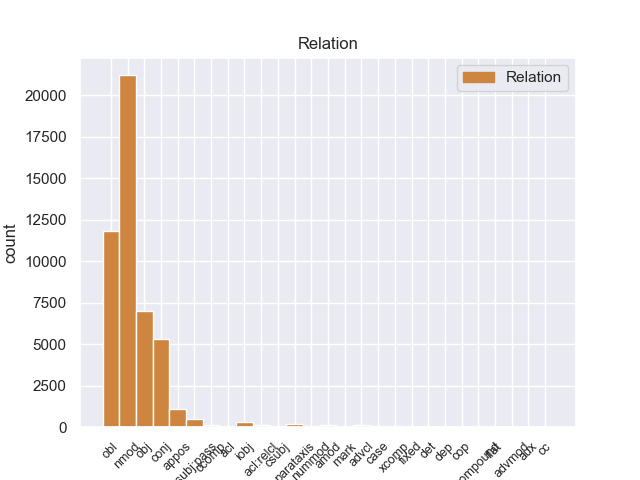
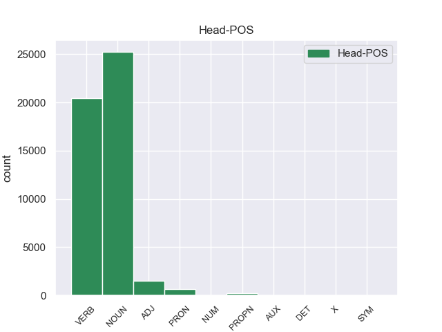
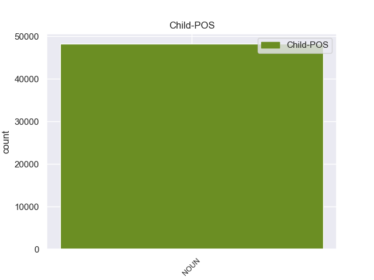

Distribution of features within this leaf



Agreement Rules sorted by frequency.
- When the dependent token is the nominal modifier(nmod) of the head token, and the head token is NOUN and the dependent token is NOUN.
1 El _ _ _ _ 0 _ _ _
2 estudio _ _ _ _ 0 _ _ _
3 es _ _ _ _ 0 _ _ _
4 muy _ _ _ _ 0 _ _ _
5 confortable _ _ _ _ 0 _ _ _
6 , _ _ _ _ 0 _ _ _
7 la _ _ _ _ 0 _ _ _
8 música _ _ _ _ 0 _ _ _
9 , _ _ _ _ 0 _ _ _
10 el _ _ _ _ 0 _ _ _
11 sonido sonido NOUN _ Gender=Masc|Number=Sing 0 _ _ _
12 de _ _ _ _ 0 _ _ _
13 el _ _ _ _ 0 _ _ _
14 agua agua NOUN _ Gender=Fem|Number=Sing 11 nmod _ SpaceAfter=No
15 , _ _ _ _ 0 _ _ _
16 la _ _ _ _ 0 _ _ _
17 luz _ _ _ _ 0 _ _ _
18 tenue _ _ _ _ 0 _ _ _
19 ... _ _ _ _ 0 _ _ _
20 y _ _ _ _ 0 _ _ _
21 lo _ _ _ _ 0 _ _ _
22 mejor _ _ _ _ 0 _ _ _
23 sus _ _ _ _ 0 _ _ _
24 manos _ _ _ _ 0 _ _ _
25 ! _ _ _ _ 0 _ _ _
1 El _ _ _ _ 0 _ _ _
2 estudio _ _ _ _ 0 _ _ _
3 , _ _ _ _ 0 _ _ _
4 publicado publicado VERB _ Gender=Masc|Number=Sing|VerbForm=Part 0 _ _ _
5 en _ _ _ _ 0 _ _ _
6 la _ _ _ _ 0 _ _ _
7 revista revista NOUN _ Gender=Fem|Number=Sing 4 obl _ _
8 Environmental _ _ _ _ 0 _ _ _
9 Health _ _ _ _ 0 _ _ _
10 Perspectives _ _ _ _ 0 _ _ _
11 , _ _ _ _ 0 _ _ _
12 precisó _ _ _ _ 0 _ _ _
13 que _ _ _ _ 0 _ _ _
14 el _ _ _ _ 0 _ _ _
15 herbicida _ _ _ _ 0 _ _ _
16 mata _ _ _ _ 0 _ _ _
17 una _ _ _ _ 0 _ _ _
18 gran _ _ _ _ 0 _ _ _
19 proporción _ _ _ _ 0 _ _ _
20 de _ _ _ _ 0 _ _ _
21 esas _ _ _ _ 0 _ _ _
22 células _ _ _ _ 0 _ _ _
23 después _ _ _ _ 0 _ _ _
24 de _ _ _ _ 0 _ _ _
25 sólo _ _ _ _ 0 _ _ _
26 dieciocho _ _ _ _ 0 _ _ _
27 horas _ _ _ _ 0 _ _ _
28 de _ _ _ _ 0 _ _ _
29 exposición _ _ _ _ 0 _ _ _
30 a _ _ _ _ 0 _ _ _
31 concentraciones _ _ _ _ 0 _ _ _
32 menores _ _ _ _ 0 _ _ _
33 que _ _ _ _ 0 _ _ _
34 las _ _ _ _ 0 _ _ _
35 utilizadas _ _ _ _ 0 _ _ _
36 en _ _ _ _ 0 _ _ _
37 el _ _ _ _ 0 _ _ _
38 uso _ _ _ _ 0 _ _ _
39 agrícola _ _ _ _ 0 _ _ _
40 . _ _ _ _ 0 _ _ _
1 El _ _ _ _ 0 _ _ _
2 estudio _ _ _ _ 0 _ _ _
3 , _ _ _ _ 0 _ _ _
4 publicado _ _ _ _ 0 _ _ _
5 en _ _ _ _ 0 _ _ _
6 la _ _ _ _ 0 _ _ _
7 revista _ _ _ _ 0 _ _ _
8 Environmental _ _ _ _ 0 _ _ _
9 Health _ _ _ _ 0 _ _ _
10 Perspectives _ _ _ _ 0 _ _ _
11 , _ _ _ _ 0 _ _ _
12 precisó _ _ _ _ 0 _ _ _
13 que _ _ _ _ 0 _ _ _
14 el _ _ _ _ 0 _ _ _
15 herbicida _ _ _ _ 0 _ _ _
16 mata matar VERB _ Mood=Ind|Number=Sing|Person=3|Tense=Pres|VerbForm=Fin 0 _ _ _
17 una _ _ _ _ 0 _ _ _
18 gran _ _ _ _ 0 _ _ _
19 proporción proporción NOUN _ Gender=Fem|Number=Sing 16 obj _ _
20 de _ _ _ _ 0 _ _ _
21 esas _ _ _ _ 0 _ _ _
22 células _ _ _ _ 0 _ _ _
23 después _ _ _ _ 0 _ _ _
24 de _ _ _ _ 0 _ _ _
25 sólo _ _ _ _ 0 _ _ _
26 dieciocho _ _ _ _ 0 _ _ _
27 horas _ _ _ _ 0 _ _ _
28 de _ _ _ _ 0 _ _ _
29 exposición _ _ _ _ 0 _ _ _
30 a _ _ _ _ 0 _ _ _
31 concentraciones _ _ _ _ 0 _ _ _
32 menores _ _ _ _ 0 _ _ _
33 que _ _ _ _ 0 _ _ _
34 las _ _ _ _ 0 _ _ _
35 utilizadas _ _ _ _ 0 _ _ _
36 en _ _ _ _ 0 _ _ _
37 el _ _ _ _ 0 _ _ _
38 uso _ _ _ _ 0 _ _ _
39 agrícola _ _ _ _ 0 _ _ _
40 . _ _ _ _ 0 _ _ _
1 El _ _ _ _ 0 _ _ _
2 estudio _ _ _ _ 0 _ _ _
3 es _ _ _ _ 0 _ _ _
4 muy _ _ _ _ 0 _ _ _
5 confortable _ _ _ _ 0 _ _ _
6 , _ _ _ _ 0 _ _ _
7 la _ _ _ _ 0 _ _ _
8 música música NOUN _ Gender=Fem|Number=Sing 0 _ _ _
9 , _ _ _ _ 0 _ _ _
10 el _ _ _ _ 0 _ _ _
11 sonido _ _ _ _ 0 _ _ _
12 de _ _ _ _ 0 _ _ _
13 el _ _ _ _ 0 _ _ _
14 agua _ _ _ _ 0 _ _ _
15 , _ _ _ _ 0 _ _ _
16 la _ _ _ _ 0 _ _ _
17 luz luz NOUN _ Gender=Fem|Number=Sing 8 conj _ _
18 tenue _ _ _ _ 0 _ _ _
19 ... _ _ _ _ 0 _ _ _
20 y _ _ _ _ 0 _ _ _
21 lo _ _ _ _ 0 _ _ _
22 mejor _ _ _ _ 0 _ _ _
23 sus _ _ _ _ 0 _ _ _
24 manos _ _ _ _ 0 _ _ _
25 ! _ _ _ _ 0 _ _ _
1 La _ _ _ _ 0 _ _ _
2 ocupación _ _ _ _ 0 _ _ _
3 brasileña _ _ _ _ 0 _ _ _
4 duro _ _ _ _ 0 _ _ _
5 hasta _ _ _ _ 0 _ _ _
6 1876 _ _ _ _ 0 _ _ _
7 tras _ _ _ _ 0 _ _ _
8 esto _ _ _ _ 0 _ _ _
9 se _ _ _ _ 0 _ _ _
10 sucederia _ _ _ _ 0 _ _ _
11 una _ _ _ _ 0 _ _ _
12 etapa _ _ _ _ 0 _ _ _
13 de _ _ _ _ 0 _ _ _
14 constantes _ _ _ _ 0 _ _ _
15 golpes _ _ _ _ 0 _ _ _
16 de _ _ _ _ 0 _ _ _
17 estado _ _ _ _ 0 _ _ _
18 , _ _ _ _ 0 _ _ _
19 en _ _ _ _ 0 _ _ _
20 la _ _ _ _ 0 _ _ _
21 que _ _ _ _ 0 _ _ _
22 el _ _ _ _ 0 _ _ _
23 control _ _ _ _ 0 _ _ _
24 de _ _ _ _ 0 _ _ _
25 el _ _ _ _ 0 _ _ _
26 gobierno _ _ _ _ 0 _ _ _
27 era _ _ _ _ 0 _ _ _
28 efectiva efectivo ADJ _ Gender=Fem|Number=Sing 0 _ _ _
29 solo _ _ _ _ 0 _ _ _
30 en _ _ _ _ 0 _ _ _
31 la _ _ _ _ 0 _ _ _
32 zona zona NOUN _ Gender=Fem|Number=Sing 28 nmod _ _
33 de _ _ _ _ 0 _ _ _
34 Asunción _ _ _ _ 0 _ _ _
35 . _ _ _ _ 0 _ _ _
1 Pero _ _ _ _ 0 _ _ _
2 otras _ _ _ _ 0 _ _ _
3 veces _ _ _ _ 0 _ _ _
4 cuando _ _ _ _ 0 _ _ _
5 el _ _ _ _ 0 _ _ _
6 paciente _ _ _ _ 0 _ _ _
7 tiene _ _ _ _ 0 _ _ _
8 una _ _ _ _ 0 _ _ _
9 leucocitosis _ _ _ _ 0 _ _ _
10 que _ _ _ _ 0 _ _ _
11 es _ _ _ _ 0 _ _ _
12 moderada _ _ _ _ 0 _ _ _
13 es _ _ _ _ 0 _ _ _
14 importante _ _ _ _ 0 _ _ _
15 hacer _ _ _ _ 0 _ _ _
16 el _ _ _ _ 0 _ _ _
17 diagnostico _ _ _ _ 0 _ _ _
18 diferencial _ _ _ _ 0 _ _ _
19 de _ _ _ _ 0 _ _ _
20 LMC _ _ _ _ 0 _ _ _
21 con _ _ _ _ 0 _ _ _
22 otros _ _ _ _ 0 _ _ _
23 síndromes _ _ _ _ 0 _ _ _
24 mieloproliferativos _ _ _ _ 0 _ _ _
25 , _ _ _ _ 0 _ _ _
26 con _ _ _ _ 0 _ _ _
27 leucocitos leucocito NOUN _ Gender=Masc|Number=Plur 0 _ _ _
28 reactivos _ _ _ _ 0 _ _ _
29 , _ _ _ _ 0 _ _ _
30 infecciones infección NOUN _ Gender=Fem|Number=Plur 27 appos _ SpaceAfter=No
31 , _ _ _ _ 0 _ _ _
32 corticoterapia _ _ _ _ 0 _ _ _
33 , _ _ _ _ 0 _ _ _
34 con _ _ _ _ 0 _ _ _
35 tumores _ _ _ _ 0 _ _ _
36 metastásicos _ _ _ _ 0 _ _ _
37 en _ _ _ _ 0 _ _ _
38 médula _ _ _ _ 0 _ _ _
39 ósea _ _ _ _ 0 _ _ _
40 , _ _ _ _ 0 _ _ _
41 estados _ _ _ _ 0 _ _ _
42 de _ _ _ _ 0 _ _ _
43 shock _ _ _ _ 0 _ _ _
44 hemolisis _ _ _ _ 0 _ _ _
45 o _ _ _ _ 0 _ _ _
46 hemorragias _ _ _ _ 0 _ _ _
47 agudas _ _ _ _ 0 _ _ _
48 y _ _ _ _ 0 _ _ _
49 reacción _ _ _ _ 0 _ _ _
50 medular _ _ _ _ 0 _ _ _
51 de _ _ _ _ 0 _ _ _
52 agranulocitosis _ _ _ _ 0 _ _ _
53 . _ _ _ _ 0 _ _ _
1 La _ _ _ _ 0 _ _ _
2 final final NOUN _ Gender=Fem|Number=Sing 4 nsubj:pass _ _
3 fue _ _ _ _ 0 _ _ _
4 protagonizada protagonizar VERB _ Gender=Fem|Number=Sing|Tense=Past|VerbForm=Part 0 _ _ _
5 por _ _ _ _ 0 _ _ _
6 Looder _ _ _ _ 0 _ _ _
7 y _ _ _ _ 0 _ _ _
8 Lytos _ _ _ _ 0 _ _ _
9 , _ _ _ _ 0 _ _ _
10 cuyo _ _ _ _ 0 _ _ _
11 vencedor _ _ _ _ 0 _ _ _
12 fue _ _ _ _ 0 _ _ _
13 este _ _ _ _ 0 _ _ _
14 último _ _ _ _ 0 _ _ _
15 por _ _ _ _ 0 _ _ _
16 decisión _ _ _ _ 0 _ _ _
17 de _ _ _ _ 0 _ _ _
18 el _ _ _ _ 0 _ _ _
19 jurado _ _ _ _ 0 _ _ _
20 ( _ _ _ _ 0 _ _ _
21 Eklips _ _ _ _ 0 _ _ _
22 , _ _ _ _ 0 _ _ _
23 Markooz _ _ _ _ 0 _ _ _
24 y _ _ _ _ 0 _ _ _
25 Bee _ _ _ _ 0 _ _ _
26 Low _ _ _ _ 0 _ _ _
27 ) _ _ _ _ 0 _ _ _
28 . _ _ _ _ 0 _ _ _
1 Pero _ _ _ _ 0 _ _ _
2 el _ _ _ _ 0 _ _ _
3 ex _ _ _ _ 0 _ _ _
4 presidente _ _ _ _ 0 _ _ _
5 y _ _ _ _ 0 _ _ _
6 ex _ _ _ _ 0 _ _ _
7 gobernador _ _ _ _ 0 _ _ _
8 fue _ _ _ _ 0 _ _ _
9 más _ _ _ _ 0 _ _ _
10 allá _ _ _ _ 0 _ _ _
11 : _ _ _ _ 0 _ _ _
12 le _ _ _ _ 0 _ _ _
13 escribió escribir VERB _ Mood=Ind|Number=Sing|Person=3|Tense=Past|VerbForm=Fin 0 _ _ _
14 una _ _ _ _ 0 _ _ _
15 dura _ _ _ _ 0 _ _ _
16 carta _ _ _ _ 0 _ _ _
17 a _ _ _ _ 0 _ _ _
18 Aníbal _ _ _ _ 0 _ _ _
19 Fernández _ _ _ _ 0 _ _ _
20 con _ _ _ _ 0 _ _ _
21 recriminaciones _ _ _ _ 0 _ _ _
22 sobre _ _ _ _ 0 _ _ _
23 su _ _ _ _ 0 _ _ _
24 conducta _ _ _ _ 0 _ _ _
25 y _ _ _ _ 0 _ _ _
26 puso poner NOUN _ Number=Sing 13 conj _ _
27 en _ _ _ _ 0 _ _ _
28 tela _ _ _ _ 0 _ _ _
29 de _ _ _ _ 0 _ _ _
30 juicio _ _ _ _ 0 _ _ _
31 temas _ _ _ _ 0 _ _ _
32 importantes _ _ _ _ 0 _ _ _
33 y _ _ _ _ 0 _ _ _
34 gravosos _ _ _ _ 0 _ _ _
35 para _ _ _ _ 0 _ _ _
36 el _ _ _ _ 0 _ _ _
37 jefe _ _ _ _ 0 _ _ _
38 de _ _ _ _ 0 _ _ _
39 Gabinete _ _ _ _ 0 _ _ _
40 , _ _ _ _ 0 _ _ _
41 quien _ _ _ _ 0 _ _ _
42 hasta _ _ _ _ 0 _ _ _
43 el _ _ _ _ 0 _ _ _
44 momento _ _ _ _ 0 _ _ _
45 de _ _ _ _ 0 _ _ _
46 escribir _ _ _ _ 0 _ _ _
47 este _ _ _ _ 0 _ _ _
48 artículo _ _ _ _ 0 _ _ _
49 dio _ _ _ _ 0 _ _ _
50 el _ _ _ _ 0 _ _ _
51 silencio _ _ _ _ 0 _ _ _
52 como _ _ _ _ 0 _ _ _
53 respuesta _ _ _ _ 0 _ _ _
54 . _ _ _ _ 0 _ _ _
1 Si _ _ _ _ 0 _ _ _
2 es _ _ _ _ 0 _ _ _
3 mayor _ _ _ _ 0 _ _ _
4 , _ _ _ _ 0 _ _ _
5 será _ _ _ _ 0 _ _ _
6 similar _ _ _ _ 0 _ _ _
7 a _ _ _ _ 0 _ _ _
8 la él PRON _ Case=Acc|Gender=Fem|Number=Sing|Person=3|PrepCase=Npr|PronType=Prs 0 _ _ _
9 de _ _ _ _ 0 _ _ _
10 de _ _ _ _ 0 _ _ _
11 un _ _ _ _ 0 _ _ _
12 cohete cohete NOUN _ Gender=Masc|Number=Sing 8 nmod _ _
13 que _ _ _ _ 0 _ _ _
14 viaje _ _ _ _ 0 _ _ _
15 a _ _ _ _ 0 _ _ _
16 la _ _ _ _ 0 _ _ _
17 luna _ _ _ _ 0 _ _ _
18 con _ _ _ _ 0 _ _ _
19 cargas _ _ _ _ 0 _ _ _
20 opuestas _ _ _ _ 0 _ _ _
21 . _ _ _ _ 0 _ _ _
1 Demichelis _ _ _ _ 0 _ _ _
2 , _ _ _ _ 0 _ _ _
3 defensa _ _ _ _ 0 _ _ _
4 de _ _ _ _ 0 _ _ _
5 el _ _ _ _ 0 _ _ _
6 Bayern _ _ _ _ 0 _ _ _
7 Múnich _ _ _ _ 0 _ _ _
8 costará costar VERB _ Mood=Ind|Number=Sing|Person=3|Tense=Fut|VerbForm=Fin 0 _ _ _
9 a _ _ _ _ 0 _ _ _
10 el _ _ _ _ 0 _ _ _
11 conjunto conjunto NOUN _ Gender=Masc|Number=Sing 8 iobj _ _
12 malacitano _ _ _ _ 0 _ _ _
13 unos _ _ _ _ 0 _ _ _
14 3 _ _ _ _ 0 _ _ _
15 millones _ _ _ _ 0 _ _ _
16 de _ _ _ _ 0 _ _ _
17 euros _ _ _ _ 0 _ _ _
18 , _ _ _ _ 0 _ _ _
19 un _ _ _ _ 0 _ _ _
20 dinero _ _ _ _ 0 _ _ _
21 que _ _ _ _ 0 _ _ _
22 servirá _ _ _ _ 0 _ _ _
23 para _ _ _ _ 0 _ _ _
24 invertir _ _ _ _ 0 _ _ _
25 en _ _ _ _ 0 _ _ _
26 un _ _ _ _ 0 _ _ _
27 zaguero _ _ _ _ 0 _ _ _
28 que _ _ _ _ 0 _ _ _
29 ha _ _ _ _ 0 _ _ _
30 dado _ _ _ _ 0 _ _ _
31 todo _ _ _ _ 0 _ _ _
32 por _ _ _ _ 0 _ _ _
33 ser _ _ _ _ 0 _ _ _
34 de _ _ _ _ 0 _ _ _
35 nuevo _ _ _ _ 0 _ _ _
36 el _ _ _ _ 0 _ _ _
37 líder _ _ _ _ 0 _ _ _
38 un _ _ _ _ 0 _ _ _
39 puesto _ _ _ _ 0 _ _ _
40 maldito _ _ _ _ 0 _ _ _
41 en _ _ _ _ 0 _ _ _
42 La _ _ _ _ 0 _ _ _
43 Rosaleda _ _ _ _ 0 _ _ _
44 . _ _ _ _ 0 _ _ _
1 El _ _ _ _ 0 _ _ _
2 estudio _ _ _ _ 0 _ _ _
3 es _ _ _ _ 0 _ _ _
4 muy _ _ _ _ 0 _ _ _
5 confortable confortable ADJ _ Number=Sing 0 _ _ _
6 , _ _ _ _ 0 _ _ _
7 la _ _ _ _ 0 _ _ _
8 música _ _ _ _ 0 _ _ _
9 , _ _ _ _ 0 _ _ _
10 el _ _ _ _ 0 _ _ _
11 sonido _ _ _ _ 0 _ _ _
12 de _ _ _ _ 0 _ _ _
13 el _ _ _ _ 0 _ _ _
14 agua _ _ _ _ 0 _ _ _
15 , _ _ _ _ 0 _ _ _
16 la _ _ _ _ 0 _ _ _
17 luz _ _ _ _ 0 _ _ _
18 tenue _ _ _ _ 0 _ _ _
19 ... _ _ _ _ 0 _ _ _
20 y _ _ _ _ 0 _ _ _
21 lo _ _ _ _ 0 _ _ _
22 mejor mejor NOUN _ Number=Sing 5 conj _ _
23 sus _ _ _ _ 0 _ _ _
24 manos _ _ _ _ 0 _ _ _
25 ! _ _ _ _ 0 _ _ _
1 La _ _ _ _ 0 _ _ _
2 temperatura _ _ _ _ 0 _ _ _
3 mínima _ _ _ _ 0 _ _ _
4 de _ _ _ _ 0 _ _ _
5 el _ _ _ _ 0 _ _ _
6 mes mes NOUN _ Gender=Masc|Number=Sing 0 _ _ _
7 más _ _ _ _ 0 _ _ _
8 frío frío NOUN _ Gender=Masc|Number=Sing 6 amod _ SpaceAfter=No
9 , _ _ _ _ 0 _ _ _
10 enero _ _ _ _ 0 _ _ _
11 , _ _ _ _ 0 _ _ _
12 es _ _ _ _ 0 _ _ _
13 alrededor _ _ _ _ 0 _ _ _
14 de _ _ _ _ 0 _ _ _
15 4 _ _ _ _ 0 _ _ _
16 ° _ _ _ _ 0 _ _ _
17 C _ _ _ _ 0 _ _ _
18 y _ _ _ _ 0 _ _ _
19 la _ _ _ _ 0 _ _ _
20 máxima _ _ _ _ 0 _ _ _
21 se _ _ _ _ 0 _ _ _
22 presenta _ _ _ _ 0 _ _ _
23 en _ _ _ _ 0 _ _ _
24 abril _ _ _ _ 0 _ _ _
25 y _ _ _ _ 0 _ _ _
26 mayo _ _ _ _ 0 _ _ _
27 que _ _ _ _ 0 _ _ _
28 en _ _ _ _ 0 _ _ _
29 promedio _ _ _ _ 0 _ _ _
30 es _ _ _ _ 0 _ _ _
31 de _ _ _ _ 0 _ _ _
32 27 _ _ _ _ 0 _ _ _
33 ° _ _ _ _ 0 _ _ _
34 C. _ _ _ _ 0 _ _ _
1 La _ _ _ _ 0 _ _ _
2 final final NOUN _ Gender=Fem|Number=Sing 0 _ _ _
3 fue _ _ _ _ 0 _ _ _
4 protagonizada _ _ _ _ 0 _ _ _
5 por _ _ _ _ 0 _ _ _
6 Looder _ _ _ _ 0 _ _ _
7 y _ _ _ _ 0 _ _ _
8 Lytos _ _ _ _ 0 _ _ _
9 , _ _ _ _ 0 _ _ _
10 cuyo _ _ _ _ 0 _ _ _
11 vencedor _ _ _ _ 0 _ _ _
12 fue _ _ _ _ 0 _ _ _
13 este _ _ _ _ 0 _ _ _
14 último último NOUN _ Gender=Masc|Number=Sing 2 acl:relcl _ _
15 por _ _ _ _ 0 _ _ _
16 decisión _ _ _ _ 0 _ _ _
17 de _ _ _ _ 0 _ _ _
18 el _ _ _ _ 0 _ _ _
19 jurado _ _ _ _ 0 _ _ _
20 ( _ _ _ _ 0 _ _ _
21 Eklips _ _ _ _ 0 _ _ _
22 , _ _ _ _ 0 _ _ _
23 Markooz _ _ _ _ 0 _ _ _
24 y _ _ _ _ 0 _ _ _
25 Bee _ _ _ _ 0 _ _ _
26 Low _ _ _ _ 0 _ _ _
27 ) _ _ _ _ 0 _ _ _
28 . _ _ _ _ 0 _ _ _
1 La _ _ _ _ 0 _ _ _
2 FAI _ _ _ _ 0 _ _ _
3 inicialmente _ _ _ _ 0 _ _ _
4 no _ _ _ _ 0 _ _ _
5 reconoció _ _ _ _ 0 _ _ _
6 el _ _ _ _ 0 _ _ _
7 logro _ _ _ _ 0 _ _ _
8 porque _ _ _ _ 0 _ _ _
9 no _ _ _ _ 0 _ _ _
10 fue _ _ _ _ 0 _ _ _
11 en _ _ _ _ 0 _ _ _
12 la _ _ _ _ 0 _ _ _
13 Tierra _ _ _ _ 0 _ _ _
14 , _ _ _ _ 0 _ _ _
15 pero _ _ _ _ 0 _ _ _
16 más _ _ _ _ 0 _ _ _
17 tarde _ _ _ _ 0 _ _ _
18 reconoció reconocer VERB _ Mood=Ind|Number=Sing|Person=3|Tense=Past|VerbForm=Fin 0 _ _ _
19 que _ _ _ _ 0 _ _ _
20 Gagarin _ _ _ _ 0 _ _ _
21 fue _ _ _ _ 0 _ _ _
22 el _ _ _ _ 0 _ _ _
23 primer _ _ _ _ 0 _ _ _
24 humano humano NOUN _ Gender=Masc|Number=Sing 18 ccomp _ _
25 en _ _ _ _ 0 _ _ _
26 volar _ _ _ _ 0 _ _ _
27 a _ _ _ _ 0 _ _ _
28 el _ _ _ _ 0 _ _ _
29 espacio _ _ _ _ 0 _ _ _
30 . _ _ _ _ 0 _ _ _
1 El _ _ _ _ 0 _ _ _
2 atareco atareco PROPN _ Gender=Masc|Number=Sing 0 _ _ _
3 ( _ _ _ _ 0 _ _ _
4 localismo localismo NOUN _ Gender=Masc|Number=Sing 2 appos _ _
5 canario _ _ _ _ 0 _ _ _
6 ) _ _ _ _ 0 _ _ _
7 es _ _ _ _ 0 _ _ _
8 un _ _ _ _ 0 _ _ _
9 cencerro _ _ _ _ 0 _ _ _
10 o _ _ _ _ 0 _ _ _
11 campana _ _ _ _ 0 _ _ _
12 que _ _ _ _ 0 _ _ _
13 se _ _ _ _ 0 _ _ _
14 cuelga _ _ _ _ 0 _ _ _
15 a _ _ _ _ 0 _ _ _
16 el _ _ _ _ 0 _ _ _
17 cuello _ _ _ _ 0 _ _ _
18 a _ _ _ _ 0 _ _ _
19 los _ _ _ _ 0 _ _ _
20 animales _ _ _ _ 0 _ _ _
21 de _ _ _ _ 0 _ _ _
22 granja _ _ _ _ 0 _ _ _
23 , _ _ _ _ 0 _ _ _
24 tales _ _ _ _ 0 _ _ _
25 como _ _ _ _ 0 _ _ _
26 cabras _ _ _ _ 0 _ _ _
27 , _ _ _ _ 0 _ _ _
28 ovejas _ _ _ _ 0 _ _ _
29 y _ _ _ _ 0 _ _ _
30 vacas _ _ _ _ 0 _ _ _
31 . _ _ _ _ 0 _ _ _
1 Este _ _ _ _ 0 _ _ _
2 joven _ _ _ _ 0 _ _ _
3 extremeño _ _ _ _ 0 _ _ _
4 iniciaba iniciar VERB _ Mood=Ind|Number=Sing|Person=3|Tense=Imp|VerbForm=Fin 0 _ _ _
5 su _ _ _ _ 0 _ _ _
6 carrera _ _ _ _ 0 _ _ _
7 como _ _ _ _ 0 _ _ _
8 compositor _ _ _ _ 0 _ _ _
9 e _ _ _ _ 0 _ _ _
10 intérprete _ _ _ _ 0 _ _ _
11 , _ _ _ _ 0 _ _ _
12 con _ _ _ _ 0 _ _ _
13 tan _ _ _ _ 0 _ _ _
14 solo _ _ _ _ 0 _ _ _
15 10 _ _ _ _ 0 _ _ _
16 años _ _ _ _ 0 _ _ _
17 , _ _ _ _ 0 _ _ _
18 ya _ _ _ _ 0 _ _ _
19 que _ _ _ _ 0 _ _ _
20 sus _ _ _ _ 0 _ _ _
21 juguetes _ _ _ _ 0 _ _ _
22 preferidos _ _ _ _ 0 _ _ _
23 eran _ _ _ _ 0 _ _ _
24 un _ _ _ _ 0 _ _ _
25 micrófono micrófono NOUN _ Gender=Masc|Number=Sing 4 advcl _ SpaceAfter=No
26 , _ _ _ _ 0 _ _ _
27 que _ _ _ _ 0 _ _ _
28 le _ _ _ _ 0 _ _ _
29 trajeron _ _ _ _ 0 _ _ _
30 los _ _ _ _ 0 _ _ _
31 reyes _ _ _ _ 0 _ _ _
32 magos _ _ _ _ 0 _ _ _
33 y _ _ _ _ 0 _ _ _
34 el _ _ _ _ 0 _ _ _
35 espejo _ _ _ _ 0 _ _ _
36 de _ _ _ _ 0 _ _ _
37 el _ _ _ _ 0 _ _ _
38 salón _ _ _ _ 0 _ _ _
39 de _ _ _ _ 0 _ _ _
40 su _ _ _ _ 0 _ _ _
41 casa _ _ _ _ 0 _ _ _
42 donde _ _ _ _ 0 _ _ _
43 se _ _ _ _ 0 _ _ _
44 imaginaba _ _ _ _ 0 _ _ _
45 a _ _ _ _ 0 _ _ _
46 todo _ _ _ _ 0 _ _ _
47 un _ _ _ _ 0 _ _ _
48 público _ _ _ _ 0 _ _ _
49 entregado _ _ _ _ 0 _ _ _
50 a _ _ _ _ 0 _ _ _
51 el _ _ _ _ 0 _ _ _
52 concierto _ _ _ _ 0 _ _ _
53 , _ _ _ _ 0 _ _ _
54 mientras _ _ _ _ 0 _ _ _
55 imitaba _ _ _ _ 0 _ _ _
56 a _ _ _ _ 0 _ _ _
57 sus _ _ _ _ 0 _ _ _
58 artistas _ _ _ _ 0 _ _ _
59 favoritos _ _ _ _ 0 _ _ _
60 . _ _ _ _ 0 _ _ _
1 Además _ _ _ _ 0 _ _ _
2 de _ _ _ _ 0 _ _ _
3 el _ _ _ _ 0 _ _ _
4 éxito _ _ _ _ 0 _ _ _
5 de _ _ _ _ 0 _ _ _
6 crítica _ _ _ _ 0 _ _ _
7 , _ _ _ _ 0 _ _ _
8 Tug _ _ _ _ 0 _ _ _
9 of _ _ _ _ 0 _ _ _
10 War _ _ _ _ 0 _ _ _
11 fue _ _ _ _ 0 _ _ _
12 también _ _ _ _ 0 _ _ _
13 un _ _ _ _ 0 _ _ _
14 éxito _ _ _ _ 0 _ _ _
15 de _ _ _ _ 0 _ _ _
16 ventas _ _ _ _ 0 _ _ _
17 , _ _ _ _ 0 _ _ _
18 vendiendo _ _ _ _ 0 _ _ _
19 varios _ _ _ _ 0 _ _ _
20 millones millón NOUN _ Gender=Masc|Number=Plur 22 nummod _ _
21 de _ _ _ _ 0 _ _ _
22 copias copia NOUN _ Gender=Fem|Number=Plur 0 _ _ _
23 a _ _ _ _ 0 _ _ _
24 nivel _ _ _ _ 0 _ _ _
25 mundial _ _ _ _ 0 _ _ _
26 y _ _ _ _ 0 _ _ _
27 siendo _ _ _ _ 0 _ _ _
28 certificado _ _ _ _ 0 _ _ _
29 con _ _ _ _ 0 _ _ _
30 los _ _ _ _ 0 _ _ _
31 años _ _ _ _ 0 _ _ _
32 como _ _ _ _ 0 _ _ _
33 disco _ _ _ _ 0 _ _ _
34 de _ _ _ _ 0 _ _ _
35 platino _ _ _ _ 0 _ _ _
36 en _ _ _ _ 0 _ _ _
37 Estados _ _ _ _ 0 _ _ _
38 Unidos _ _ _ _ 0 _ _ _
39 por _ _ _ _ 0 _ _ _
40 la _ _ _ _ 0 _ _ _
41 RIAA _ _ _ _ 0 _ _ _
42 y _ _ _ _ 0 _ _ _
43 como _ _ _ _ 0 _ _ _
44 disco _ _ _ _ 0 _ _ _
45 de _ _ _ _ 0 _ _ _
46 oro _ _ _ _ 0 _ _ _
47 en _ _ _ _ 0 _ _ _
48 el _ _ _ _ 0 _ _ _
49 Reino _ _ _ _ 0 _ _ _
50 Unido _ _ _ _ 0 _ _ _
51 . _ _ _ _ 0 _ _ _
1 El _ _ _ _ 0 _ _ _
2 plazo _ _ _ _ 0 _ _ _
3 de _ _ _ _ 0 _ _ _
4 la _ _ _ _ 0 _ _ _
5 Europa _ _ _ _ 0 _ _ _
6 League _ _ _ _ 0 _ _ _
7 expirará expirar VERB _ Mood=Ind|Number=Sing|Person=3|Tense=Fut|VerbForm=Fin 0 _ _ _
8 esta _ _ _ _ 0 _ _ _
9 misma _ _ _ _ 0 _ _ _
10 noche _ _ _ _ 0 _ _ _
11 , _ _ _ _ 0 _ _ _
12 por _ _ _ _ 0 _ _ _
13 lo _ _ _ _ 0 _ _ _
14 que _ _ _ _ 0 _ _ _
15 se _ _ _ _ 0 _ _ _
16 deberán _ _ _ _ 0 _ _ _
17 aligerar _ _ _ _ 0 _ _ _
18 bastante _ _ _ _ 0 _ _ _
19 en _ _ _ _ 0 _ _ _
20 su _ _ _ _ 0 _ _ _
21 pase _ _ _ _ 0 _ _ _
22 , _ _ _ _ 0 _ _ _
23 cosa cosa NOUN _ Gender=Fem|Number=Sing 7 parataxis _ _
24 que _ _ _ _ 0 _ _ _
25 complicará _ _ _ _ 0 _ _ _
26 que _ _ _ _ 0 _ _ _
27 juegue _ _ _ _ 0 _ _ _
28 con _ _ _ _ 0 _ _ _
29 un _ _ _ _ 0 _ _ _
30 solo _ _ _ _ 0 _ _ _
31 delantero _ _ _ _ 0 _ _ _
32 centro _ _ _ _ 0 _ _ _
33 o _ _ _ _ 0 _ _ _
34 dos _ _ _ _ 0 _ _ _
35 si _ _ _ _ 0 _ _ _
36 es _ _ _ _ 0 _ _ _
37 que _ _ _ _ 0 _ _ _
38 no _ _ _ _ 0 _ _ _
39 se _ _ _ _ 0 _ _ _
40 va _ _ _ _ 0 _ _ _
41 el _ _ _ _ 0 _ _ _
42 uruguayo _ _ _ _ 0 _ _ _
43 . _ _ _ _ 0 _ _ _
1 Situada _ _ _ _ 0 _ _ _
2 en _ _ _ _ 0 _ _ _
3 La _ _ _ _ 0 _ _ _
4 Mancha _ _ _ _ 0 _ _ _
5 toledana _ _ _ _ 0 _ _ _
6 en _ _ _ _ 0 _ _ _
7 un _ _ _ _ 0 _ _ _
8 enclave _ _ _ _ 0 _ _ _
9 estratégico _ _ _ _ 0 _ _ _
10 para _ _ _ _ 0 _ _ _
11 las _ _ _ _ 0 _ _ _
12 comunicaciones _ _ _ _ 0 _ _ _
13 ferroviarias _ _ _ _ 0 _ _ _
14 a _ _ _ _ 0 _ _ _
15 nivel _ _ _ _ 0 _ _ _
16 nacional _ _ _ _ 0 _ _ _
17 , _ _ _ _ 0 _ _ _
18 a _ _ _ _ 0 _ _ _
19 el _ _ _ _ 0 _ _ _
20 sur _ _ _ _ 0 _ _ _
21 de _ _ _ _ 0 _ _ _
22 Madrid _ _ _ _ 0 _ _ _
23 y _ _ _ _ 0 _ _ _
24 a _ _ _ _ 0 _ _ _
25 el _ _ _ _ 0 _ _ _
26 sudeste _ _ _ _ 0 _ _ _
27 de _ _ _ _ 0 _ _ _
28 Toledo _ _ _ _ 0 _ _ _
29 , _ _ _ _ 0 _ _ _
30 se _ _ _ _ 0 _ _ _
31 encuentra _ _ _ _ 0 _ _ _
32 en _ _ _ _ 0 _ _ _
33 el _ _ _ _ 0 _ _ _
34 Valle valle PROPN _ Gender=Masc|Number=Sing 0 _ _ _
35 de _ _ _ _ 0 _ _ _
36 el _ _ _ _ 0 _ _ _
37 rio rio NOUN _ Gender=Masc|Number=Sing 34 nmod _ _
38 riánsares _ _ _ _ 0 _ _ _
39 a _ _ _ _ 0 _ _ _
40 los _ _ _ _ 0 _ _ _
41 pies _ _ _ _ 0 _ _ _
42 de _ _ _ _ 0 _ _ _
43 las _ _ _ _ 0 _ _ _
44 sierras _ _ _ _ 0 _ _ _
45 de _ _ _ _ 0 _ _ _
46 El _ _ _ _ 0 _ _ _
47 Romeral _ _ _ _ 0 _ _ _
48 y _ _ _ _ 0 _ _ _
49 parte _ _ _ _ 0 _ _ _
50 de _ _ _ _ 0 _ _ _
51 el _ _ _ _ 0 _ _ _
52 casco _ _ _ _ 0 _ _ _
53 urbano _ _ _ _ 0 _ _ _
54 se _ _ _ _ 0 _ _ _
55 encuentra _ _ _ _ 0 _ _ _
56 en _ _ _ _ 0 _ _ _
57 el _ _ _ _ 0 _ _ _
58 fondo _ _ _ _ 0 _ _ _
59 de _ _ _ _ 0 _ _ _
60 un _ _ _ _ 0 _ _ _
61 lago _ _ _ _ 0 _ _ _
62 seco _ _ _ _ 0 _ _ _
63 de _ _ _ _ 0 _ _ _
64 el _ _ _ _ 0 _ _ _
65 que _ _ _ _ 0 _ _ _
66 forma _ _ _ _ 0 _ _ _
67 parte _ _ _ _ 0 _ _ _
68 la _ _ _ _ 0 _ _ _
69 laguna _ _ _ _ 0 _ _ _
70 Larga _ _ _ _ 0 _ _ _
71 . _ _ _ _ 0 _ _ _
1 Ella _ _ _ _ 0 _ _ _
2 protestó _ _ _ _ 0 _ _ _
3 a _ _ _ _ 0 _ _ _
4 el _ _ _ _ 0 _ _ _
5 respecto _ _ _ _ 0 _ _ _
6 , _ _ _ _ 0 _ _ _
7 por _ _ _ _ 0 _ _ _
8 lo _ _ _ _ 0 _ _ _
9 que _ _ _ _ 0 _ _ _
10 un _ _ _ _ 0 _ _ _
11 ser _ _ _ _ 0 _ _ _
12 - _ _ _ _ 0 _ _ _
13 a _ _ _ _ 0 _ _ _
14 el _ _ _ _ 0 _ _ _
15 que _ _ _ _ 0 _ _ _
16 ella _ _ _ _ 0 _ _ _
17 posteriormente _ _ _ _ 0 _ _ _
18 comenzó comenzar VERB _ Mood=Ind|Number=Sing|Person=3|Tense=Past|VerbForm=Fin 0 _ _ _
19 a _ _ _ _ 0 _ _ _
20 llamar _ _ _ _ 0 _ _ _
21 " _ _ _ _ 0 _ _ _
22 el _ _ _ _ 0 _ _ _
23 líder líder NOUN _ Number=Sing 18 xcomp _ SpaceAfter=No
24 " _ _ _ _ 0 _ _ _
25 -- _ _ _ _ 0 _ _ _
26 le _ _ _ _ 0 _ _ _
27 dijo _ _ _ _ 0 _ _ _
28 que _ _ _ _ 0 _ _ _
29 si _ _ _ _ 0 _ _ _
30 Barney _ _ _ _ 0 _ _ _
31 y _ _ _ _ 0 _ _ _
32 ella _ _ _ _ 0 _ _ _
33 eran _ _ _ _ 0 _ _ _
34 examinados _ _ _ _ 0 _ _ _
35 juntos _ _ _ _ 0 _ _ _
36 tomaría _ _ _ _ 0 _ _ _
37 mucho _ _ _ _ 0 _ _ _
38 más _ _ _ _ 0 _ _ _
39 tiempo _ _ _ _ 0 _ _ _
40 realizar _ _ _ _ 0 _ _ _
41 las _ _ _ _ 0 _ _ _
42 pruebas _ _ _ _ 0 _ _ _
43 . _ _ _ _ 0 _ _ _
1 Según _ _ _ _ 0 _ _ _
2 los _ _ _ _ 0 _ _ _
3 datos _ _ _ _ 0 _ _ _
4 publicados _ _ _ _ 0 _ _ _
5 en _ _ _ _ 0 _ _ _
6 la _ _ _ _ 0 _ _ _
7 página página NOUN _ Gender=Fem|Number=Sing 0 _ _ _
8 web web NOUN _ Number=Sing 7 compound _ _
9 de _ _ _ _ 0 _ _ _
10 el _ _ _ _ 0 _ _ _
11 Congreso _ _ _ _ 0 _ _ _
12 de _ _ _ _ 0 _ _ _
13 el _ _ _ _ 0 _ _ _
14 Estado _ _ _ _ 0 _ _ _
15 , _ _ _ _ 0 _ _ _
16 la _ _ _ _ 0 _ _ _
17 Federación _ _ _ _ 0 _ _ _
18 le _ _ _ _ 0 _ _ _
19 asigna _ _ _ _ 0 _ _ _
20 a _ _ _ _ 0 _ _ _
21 Durango _ _ _ _ 0 _ _ _
22 recursos _ _ _ _ 0 _ _ _
23 para _ _ _ _ 0 _ _ _
24 educación _ _ _ _ 0 _ _ _
25 provenientes _ _ _ _ 0 _ _ _
26 de _ _ _ _ 0 _ _ _
27 el _ _ _ _ 0 _ _ _
28 Fondo _ _ _ _ 0 _ _ _
29 de _ _ _ _ 0 _ _ _
30 Aportación _ _ _ _ 0 _ _ _
31 para _ _ _ _ 0 _ _ _
32 la _ _ _ _ 0 _ _ _
33 Educación _ _ _ _ 0 _ _ _
34 Básica _ _ _ _ 0 _ _ _
35 y _ _ _ _ 0 _ _ _
36 Normal _ _ _ _ 0 _ _ _
37 por _ _ _ _ 0 _ _ _
38 el _ _ _ _ 0 _ _ _
39 orden _ _ _ _ 0 _ _ _
40 de _ _ _ _ 0 _ _ _
41 los _ _ _ _ 0 _ _ _
42 cinco _ _ _ _ 0 _ _ _
43 mil _ _ _ _ 0 _ _ _
44 216 _ _ _ _ 0 _ _ _
45 millones _ _ _ _ 0 _ _ _
46 de _ _ _ _ 0 _ _ _
47 pesos _ _ _ _ 0 _ _ _
48 y _ _ _ _ 0 _ _ _
49 de _ _ _ _ 0 _ _ _
50 el _ _ _ _ 0 _ _ _
51 Fondo _ _ _ _ 0 _ _ _
52 de _ _ _ _ 0 _ _ _
53 Aportaciones _ _ _ _ 0 _ _ _
54 Múltiples _ _ _ _ 0 _ _ _
55 para _ _ _ _ 0 _ _ _
56 Infraestructura _ _ _ _ 0 _ _ _
57 Educativa _ _ _ _ 0 _ _ _
58 Básica _ _ _ _ 0 _ _ _
59 por _ _ _ _ 0 _ _ _
60 104 _ _ _ _ 0 _ _ _
61 millones _ _ _ _ 0 _ _ _
62 314 _ _ _ _ 0 _ _ _
63 mil _ _ _ _ 0 _ _ _
64 pesos _ _ _ _ 0 _ _ _
65 . _ _ _ _ 0 _ _ _
1 Se _ _ _ _ 0 _ _ _
2 abre _ _ _ _ 0 _ _ _
3 con _ _ _ _ 0 _ _ _
4 la _ _ _ _ 0 _ _ _
5 Primera _ _ _ _ 0 _ _ _
6 Guerra guerra PROPN _ Gender=Fem|Number=Sing 0 _ _ _
7 Mundial _ _ _ _ 0 _ _ _
8 y _ _ _ _ 0 _ _ _
9 el _ _ _ _ 0 _ _ _
10 genocidio genocidio NOUN _ Gender=Masc|Number=Sing 6 conj _ _
11 de _ _ _ _ 0 _ _ _
12 los _ _ _ _ 0 _ _ _
13 armenios _ _ _ _ 0 _ _ _
14 y _ _ _ _ 0 _ _ _
15 se _ _ _ _ 0 _ _ _
16 cierra _ _ _ _ 0 _ _ _
17 con _ _ _ _ 0 _ _ _
18 el _ _ _ _ 0 _ _ _
19 genocidio _ _ _ _ 0 _ _ _
20 de _ _ _ _ 0 _ _ _
21 Ruanda _ _ _ _ 0 _ _ _
22 . _ _ _ _ 0 _ _ _
1 La _ _ _ _ 0 _ _ _
2 planta _ _ _ _ 0 _ _ _
3 baja _ _ _ _ 0 _ _ _
4 se _ _ _ _ 0 _ _ _
5 abría _ _ _ _ 0 _ _ _
6 inicialmente _ _ _ _ 0 _ _ _
7 a _ _ _ _ 0 _ _ _
8 el _ _ _ _ 0 _ _ _
9 exterior _ _ _ _ 0 _ _ _
10 a _ _ _ _ 0 _ _ _
11 través _ _ _ _ 0 _ _ _
12 de _ _ _ _ 0 _ _ _
13 un _ _ _ _ 0 _ _ _
14 amplio _ _ _ _ 0 _ _ _
15 arco _ _ _ _ 0 _ _ _
16 de _ _ _ _ 0 _ _ _
17 medio _ _ _ _ 0 _ _ _
18 punto _ _ _ _ 0 _ _ _
19 , _ _ _ _ 0 _ _ _
20 una uno PRON _ Gender=Fem|Number=Sing|PronType=Ind 0 _ _ _
21 de _ _ _ _ 0 _ _ _
22 cuyas _ _ _ _ 0 _ _ _
23 jambas _ _ _ _ 0 _ _ _
24 y _ _ _ _ 0 _ _ _
25 la _ _ _ _ 0 _ _ _
26 mitad mitad NOUN _ Gender=Fem|Number=Sing 20 conj _ _
27 de _ _ _ _ 0 _ _ _
28 su _ _ _ _ 0 _ _ _
29 rosca _ _ _ _ 0 _ _ _
30 puede _ _ _ _ 0 _ _ _
31 aún _ _ _ _ 0 _ _ _
32 ver _ _ _ _ 0 _ _ _
33 se _ _ _ _ 0 _ _ _
34 en _ _ _ _ 0 _ _ _
35 el _ _ _ _ 0 _ _ _
36 extremo _ _ _ _ 0 _ _ _
37 derecho _ _ _ _ 0 _ _ _
38 de _ _ _ _ 0 _ _ _
39 la _ _ _ _ 0 _ _ _
40 pared _ _ _ _ 0 _ _ _
41 principal _ _ _ _ 0 _ _ _
42 . _ _ _ _ 0 _ _ _
1 El _ _ _ _ 0 _ _ _
2 1 _ _ _ _ 0 _ _ _
3 de _ _ _ _ 0 _ _ _
4 marzo _ _ _ _ 0 _ _ _
5 de _ _ _ _ 0 _ _ _
6 1894 _ _ _ _ 0 _ _ _
7 , _ _ _ _ 0 _ _ _
8 la _ _ _ _ 0 _ _ _
9 primera _ _ _ _ 0 _ _ _
10 señal _ _ _ _ 0 _ _ _
11 horaria _ _ _ _ 0 _ _ _
12 oficial _ _ _ _ 0 _ _ _
13 comenzó _ _ _ _ 0 _ _ _
14 a _ _ _ _ 0 _ _ _
15 operar _ _ _ _ 0 _ _ _
16 en _ _ _ _ 0 _ _ _
17 Valparaíso _ _ _ _ 0 _ _ _
18 , _ _ _ _ 0 _ _ _
19 a _ _ _ _ 0 _ _ _
20 4 _ _ _ _ 0 _ _ _
21 horas _ _ _ _ 0 _ _ _
22 46 _ _ _ _ 0 _ _ _
23 minutos _ _ _ _ 0 _ _ _
24 y _ _ _ _ 0 _ _ _
25 36 _ _ _ _ 0 _ _ _
26 segundos _ _ _ _ 0 _ _ _
27 respecto respecto NOUN _ Gender=Masc|Number=Sing 30 case _ _
28 a _ _ _ _ 0 _ _ _
29 la _ _ _ _ 0 _ _ _
30 hora hora NOUN _ Gender=Fem|Number=Sing 0 _ _ _
31 de _ _ _ _ 0 _ _ _
32 Greenwich _ _ _ _ 0 _ _ _
33 . _ _ _ _ 0 _ _ _
1 Esta _ _ _ _ 0 _ _ _
2 vez _ _ _ _ 0 _ _ _
3 , _ _ _ _ 0 _ _ _
4 sorprende _ _ _ _ 0 _ _ _
5 con _ _ _ _ 0 _ _ _
6 un _ _ _ _ 0 _ _ _
7 lujoso _ _ _ _ 0 _ _ _
8 hotel _ _ _ _ 0 _ _ _
9 de _ _ _ _ 0 _ _ _
10 213 _ _ _ _ 0 _ _ _
11 habitaciones _ _ _ _ 0 _ _ _
12 y _ _ _ _ 0 _ _ _
13 suites _ _ _ _ 0 _ _ _
14 en _ _ _ _ 0 _ _ _
15 el _ _ _ _ 0 _ _ _
16 paseo _ _ _ _ 0 _ _ _
17 marítimo _ _ _ _ 0 _ _ _
18 de _ _ _ _ 0 _ _ _
19 Macao _ _ _ _ 0 _ _ _
20 , _ _ _ _ 0 _ _ _
21 marcando _ _ _ _ 0 _ _ _
22 lo él PRON _ Case=Acc|Gender=Masc|Number=Sing|Person=3|PrepCase=Npr|PronType=Prs 0 _ _ _
23 que _ _ _ _ 0 _ _ _
24 será _ _ _ _ 0 _ _ _
25 una _ _ _ _ 0 _ _ _
26 nueva _ _ _ _ 0 _ _ _
27 era ser NOUN _ Gender=Fem|Number=Sing 22 acl:relcl _ _
28 en _ _ _ _ 0 _ _ _
29 elegancia _ _ _ _ 0 _ _ _
30 y _ _ _ _ 0 _ _ _
31 sofisticación _ _ _ _ 0 _ _ _
32 hotelera _ _ _ _ 0 _ _ _
33 . _ _ _ _ 0 _ _ _
1 Rumbo _ _ _ _ 0 _ _ _
2 ha _ _ _ _ 0 _ _ _
3 realizado _ _ _ _ 0 _ _ _
4 una _ _ _ _ 0 _ _ _
5 selección _ _ _ _ 0 _ _ _
6 de _ _ _ _ 0 _ _ _
7 hoteles hotel NOUN _ Gender=Masc|Number=Plur 0 _ _ _
8 con _ _ _ _ 0 _ _ _
9 las _ _ _ _ 0 _ _ _
10 terrazas _ _ _ _ 0 _ _ _
11 más _ _ _ _ 0 _ _ _
12 sorprendentes _ _ _ _ 0 _ _ _
13 dentro _ _ _ _ 0 _ _ _
14 y _ _ _ _ 0 _ _ _
15 fuera _ _ _ _ 0 _ _ _
16 de _ _ _ _ 0 _ _ _
17 España _ _ _ _ 0 _ _ _
18 : _ _ _ _ 0 _ _ _
19 establecimientos establecimiento NOUN _ Gender=Masc|Number=Plur 7 parataxis _ _
20 de _ _ _ _ 0 _ _ _
21 4 _ _ _ _ 0 _ _ _
22 y _ _ _ _ 0 _ _ _
23 5 _ _ _ _ 0 _ _ _
24 estrellas _ _ _ _ 0 _ _ _
25 con _ _ _ _ 0 _ _ _
26 espacios _ _ _ _ 0 _ _ _
27 abiertos _ _ _ _ 0 _ _ _
28 donde _ _ _ _ 0 _ _ _
29 es _ _ _ _ 0 _ _ _
30 fácil _ _ _ _ 0 _ _ _
31 disfrutar _ _ _ _ 0 _ _ _
32 de _ _ _ _ 0 _ _ _
33 una _ _ _ _ 0 _ _ _
34 cena _ _ _ _ 0 _ _ _
35 , _ _ _ _ 0 _ _ _
36 una _ _ _ _ 0 _ _ _
37 conversación _ _ _ _ 0 _ _ _
38 , _ _ _ _ 0 _ _ _
39 tomar _ _ _ _ 0 _ _ _
40 unas _ _ _ _ 0 _ _ _
41 copas _ _ _ _ 0 _ _ _
42 , _ _ _ _ 0 _ _ _
43 acompañar _ _ _ _ 0 _ _ _
44 se _ _ _ _ 0 _ _ _
45 de _ _ _ _ 0 _ _ _
46 amigos _ _ _ _ 0 _ _ _
47 en _ _ _ _ 0 _ _ _
48 el _ _ _ _ 0 _ _ _
49 after _ _ _ _ 0 _ _ _
50 - _ _ _ _ 0 _ _ _
51 work _ _ _ _ 0 _ _ _
52 y _ _ _ _ 0 _ _ _
53 dejar _ _ _ _ 0 _ _ _
54 pasar _ _ _ _ 0 _ _ _
55 las _ _ _ _ 0 _ _ _
56 horas _ _ _ _ 0 _ _ _
57 sin _ _ _ _ 0 _ _ _
58 prisas _ _ _ _ 0 _ _ _
59 . _ _ _ _ 0 _ _ _
1 La _ _ _ _ 0 _ _ _
2 identificación _ _ _ _ 0 _ _ _
3 de _ _ _ _ 0 _ _ _
4 pueblo _ _ _ _ 0 _ _ _
5 y _ _ _ _ 0 _ _ _
6 estado _ _ _ _ 0 _ _ _
7 se _ _ _ _ 0 _ _ _
8 hace _ _ _ _ 0 _ _ _
9 en _ _ _ _ 0 _ _ _
10 un _ _ _ _ 0 _ _ _
11 todo _ _ _ _ 0 _ _ _
12 orgánico _ _ _ _ 0 _ _ _
13 , _ _ _ _ 0 _ _ _
14 el el DET _ Definite=Def|Gender=Masc|Number=Sing|PronType=Art 0 _ _ _
15 de _ _ _ _ 0 _ _ _
16 un _ _ _ _ 0 _ _ _
17 organismo organismo NOUN _ Gender=Masc|Number=Sing 14 nmod _ _
18 cuasi _ _ _ _ 0 _ _ _
19 - _ _ _ _ 0 _ _ _
20 biológico _ _ _ _ 0 _ _ _
21 y _ _ _ _ 0 _ _ _
22 autónomo _ _ _ _ 0 _ _ _
23 cuyos _ _ _ _ 0 _ _ _
24 miembros _ _ _ _ 0 _ _ _
25 han _ _ _ _ 0 _ _ _
26 de _ _ _ _ 0 _ _ _
27 responder _ _ _ _ 0 _ _ _
28 a _ _ _ _ 0 _ _ _
29 las _ _ _ _ 0 _ _ _
30 órdenes _ _ _ _ 0 _ _ _
31 de _ _ _ _ 0 _ _ _
32 la _ _ _ _ 0 _ _ _
33 mente _ _ _ _ 0 _ _ _
34 directora _ _ _ _ 0 _ _ _
35 . _ _ _ _ 0 _ _ _
1 Uno _ _ _ _ 0 _ _ _
2 de _ _ _ _ 0 _ _ _
3 sus _ _ _ _ 0 _ _ _
4 actores _ _ _ _ 0 _ _ _
5 fetiche _ _ _ _ 0 _ _ _
6 , _ _ _ _ 0 _ _ _
7 Zinedine _ _ _ _ 0 _ _ _
8 Soualem _ _ _ _ 0 _ _ _
9 , _ _ _ _ 0 _ _ _
10 que _ _ _ _ 0 _ _ _
11 actúa _ _ _ _ 0 _ _ _
12 en _ _ _ _ 0 _ _ _
13 cinco cinco NUM _ Number=Plur|NumType=Card 0 _ _ _
14 de _ _ _ _ 0 _ _ _
15 sus _ _ _ _ 0 _ _ _
16 películas película NOUN _ Gender=Fem|Number=Plur 13 nmod _ SpaceAfter=No
17 , _ _ _ _ 0 _ _ _
18 dice _ _ _ _ 0 _ _ _
19 que _ _ _ _ 0 _ _ _
20 Klapisch _ _ _ _ 0 _ _ _
21 rueda _ _ _ _ 0 _ _ _
22 los _ _ _ _ 0 _ _ _
23 detalles _ _ _ _ 0 _ _ _
24 en _ _ _ _ 0 _ _ _
25 los _ _ _ _ 0 _ _ _
26 que _ _ _ _ 0 _ _ _
27 la _ _ _ _ 0 _ _ _
28 gente _ _ _ _ 0 _ _ _
29 no _ _ _ _ 0 _ _ _
30 se _ _ _ _ 0 _ _ _
31 fija _ _ _ _ 0 _ _ _
32 . _ _ _ _ 0 _ _ _
1 Esto _ _ _ _ 0 _ _ _
2 , _ _ _ _ 0 _ _ _
3 unido _ _ _ _ 0 _ _ _
4 a _ _ _ _ 0 _ _ _
5 los _ _ _ _ 0 _ _ _
6 continuos _ _ _ _ 0 _ _ _
7 intentos _ _ _ _ 0 _ _ _
8 por _ _ _ _ 0 _ _ _
9 denominar _ _ _ _ 0 _ _ _
10 a _ _ _ _ 0 _ _ _
11 el _ _ _ _ 0 _ _ _
12 medioextremeño _ _ _ _ 0 _ _ _
13 y _ _ _ _ 0 _ _ _
14 a _ _ _ _ 0 _ _ _
15 el _ _ _ _ 0 _ _ _
16 bajoextremeño _ _ _ _ 0 _ _ _
17 como _ _ _ _ 0 _ _ _
18 ' _ _ _ _ 0 _ _ _
19 lengua _ _ _ _ 0 _ _ _
20 ' _ _ _ _ 0 _ _ _
21 - _ _ _ _ 0 _ _ _
22 el _ _ _ _ 0 _ _ _
23 castúo _ _ _ _ 0 _ _ _
24 , _ _ _ _ 0 _ _ _
25 término _ _ _ _ 0 _ _ _
26 acuñado _ _ _ _ 0 _ _ _
27 por _ _ _ _ 0 _ _ _
28 el _ _ _ _ 0 _ _ _
29 poeta _ _ _ _ 0 _ _ _
30 de _ _ _ _ 0 _ _ _
31 Guareña _ _ _ _ 0 _ _ _
32 , _ _ _ _ 0 _ _ _
33 Luis _ _ _ _ 0 _ _ _
34 Chamizo _ _ _ _ 0 _ _ _
35 - _ _ _ _ 0 _ _ _
36 hacen _ _ _ _ 0 _ _ _
37 todavía _ _ _ _ 0 _ _ _
38 más _ _ _ _ 0 _ _ _
39 difícil _ _ _ _ 0 _ _ _
40 defender _ _ _ _ 0 _ _ _
41 la _ _ _ _ 0 _ _ _
42 verdadera _ _ _ _ 0 _ _ _
43 lengua _ _ _ _ 0 _ _ _
44 y _ _ _ _ 0 _ _ _
45 más _ _ _ _ 0 _ _ _
46 fácil fácil ADJ _ Number=Sing 0 _ _ _
47 el _ _ _ _ 0 _ _ _
48 rechazo rechazo NOUN _ Gender=Masc|Number=Sing 46 obj _ _
49 de _ _ _ _ 0 _ _ _
50 la _ _ _ _ 0 _ _ _
51 administración _ _ _ _ 0 _ _ _
52 a _ _ _ _ 0 _ _ _
53 la _ _ _ _ 0 _ _ _
54 normalización _ _ _ _ 0 _ _ _
55 y _ _ _ _ 0 _ _ _
56 enseñanza _ _ _ _ 0 _ _ _
57 de _ _ _ _ 0 _ _ _
58 el _ _ _ _ 0 _ _ _
59 extremeño _ _ _ _ 0 _ _ _
60 . _ _ _ _ 0 _ _ _
1 Haworthia _ _ _ _ 0 _ _ _
2 variegata _ _ _ _ 0 _ _ _
3 es _ _ _ _ 0 _ _ _
4 una _ _ _ _ 0 _ _ _
5 especie especie NOUN _ Gender=Fem|Number=Sing 0 _ _ _
6 de _ _ _ _ 0 _ _ _
7 planta _ _ _ _ 0 _ _ _
8 suculenta _ _ _ _ 0 _ _ _
9 perteneciente perteneciente NOUN _ Number=Sing 5 acl _ _
10 a _ _ _ _ 0 _ _ _
11 la _ _ _ _ 0 _ _ _
12 familia _ _ _ _ 0 _ _ _
13 Xanthorrhoeaceae _ _ _ _ 0 _ _ _
14 . _ _ _ _ 0 _ _ _
1 Una _ _ _ _ 0 _ _ _
2 vez vez NOUN _ Gender=Fem|Number=Sing 7 mark _ _
3 que _ _ _ _ 0 _ _ _
4 el _ _ _ _ 0 _ _ _
5 viajero _ _ _ _ 0 _ _ _
6 ha _ _ _ _ 0 _ _ _
7 disfrutado disfrutar VERB _ Gender=Masc|Number=Sing|Tense=Past|VerbForm=Part 0 _ _ _
8 de _ _ _ _ 0 _ _ _
9 las _ _ _ _ 0 _ _ _
10 maravillas _ _ _ _ 0 _ _ _
11 de _ _ _ _ 0 _ _ _
12 la _ _ _ _ 0 _ _ _
13 ciudad _ _ _ _ 0 _ _ _
14 , _ _ _ _ 0 _ _ _
15 puede _ _ _ _ 0 _ _ _
16 acudir _ _ _ _ 0 _ _ _
17 a _ _ _ _ 0 _ _ _
18 el _ _ _ _ 0 _ _ _
19 partido _ _ _ _ 0 _ _ _
20 inaugural _ _ _ _ 0 _ _ _
21 de _ _ _ _ 0 _ _ _
22 nuestra _ _ _ _ 0 _ _ _
23 selección _ _ _ _ 0 _ _ _
24 de _ _ _ _ 0 _ _ _
25 Eapaña _ _ _ _ 0 _ _ _
26 junto _ _ _ _ 0 _ _ _
27 a _ _ _ _ 0 _ _ _
28 la _ _ _ _ 0 _ _ _
29 selección _ _ _ _ 0 _ _ _
30 de _ _ _ _ 0 _ _ _
31 Suiza _ _ _ _ 0 _ _ _
32 el _ _ _ _ 0 _ _ _
33 16 _ _ _ _ 0 _ _ _
34 de _ _ _ _ 0 _ _ _
35 junio _ _ _ _ 0 _ _ _
36 , _ _ _ _ 0 _ _ _
37 sí _ _ _ _ 0 _ _ _
38 así _ _ _ _ 0 _ _ _
39 lo _ _ _ _ 0 _ _ _
40 desea _ _ _ _ 0 _ _ _
41 . _ _ _ _ 0 _ _ _
1 Seguro seguro ADJ _ Gender=Masc|Number=Sing 0 _ _ _
2 que _ _ _ _ 0 _ _ _
3 no _ _ _ _ 0 _ _ _
4 va _ _ _ _ 0 _ _ _
5 a _ _ _ _ 0 _ _ _
6 ser _ _ _ _ 0 _ _ _
7 el _ _ _ _ 0 _ _ _
8 último último NOUN _ Gender=Masc|Number=Sing 1 csubj _ SpaceAfter=No
9 . _ _ _ _ 0 _ _ _
1 Se _ _ _ _ 0 _ _ _
2 encuentran _ _ _ _ 0 _ _ _
3 en _ _ _ _ 0 _ _ _
4 fase _ _ _ _ 0 _ _ _
5 de _ _ _ _ 0 _ _ _
6 experimentación _ _ _ _ 0 _ _ _
7 , _ _ _ _ 0 _ _ _
8 y _ _ _ _ 0 _ _ _
9 se _ _ _ _ 0 _ _ _
10 prevé prever VERB _ Mood=Ind|Number=Sing|Person=3|Tense=Pres|VerbForm=Fin 0 _ _ _
11 que _ _ _ _ 0 _ _ _
12 una _ _ _ _ 0 _ _ _
13 de _ _ _ _ 0 _ _ _
14 sus _ _ _ _ 0 _ _ _
15 funciones _ _ _ _ 0 _ _ _
16 fundamentales _ _ _ _ 0 _ _ _
17 sería _ _ _ _ 0 _ _ _
18 la _ _ _ _ 0 _ _ _
19 eliminación eliminación NOUN _ Gender=Fem|Number=Sing 10 csubj _ _
20 de _ _ _ _ 0 _ _ _
21 los _ _ _ _ 0 _ _ _
22 residuos _ _ _ _ 0 _ _ _
23 nucleares _ _ _ _ 0 _ _ _
24 producidos _ _ _ _ 0 _ _ _
25 en _ _ _ _ 0 _ _ _
26 otros _ _ _ _ 0 _ _ _
27 reactores _ _ _ _ 0 _ _ _
28 de _ _ _ _ 0 _ _ _
29 fisión _ _ _ _ 0 _ _ _
30 . _ _ _ _ 0 _ _ _
1 El _ _ _ _ 0 _ _ _
2 fenómeno _ _ _ _ 0 _ _ _
3 de _ _ _ _ 0 _ _ _
4 los _ _ _ _ 0 _ _ _
5 rude _ _ _ _ 0 _ _ _
6 boys _ _ _ _ 0 _ _ _
7 fue _ _ _ _ 0 _ _ _
8 contemporáneo _ _ _ _ 0 _ _ _
9 de _ _ _ _ 0 _ _ _
10 el _ _ _ _ 0 _ _ _
11 periodo _ _ _ _ 0 _ _ _
12 ska _ _ _ _ 0 _ _ _
13 , _ _ _ _ 0 _ _ _
14 pero _ _ _ _ 0 _ _ _
15 cobró _ _ _ _ 0 _ _ _
16 fuerza _ _ _ _ 0 _ _ _
17 durante _ _ _ _ 0 _ _ _
18 la _ _ _ _ 0 _ _ _
19 era _ _ _ _ 0 _ _ _
20 de _ _ _ _ 0 _ _ _
21 el _ _ _ _ 0 _ _ _
22 rocksteady _ _ _ _ 0 _ _ _
23 en _ _ _ _ 0 _ _ _
24 canciones _ _ _ _ 0 _ _ _
25 como _ _ _ _ 0 _ _ _
26 Rude _ _ _ _ 0 _ _ _
27 Boy _ _ _ _ 0 _ _ _
28 By _ _ _ _ 0 _ _ _
29 Gone _ _ _ _ 0 _ _ _
30 A _ _ _ _ 0 _ _ _
31 Jail _ _ _ _ 0 _ _ _
32 ( _ _ _ _ 0 _ _ _
33 el _ _ _ _ 0 _ _ _
34 rude _ _ _ _ 0 _ _ _
35 boy _ _ _ _ 0 _ _ _
36 que _ _ _ _ 0 _ _ _
37 fue ser AUX _ Mood=Ind|Number=Sing|Person=3|Tense=Past|VerbForm=Fin 0 _ _ _
38 a _ _ _ _ 0 _ _ _
39 la _ _ _ _ 0 _ _ _
40 cárcel cárcel NOUN _ Gender=Fem|Number=Sing 37 obl _ SpaceAfter=No
41 ) _ _ _ _ 0 _ _ _
42 de _ _ _ _ 0 _ _ _
43 los _ _ _ _ 0 _ _ _
44 Clarendonians _ _ _ _ 0 _ _ _
45 ; _ _ _ _ 0 _ _ _
1 Uno uno PRON _ Gender=Masc|Number=Sing|PronType=Ind 0 _ _ _
2 de _ _ _ _ 0 _ _ _
3 ellos _ _ _ _ 0 _ _ _
4 , _ _ _ _ 0 _ _ _
5 la _ _ _ _ 0 _ _ _
6 única _ _ _ _ 0 _ _ _
7 hija hija NOUN _ Gender=Fem|Number=Sing 1 appos _ SpaceAfter=No
8 , _ _ _ _ 0 _ _ _
9 recibió _ _ _ _ 0 _ _ _
10 el _ _ _ _ 0 _ _ _
11 nombre _ _ _ _ 0 _ _ _
12 de _ _ _ _ 0 _ _ _
13 Rosa _ _ _ _ 0 _ _ _
14 por _ _ _ _ 0 _ _ _
15 la _ _ _ _ 0 _ _ _
16 devoción _ _ _ _ 0 _ _ _
17 que _ _ _ _ 0 _ _ _
18 Doña _ _ _ _ 0 _ _ _
19 Ana _ _ _ _ 0 _ _ _
20 y _ _ _ _ 0 _ _ _
21 su _ _ _ _ 0 _ _ _
22 marido _ _ _ _ 0 _ _ _
23 tenían _ _ _ _ 0 _ _ _
24 a _ _ _ _ 0 _ _ _
25 Santa _ _ _ _ 0 _ _ _
26 Rosa _ _ _ _ 0 _ _ _
27 de _ _ _ _ 0 _ _ _
28 Lima _ _ _ _ 0 _ _ _
29 . _ _ _ _ 0 _ _ _
1 El _ _ _ _ 0 _ _ _
2 estudio _ _ _ _ 0 _ _ _
3 es _ _ _ _ 0 _ _ _
4 muy _ _ _ _ 0 _ _ _
5 confortable confortable ADJ _ Number=Sing 0 _ _ _
6 , _ _ _ _ 0 _ _ _
7 la _ _ _ _ 0 _ _ _
8 música música NOUN _ Gender=Fem|Number=Sing 5 appos _ SpaceAfter=No
9 , _ _ _ _ 0 _ _ _
10 el _ _ _ _ 0 _ _ _
11 sonido _ _ _ _ 0 _ _ _
12 de _ _ _ _ 0 _ _ _
13 el _ _ _ _ 0 _ _ _
14 agua _ _ _ _ 0 _ _ _
15 , _ _ _ _ 0 _ _ _
16 la _ _ _ _ 0 _ _ _
17 luz _ _ _ _ 0 _ _ _
18 tenue _ _ _ _ 0 _ _ _
19 ... _ _ _ _ 0 _ _ _
20 y _ _ _ _ 0 _ _ _
21 lo _ _ _ _ 0 _ _ _
22 mejor _ _ _ _ 0 _ _ _
23 sus _ _ _ _ 0 _ _ _
24 manos _ _ _ _ 0 _ _ _
25 ! _ _ _ _ 0 _ _ _
1 De _ _ _ _ 0 _ _ _
2 este _ _ _ _ 0 _ _ _
3 modo _ _ _ _ 0 _ _ _
4 gran _ _ _ _ 0 _ _ _
5 cantidad _ _ _ _ 0 _ _ _
6 de _ _ _ _ 0 _ _ _
7 mujeres _ _ _ _ 0 _ _ _
8 resultaron _ _ _ _ 0 _ _ _
9 electas electo ADJ _ Gender=Fem|Number=Plur 0 _ _ _
10 en _ _ _ _ 0 _ _ _
11 1951 _ _ _ _ 0 _ _ _
12 por _ _ _ _ 0 _ _ _
13 el _ _ _ _ 0 _ _ _
14 partido _ _ _ _ 0 _ _ _
15 para _ _ _ _ 0 _ _ _
16 ocupar _ _ _ _ 0 _ _ _
17 cargos _ _ _ _ 0 _ _ _
18 legislativos _ _ _ _ 0 _ _ _
19 : _ _ _ _ 0 _ _ _
20 23 _ _ _ _ 0 _ _ _
21 diputadas diputada NOUN _ Gender=Fem|Number=Plur 9 parataxis _ _
22 nacionales _ _ _ _ 0 _ _ _
23 , _ _ _ _ 0 _ _ _
24 6 _ _ _ _ 0 _ _ _
25 senadoras _ _ _ _ 0 _ _ _
26 nacionales _ _ _ _ 0 _ _ _
27 , _ _ _ _ 0 _ _ _
28 y _ _ _ _ 0 _ _ _
29 si _ _ _ _ 0 _ _ _
30 se _ _ _ _ 0 _ _ _
31 cuentan _ _ _ _ 0 _ _ _
32 a _ _ _ _ 0 _ _ _
33 las _ _ _ _ 0 _ _ _
34 legisladoras _ _ _ _ 0 _ _ _
35 provinciales _ _ _ _ 0 _ _ _
36 fueron _ _ _ _ 0 _ _ _
37 electas _ _ _ _ 0 _ _ _
38 en _ _ _ _ 0 _ _ _
39 total _ _ _ _ 0 _ _ _
40 109 _ _ _ _ 0 _ _ _
41 mujeres _ _ _ _ 0 _ _ _
42 . _ _ _ _ 0 _ _ _
1 El _ _ _ _ 0 _ _ _
2 título _ _ _ _ 0 _ _ _
3 fue _ _ _ _ 0 _ _ _
4 rehabilitado _ _ _ _ 0 _ _ _
5 por _ _ _ _ 0 _ _ _
6 el _ _ _ _ 0 _ _ _
7 hijo _ _ _ _ 0 _ _ _
8 de _ _ _ _ 0 _ _ _
9 su _ _ _ _ 0 _ _ _
10 hermano _ _ _ _ 0 _ _ _
11 Juan _ _ _ _ 0 _ _ _
12 Bautista _ _ _ _ 0 _ _ _
13 Travesedo _ _ _ _ 0 _ _ _
14 y _ _ _ _ 0 _ _ _
15 García _ _ _ _ 0 _ _ _
16 - _ _ _ _ 0 _ _ _
17 Sancho _ _ _ _ 0 _ _ _
18 , _ _ _ _ 0 _ _ _
19 XXVIII _ _ _ _ 0 _ _ _
20 duque _ _ _ _ 0 _ _ _
21 de _ _ _ _ 0 _ _ _
22 Nájera _ _ _ _ 0 _ _ _
23 , _ _ _ _ 0 _ _ _
24 XXII _ _ _ _ 0 _ _ _
25 conde _ _ _ _ 0 _ _ _
26 de _ _ _ _ 0 _ _ _
27 Oñate _ _ _ _ 0 _ _ _
28 , _ _ _ _ 0 _ _ _
29 XIV _ _ _ _ 0 _ _ _
30 marqués _ _ _ _ 0 _ _ _
31 de _ _ _ _ 0 _ _ _
32 Quintana _ _ _ _ 0 _ _ _
33 de _ _ _ _ 0 _ _ _
34 el _ _ _ _ 0 _ _ _
35 Marco _ _ _ _ 0 _ _ _
36 , _ _ _ _ 0 _ _ _
37 VIII _ _ _ _ 0 _ _ _
38 marqués _ _ _ _ 0 _ _ _
39 de _ _ _ _ 0 _ _ _
40 Torreblanca _ _ _ _ 0 _ _ _
41 , _ _ _ _ 0 _ _ _
42 X _ _ _ _ 0 _ _ _
43 conde _ _ _ _ 0 _ _ _
44 de _ _ _ _ 0 _ _ _
45 Campo _ _ _ _ 0 _ _ _
46 Real _ _ _ _ 0 _ _ _
47 , _ _ _ _ 0 _ _ _
48 XXIII _ _ _ _ 0 _ _ _
49 conde _ _ _ _ 0 _ _ _
50 de _ _ _ _ 0 _ _ _
51 Treviño _ _ _ _ 0 _ _ _
52 , _ _ _ _ 0 _ _ _
53 XVII _ _ _ _ 0 _ _ _
54 conde _ _ _ _ 0 _ _ _
55 de _ _ _ _ 0 _ _ _
56 Castronuevo _ _ _ _ 0 _ _ _
57 , _ _ _ _ 0 _ _ _
58 que _ _ _ _ 0 _ _ _
59 casó casar VERB _ Mood=Ind|Number=Sing|Person=3|Tense=Past|VerbForm=Fin 0 _ _ _
60 con _ _ _ _ 0 _ _ _
61 María _ _ _ _ 0 _ _ _
62 del _ _ _ _ 0 _ _ _
63 Carmen _ _ _ _ 0 _ _ _
64 Martínez _ _ _ _ 0 _ _ _
65 de _ _ _ _ 0 _ _ _
66 las _ _ _ _ 0 _ _ _
67 Rivas _ _ _ _ 0 _ _ _
68 y _ _ _ _ 0 _ _ _
69 Richardson _ _ _ _ 0 _ _ _
70 , _ _ _ _ 0 _ _ _
71 por _ _ _ _ 0 _ _ _
72 tanto _ _ _ _ 0 _ _ _
73 su _ _ _ _ 0 _ _ _
74 sobrino sobrino NOUN _ Gender=Masc|Number=Sing 59 appos _ SpaceAfter=No
75 . _ _ _ _ 0 _ _ _
1 Terminó _ _ _ _ 0 _ _ _
2 como _ _ _ _ 0 _ _ _
3 subcampeón _ _ _ _ 0 _ _ _
4 en _ _ _ _ 0 _ _ _
5 la _ _ _ _ 0 _ _ _
6 votación _ _ _ _ 0 _ _ _
7 de _ _ _ _ 0 _ _ _
8 el _ _ _ _ 0 _ _ _
9 rookie rookie X _ Gender=Masc|Number=Sing 0 _ _ _
10 de _ _ _ _ 0 _ _ _
11 el _ _ _ _ 0 _ _ _
12 año año NOUN _ Gender=Masc|Number=Sing 9 nmod _ _
13 de _ _ _ _ 0 _ _ _
14 1985 _ _ _ _ 0 _ _ _
15 tras _ _ _ _ 0 _ _ _
16 Michael _ _ _ _ 0 _ _ _
17 Jordan _ _ _ _ 0 _ _ _
18 . _ _ _ _ 0 _ _ _
1 Sin _ _ _ _ 0 _ _ _
2 embargo _ _ _ _ 0 _ _ _
3 , _ _ _ _ 0 _ _ _
4 a _ _ _ _ 0 _ _ _
5 media _ _ _ _ 0 _ _ _
6 temporada _ _ _ _ 0 _ _ _
7 , _ _ _ _ 0 _ _ _
8 Kanaeva _ _ _ _ 0 _ _ _
9 empezó _ _ _ _ 0 _ _ _
10 a _ _ _ _ 0 _ _ _
11 mostrar _ _ _ _ 0 _ _ _
12 una _ _ _ _ 0 _ _ _
13 gran _ _ _ _ 0 _ _ _
14 estabilidad _ _ _ _ 0 _ _ _
15 ganando _ _ _ _ 0 _ _ _
16 todas _ _ _ _ 0 _ _ _
17 las _ _ _ _ 0 _ _ _
18 clasificaciones _ _ _ _ 0 _ _ _
19 generales _ _ _ _ 0 _ _ _
20 en _ _ _ _ 0 _ _ _
21 todos _ _ _ _ 0 _ _ _
22 los _ _ _ _ 0 _ _ _
23 grand _ _ _ _ 0 _ _ _
24 prix prix X _ Number=Plur 0 _ _ _
25 y _ _ _ _ 0 _ _ _
26 copas copa NOUN _ Gender=Fem|Number=Plur 24 conj _ _
27 de _ _ _ _ 0 _ _ _
28 el _ _ _ _ 0 _ _ _
29 mundo _ _ _ _ 0 _ _ _
30 así _ _ _ _ 0 _ _ _
31 como _ _ _ _ 0 _ _ _
32 el _ _ _ _ 0 _ _ _
33 campeonato _ _ _ _ 0 _ _ _
34 nacional _ _ _ _ 0 _ _ _
35 ruso _ _ _ _ 0 _ _ _
36 . _ _ _ _ 0 _ _ _
1 El _ _ _ _ 0 _ _ _
2 diputado _ _ _ _ 0 _ _ _
3 panista _ _ _ _ 0 _ _ _
4 recordó _ _ _ _ 0 _ _ _
5 que _ _ _ _ 0 _ _ _
6 los _ _ _ _ 0 _ _ _
7 foros _ _ _ _ 0 _ _ _
8 se _ _ _ _ 0 _ _ _
9 realizaron _ _ _ _ 0 _ _ _
10 en _ _ _ _ 0 _ _ _
11 Chemax _ _ _ _ 0 _ _ _
12 , _ _ _ _ 0 _ _ _
13 Ticul _ _ _ _ 0 _ _ _
14 y _ _ _ _ 0 _ _ _
15 en _ _ _ _ 0 _ _ _
16 el _ _ _ _ 0 _ _ _
17 Salón _ _ _ _ 0 _ _ _
18 Constituyentes _ _ _ _ 0 _ _ _
19 de _ _ _ _ 0 _ _ _
20 el _ _ _ _ 0 _ _ _
21 Congreso _ _ _ _ 0 _ _ _
22 de _ _ _ _ 0 _ _ _
23 el _ _ _ _ 0 _ _ _
24 Estado _ _ _ _ 0 _ _ _
25 y _ _ _ _ 0 _ _ _
26 durante _ _ _ _ 0 _ _ _
27 los _ _ _ _ 0 _ _ _
28 mismos _ _ _ _ 0 _ _ _
29 se _ _ _ _ 0 _ _ _
30 escuchó _ _ _ _ 0 _ _ _
31 la _ _ _ _ 0 _ _ _
32 opinión _ _ _ _ 0 _ _ _
33 de _ _ _ _ 0 _ _ _
34 especialistas _ _ _ _ 0 _ _ _
35 , _ _ _ _ 0 _ _ _
36 académicos _ _ _ _ 0 _ _ _
37 , _ _ _ _ 0 _ _ _
38 a _ _ _ _ 0 _ _ _
39 el _ _ _ _ 0 _ _ _
40 ciudadano ciudadano NOUN _ Gender=Masc|Number=Sing 0 _ _ _
41 yucateco _ _ _ _ 0 _ _ _
42 perteneciente perteneciente NOUN _ Number=Sing 40 obj _ _
43 a _ _ _ _ 0 _ _ _
44 la _ _ _ _ 0 _ _ _
45 etnia _ _ _ _ 0 _ _ _
46 maya _ _ _ _ 0 _ _ _
47 ya _ _ _ _ 0 _ _ _
48 asociaciones _ _ _ _ 0 _ _ _
49 civiles _ _ _ _ 0 _ _ _
50 e _ _ _ _ 0 _ _ _
51 instituciones _ _ _ _ 0 _ _ _
52 de _ _ _ _ 0 _ _ _
53 gobierno _ _ _ _ 0 _ _ _
54 . _ _ _ _ 0 _ _ _
1 En _ _ _ _ 0 _ _ _
2 definitiva _ _ _ _ 0 _ _ _
3 una _ _ _ _ 0 _ _ _
4 experiencia experiencia NOUN _ Gender=Fem|Number=Sing 0 _ _ _
5 no _ _ _ _ 0 _ _ _
6 recomendable _ _ _ _ 0 _ _ _
7 ya _ _ _ _ 0 _ _ _
8 que _ _ _ _ 0 _ _ _
9 es _ _ _ _ 0 _ _ _
10 un _ _ _ _ 0 _ _ _
11 restaurante restaurante NOUN _ Number=Sing 4 advcl _ _
12 para _ _ _ _ 0 _ _ _
13 turistas _ _ _ _ 0 _ _ _
14 . _ _ _ _ 0 _ _ _
1 El _ _ _ _ 0 _ _ _
2 caso _ _ _ _ 0 _ _ _
3 balear _ _ _ _ 0 _ _ _
4 es _ _ _ _ 0 _ _ _
5 parecido parecido ADJ _ Gender=Masc|Number=Sing|VerbForm=Part 0 _ _ _
6 a _ _ _ _ 0 _ _ _
7 el _ _ _ _ 0 _ _ _
8 de _ _ _ _ 0 _ _ _
9 Cataluña _ _ _ _ 0 _ _ _
10 , _ _ _ _ 0 _ _ _
11 ya _ _ _ _ 0 _ _ _
12 que _ _ _ _ 0 _ _ _
13 aquí _ _ _ _ 0 _ _ _
14 el _ _ _ _ 0 _ _ _
15 factor factor NOUN _ Gender=Masc|Number=Sing 5 advcl _ _
16 principal _ _ _ _ 0 _ _ _
17 en _ _ _ _ 0 _ _ _
18 la _ _ _ _ 0 _ _ _
19 expansión _ _ _ _ 0 _ _ _
20 de _ _ _ _ 0 _ _ _
21 el _ _ _ _ 0 _ _ _
22 castellano _ _ _ _ 0 _ _ _
23 ha _ _ _ _ 0 _ _ _
24 sido _ _ _ _ 0 _ _ _
25 la _ _ _ _ 0 _ _ _
26 inmigración _ _ _ _ 0 _ _ _
27 , _ _ _ _ 0 _ _ _
28 en _ _ _ _ 0 _ _ _
29 mucha _ _ _ _ 0 _ _ _
30 mayor _ _ _ _ 0 _ _ _
31 medida _ _ _ _ 0 _ _ _
32 que _ _ _ _ 0 _ _ _
33 la _ _ _ _ 0 _ _ _
34 sustitución _ _ _ _ 0 _ _ _
35 lingüística _ _ _ _ 0 _ _ _
36 . _ _ _ _ 0 _ _ _
1 Entre _ _ _ _ 0 _ _ _
2 estas _ _ _ _ 0 _ _ _
3 regiones _ _ _ _ 0 _ _ _
4 el _ _ _ _ 0 _ _ _
5 río _ _ _ _ 0 _ _ _
6 Main _ _ _ _ 0 _ _ _
7 entra entrar VERB _ Mood=Ind|Number=Sing|Person=3|Tense=Pres|VerbForm=Fin 0 _ _ _
8 el _ _ _ _ 0 _ _ _
9 distrito distrito NOUN _ Gender=Masc|Number=Sing 7 dep _ _
10 de _ _ _ _ 0 _ _ _
11 el _ _ _ _ 0 _ _ _
12 norte _ _ _ _ 0 _ _ _
13 , _ _ _ _ 0 _ _ _
14 se _ _ _ _ 0 _ _ _
15 vuelve _ _ _ _ 0 _ _ _
16 apenas _ _ _ _ 0 _ _ _
17 antes _ _ _ _ 0 _ _ _
18 de _ _ _ _ 0 _ _ _
19 la _ _ _ _ 0 _ _ _
20 ciudad _ _ _ _ 0 _ _ _
21 de _ _ _ _ 0 _ _ _
22 Bamberg _ _ _ _ 0 _ _ _
23 y _ _ _ _ 0 _ _ _
24 va _ _ _ _ 0 _ _ _
25 hacia _ _ _ _ 0 _ _ _
26 el _ _ _ _ 0 _ _ _
27 noroeste _ _ _ _ 0 _ _ _
28 . _ _ _ _ 0 _ _ _
1 Ante _ _ _ _ 0 _ _ _
2 lo _ _ _ _ 0 _ _ _
3 que _ _ _ _ 0 _ _ _
4 Anonymous _ _ _ _ 0 _ _ _
5 considera _ _ _ _ 0 _ _ _
6 una _ _ _ _ 0 _ _ _
7 " _ _ _ _ 0 _ _ _
8 plutocracia _ _ _ _ 0 _ _ _
9 " _ _ _ _ 0 _ _ _
10 , _ _ _ _ 0 _ _ _
11 pide _ _ _ _ 0 _ _ _
12 que _ _ _ _ 0 _ _ _
13 los _ _ _ _ 0 _ _ _
14 ciudadanos _ _ _ _ 0 _ _ _
15 voten _ _ _ _ 0 _ _ _
16 nulo _ _ _ _ 0 _ _ _
17 o _ _ _ _ 0 _ _ _
18 voten _ _ _ _ 0 _ _ _
19 a _ _ _ _ 0 _ _ _
20 partidos partido NOUN _ Gender=Masc|Number=Plur 21 cop _ _
21 minoritarios minoritario ADJ _ Gender=Masc|Number=Plur 0 _ _ _
22 , _ _ _ _ 0 _ _ _
23 que _ _ _ _ 0 _ _ _
24 es _ _ _ _ 0 _ _ _
25 la _ _ _ _ 0 _ _ _
26 fórmula _ _ _ _ 0 _ _ _
27 para _ _ _ _ 0 _ _ _
28 dinamitar _ _ _ _ 0 _ _ _
29 los _ _ _ _ 0 _ _ _
30 habituales _ _ _ _ 0 _ _ _
31 resultados _ _ _ _ 0 _ _ _
32 que _ _ _ _ 0 _ _ _
33 tanto _ _ _ _ 0 _ _ _
34 benefician _ _ _ _ 0 _ _ _
35 siempre _ _ _ _ 0 _ _ _
36 a _ _ _ _ 0 _ _ _
37 PP _ _ _ _ 0 _ _ _
38 y _ _ _ _ 0 _ _ _
39 PSOE _ _ _ _ 0 _ _ _
40 , _ _ _ _ 0 _ _ _
41 así _ _ _ _ 0 _ _ _
42 como _ _ _ _ 0 _ _ _
43 a _ _ _ _ 0 _ _ _
44 nacionalistas _ _ _ _ 0 _ _ _
45 , _ _ _ _ 0 _ _ _
46 como _ _ _ _ 0 _ _ _
47 PNV _ _ _ _ 0 _ _ _
48 y _ _ _ _ 0 _ _ _
49 CiU _ _ _ _ 0 _ _ _
50 . _ _ _ _ 0 _ _ _
1 Demichelis _ _ _ _ 0 _ _ _
2 , _ _ _ _ 0 _ _ _
3 defensa _ _ _ _ 0 _ _ _
4 de _ _ _ _ 0 _ _ _
5 el _ _ _ _ 0 _ _ _
6 Bayern _ _ _ _ 0 _ _ _
7 Múnich _ _ _ _ 0 _ _ _
8 costará _ _ _ _ 0 _ _ _
9 a _ _ _ _ 0 _ _ _
10 el _ _ _ _ 0 _ _ _
11 conjunto _ _ _ _ 0 _ _ _
12 malacitano _ _ _ _ 0 _ _ _
13 unos _ _ _ _ 0 _ _ _
14 3 _ _ _ _ 0 _ _ _
15 millones _ _ _ _ 0 _ _ _
16 de _ _ _ _ 0 _ _ _
17 euros _ _ _ _ 0 _ _ _
18 , _ _ _ _ 0 _ _ _
19 un _ _ _ _ 0 _ _ _
20 dinero _ _ _ _ 0 _ _ _
21 que _ _ _ _ 0 _ _ _
22 servirá _ _ _ _ 0 _ _ _
23 para _ _ _ _ 0 _ _ _
24 invertir _ _ _ _ 0 _ _ _
25 en _ _ _ _ 0 _ _ _
26 un _ _ _ _ 0 _ _ _
27 zaguero _ _ _ _ 0 _ _ _
28 que _ _ _ _ 0 _ _ _
29 ha _ _ _ _ 0 _ _ _
30 dado _ _ _ _ 0 _ _ _
31 todo _ _ _ _ 0 _ _ _
32 por _ _ _ _ 0 _ _ _
33 ser _ _ _ _ 0 _ _ _
34 de _ _ _ _ 0 _ _ _
35 nuevo _ _ _ _ 0 _ _ _
36 el _ _ _ _ 0 _ _ _
37 líder líder NOUN _ Number=Sing 0 _ _ _
38 un _ _ _ _ 0 _ _ _
39 puesto puesto NOUN _ Gender=Masc|Number=Sing 37 dep _ _
40 maldito _ _ _ _ 0 _ _ _
41 en _ _ _ _ 0 _ _ _
42 La _ _ _ _ 0 _ _ _
43 Rosaleda _ _ _ _ 0 _ _ _
44 . _ _ _ _ 0 _ _ _
1 Esta _ _ _ _ 0 _ _ _
2 gobernación gobernación NOUN _ Gender=Fem|Number=Sing 8 nsubj:pass _ _
3 es _ _ _ _ 0 _ _ _
4 a _ _ _ _ 0 _ _ _
5 menudo _ _ _ _ 0 _ _ _
6 llamada _ _ _ _ 0 _ _ _
7 El _ _ _ _ 0 _ _ _
8 centro centro NOUN _ Gender=Masc|Number=Sing 0 _ _ _
9 de _ _ _ _ 0 _ _ _
10 los _ _ _ _ 0 _ _ _
11 cristianos _ _ _ _ 0 _ _ _
12 libaneses _ _ _ _ 0 _ _ _
13 debido _ _ _ _ 0 _ _ _
14 a _ _ _ _ 0 _ _ _
15 el _ _ _ _ 0 _ _ _
16 hecho _ _ _ _ 0 _ _ _
17 de _ _ _ _ 0 _ _ _
18 que _ _ _ _ 0 _ _ _
19 una _ _ _ _ 0 _ _ _
20 aplastante _ _ _ _ 0 _ _ _
21 mayoría _ _ _ _ 0 _ _ _
22 de _ _ _ _ 0 _ _ _
23 su _ _ _ _ 0 _ _ _
24 población _ _ _ _ 0 _ _ _
25 ( _ _ _ _ 0 _ _ _
26 87,32 _ _ _ _ 0 _ _ _
27 % _ _ _ _ 0 _ _ _
28 ) _ _ _ _ 0 _ _ _
29 está _ _ _ _ 0 _ _ _
30 comprendida _ _ _ _ 0 _ _ _
31 de _ _ _ _ 0 _ _ _
32 católicos _ _ _ _ 0 _ _ _
33 maronitas _ _ _ _ 0 _ _ _
34 , _ _ _ _ 0 _ _ _
35 ortodoxos _ _ _ _ 0 _ _ _
36 griegos _ _ _ _ 0 _ _ _
37 y _ _ _ _ 0 _ _ _
38 otros _ _ _ _ 0 _ _ _
39 cristianos _ _ _ _ 0 _ _ _
40 . _ _ _ _ 0 _ _ _
1 Se _ _ _ _ 0 _ _ _
2 adoptaron _ _ _ _ 0 _ _ _
3 varios _ _ _ _ 0 _ _ _
4 compromisos _ _ _ _ 0 _ _ _
5 y _ _ _ _ 0 _ _ _
6 nosotros yo PRON _ Case=Acc,Nom|Gender=Masc|Number=Plur|Person=1|PronType=Prs 0 _ _ _
7 los _ _ _ _ 0 _ _ _
8 respetamos respetamo NOUN _ Gender=Masc|Number=Plur 6 obj _ SpaceAfter=No
9 , _ _ _ _ 0 _ _ _
10 excepto _ _ _ _ 0 _ _ _
11 en _ _ _ _ 0 _ _ _
12 dos _ _ _ _ 0 _ _ _
13 casos _ _ _ _ 0 _ _ _
14 en _ _ _ _ 0 _ _ _
15 los _ _ _ _ 0 _ _ _
16 que _ _ _ _ 0 _ _ _
17 hay _ _ _ _ 0 _ _ _
18 problemas _ _ _ _ 0 _ _ _
19 , _ _ _ _ 0 _ _ _
20 como _ _ _ _ 0 _ _ _
21 sucede _ _ _ _ 0 _ _ _
22 a _ _ _ _ 0 _ _ _
23 veces _ _ _ _ 0 _ _ _
24 cuando _ _ _ _ 0 _ _ _
25 llevamos _ _ _ _ 0 _ _ _
26 los _ _ _ _ 0 _ _ _
27 compromisos _ _ _ _ 0 _ _ _
28 a _ _ _ _ 0 _ _ _
29 nuestros _ _ _ _ 0 _ _ _
30 diversos _ _ _ _ 0 _ _ _
31 grupos _ _ _ _ 0 _ _ _
32 . _ _ _ _ 0 _ _ _
1 En _ _ _ _ 0 _ _ _
2 cuanto _ _ _ _ 0 _ _ _
3 a _ _ _ _ 0 _ _ _
4 Carla _ _ _ _ 0 _ _ _
5 Fernández _ _ _ _ 0 _ _ _
6 , _ _ _ _ 0 _ _ _
7 desarrolla _ _ _ _ 0 _ _ _
8 una _ _ _ _ 0 _ _ _
9 ' _ _ _ _ 0 _ _ _
10 Pop _ _ _ _ 0 _ _ _
11 up _ _ _ _ 0 _ _ _
12 store store X _ Gender=Masc|Number=Sing 0 _ _ _
13 ' _ _ _ _ 0 _ _ _
14 , _ _ _ _ 0 _ _ _
15 una _ _ _ _ 0 _ _ _
16 tienda tienda NOUN _ Gender=Fem|Number=Sing 12 appos _ _
17 dentro _ _ _ _ 0 _ _ _
18 de _ _ _ _ 0 _ _ _
19 el _ _ _ _ 0 _ _ _
20 espacio _ _ _ _ 0 _ _ _
21 expositivo _ _ _ _ 0 _ _ _
22 donde _ _ _ _ 0 _ _ _
23 el _ _ _ _ 0 _ _ _
24 público _ _ _ _ 0 _ _ _
25 podrá _ _ _ _ 0 _ _ _
26 tener _ _ _ _ 0 _ _ _
27 una _ _ _ _ 0 _ _ _
28 experiencia _ _ _ _ 0 _ _ _
29 de _ _ _ _ 0 _ _ _
30 marca _ _ _ _ 0 _ _ _
31 y _ _ _ _ 0 _ _ _
32 ver _ _ _ _ 0 _ _ _
33 las _ _ _ _ 0 _ _ _
34 prendas _ _ _ _ 0 _ _ _
35 , _ _ _ _ 0 _ _ _
36 probár _ _ _ _ 0 _ _ _
37 se _ _ _ _ 0 _ _ _
38 las _ _ _ _ 0 _ _ _
39 y _ _ _ _ 0 _ _ _
40 comprar _ _ _ _ 0 _ _ _
41 en _ _ _ _ 0 _ _ _
42 un _ _ _ _ 0 _ _ _
43 espacio _ _ _ _ 0 _ _ _
44 específicamente _ _ _ _ 0 _ _ _
45 diseñado _ _ _ _ 0 _ _ _
46 para _ _ _ _ 0 _ _ _
47 el _ _ _ _ 0 _ _ _
48 evento _ _ _ _ 0 _ _ _
49 . _ _ _ _ 0 _ _ _
1 En _ _ _ _ 0 _ _ _
2 este _ _ _ _ 0 _ _ _
3 tipo _ _ _ _ 0 _ _ _
4 de _ _ _ _ 0 _ _ _
5 escenarios _ _ _ _ 0 _ _ _
6 para _ _ _ _ 0 _ _ _
7 - _ _ _ _ 0 _ _ _
8 teatrales _ _ _ _ 0 _ _ _
9 ( _ _ _ _ 0 _ _ _
10 Diéguez _ _ _ _ 0 _ _ _
11 ) _ _ _ _ 0 _ _ _
12 , _ _ _ _ 0 _ _ _
13 se _ _ _ _ 0 _ _ _
14 comenzô _ _ _ _ 0 _ _ _
15 a _ _ _ _ 0 _ _ _
16 recontextualizar _ _ _ _ 0 _ _ _
17 y _ _ _ _ 0 _ _ _
18 a _ _ _ _ 0 _ _ _
19 readaptar _ _ _ _ 0 _ _ _
20 un _ _ _ _ 0 _ _ _
21 teatro _ _ _ _ 0 _ _ _
22 popular _ _ _ _ 0 _ _ _
23 que _ _ _ _ 0 _ _ _
24 había _ _ _ _ 0 _ _ _
25 tomato tomat X _ Gender=Masc|Number=Sing|VerbForm=Part 0 _ _ _
26 el _ _ _ _ 0 _ _ _
27 escenario escenario NOUN _ Gender=Masc|Number=Sing 25 obj _ _
28 de _ _ _ _ 0 _ _ _
29 la _ _ _ _ 0 _ _ _
30 carpa _ _ _ _ 0 _ _ _
31 de _ _ _ _ 0 _ _ _
32 el _ _ _ _ 0 _ _ _
33 circo _ _ _ _ 0 _ _ _
34 , _ _ _ _ 0 _ _ _
35 alrededor _ _ _ _ 0 _ _ _
36 de _ _ _ _ 0 _ _ _
37 1930 _ _ _ _ 0 _ _ _
38 en _ _ _ _ 0 _ _ _
39 el _ _ _ _ 0 _ _ _
40 Distrito _ _ _ _ 0 _ _ _
41 Federal _ _ _ _ 0 _ _ _
42 , _ _ _ _ 0 _ _ _
43 para _ _ _ _ 0 _ _ _
44 luego _ _ _ _ 0 _ _ _
45 debilitar _ _ _ _ 0 _ _ _
46 se _ _ _ _ 0 _ _ _
47 a _ _ _ _ 0 _ _ _
48 partir _ _ _ _ 0 _ _ _
49 de _ _ _ _ 0 _ _ _
50 los _ _ _ _ 0 _ _ _
51 años _ _ _ _ 0 _ _ _
52 cincuenta _ _ _ _ 0 _ _ _
53 hasta _ _ _ _ 0 _ _ _
54 casi _ _ _ _ 0 _ _ _
55 desaparecer _ _ _ _ 0 _ _ _
56 con _ _ _ _ 0 _ _ _
57 la _ _ _ _ 0 _ _ _
58 administración _ _ _ _ 0 _ _ _
59 de _ _ _ _ 0 _ _ _
60 Ernesto _ _ _ _ 0 _ _ _
61 P. _ _ _ _ 0 _ _ _
62 Uruchurtu _ _ _ _ 0 _ _ _
63 , _ _ _ _ 0 _ _ _
64 también _ _ _ _ 0 _ _ _
65 conocido _ _ _ _ 0 _ _ _
66 como _ _ _ _ 0 _ _ _
67 " _ _ _ _ 0 _ _ _
68 el _ _ _ _ 0 _ _ _
69 regente _ _ _ _ 0 _ _ _
70 de _ _ _ _ 0 _ _ _
71 hierro _ _ _ _ 0 _ _ _
72 " _ _ _ _ 0 _ _ _
73 . _ _ _ _ 0 _ _ _
1 No _ _ _ _ 0 _ _ _
2 era _ _ _ _ 0 _ _ _
3 mi _ _ _ _ 0 _ _ _
4 intención intención NOUN _ Gender=Fem|Number=Sing 0 _ _ _
5 ser _ _ _ _ 0 _ _ _
6 una _ _ _ _ 0 _ _ _
7 leyenda leyenda NOUN _ Gender=Fem|Number=Sing 4 csubj _ SpaceAfter=No
8 , _ _ _ _ 0 _ _ _
9 pero _ _ _ _ 0 _ _ _
10 no _ _ _ _ 0 _ _ _
11 suena _ _ _ _ 0 _ _ _
12 nada _ _ _ _ 0 _ _ _
13 mal _ _ _ _ 0 _ _ _
14 . _ _ _ _ 0 _ _ _
1 Sin _ _ _ _ 0 _ _ _
2 embargo _ _ _ _ 0 _ _ _
3 , _ _ _ _ 0 _ _ _
4 emitieron _ _ _ _ 0 _ _ _
5 una _ _ _ _ 0 _ _ _
6 declaración _ _ _ _ 0 _ _ _
7 el _ _ _ _ 0 _ _ _
8 6 _ _ _ _ 0 _ _ _
9 de _ _ _ _ 0 _ _ _
10 noviembre _ _ _ _ 0 _ _ _
11 , _ _ _ _ 0 _ _ _
12 una uno DET _ Definite=Ind|Gender=Fem|Number=Sing|PronType=Art 0 _ _ _
13 vez vez NOUN _ Gender=Fem|Number=Sing 12 fixed _ _
14 que _ _ _ _ 0 _ _ _
15 el _ _ _ _ 0 _ _ _
16 embargo _ _ _ _ 0 _ _ _
17 y _ _ _ _ 0 _ _ _
18 el _ _ _ _ 0 _ _ _
19 aumento _ _ _ _ 0 _ _ _
20 de _ _ _ _ 0 _ _ _
21 el _ _ _ _ 0 _ _ _
22 precio _ _ _ _ 0 _ _ _
23 ya _ _ _ _ 0 _ _ _
24 habían _ _ _ _ 0 _ _ _
25 comenzado _ _ _ _ 0 _ _ _
26 ; _ _ _ _ 0 _ _ _
1 El _ _ _ _ 0 _ _ _
2 problema _ _ _ _ 0 _ _ _
3 es _ _ _ _ 0 _ _ _
4 que _ _ _ _ 0 _ _ _
5 no _ _ _ _ 0 _ _ _
6 han _ _ _ _ 0 _ _ _
7 sido _ _ _ _ 0 _ _ _
8 capaces _ _ _ _ 0 _ _ _
9 de _ _ _ _ 0 _ _ _
10 resolver _ _ _ _ 0 _ _ _
11 , _ _ _ _ 0 _ _ _
12 como _ _ _ _ 0 _ _ _
13 lo _ _ _ _ 0 _ _ _
14 han _ _ _ _ 0 _ _ _
15 hecho _ _ _ _ 0 _ _ _
16 otros _ _ _ _ 0 _ _ _
17 hoteles _ _ _ _ 0 _ _ _
18 , _ _ _ _ 0 _ _ _
19 el _ _ _ _ 0 _ _ _
20 hecho _ _ _ _ 0 _ _ _
21 de _ _ _ _ 0 _ _ _
22 que _ _ _ _ 0 _ _ _
23 los _ _ _ _ 0 _ _ _
24 clientes _ _ _ _ 0 _ _ _
25 a _ _ _ _ 0 _ _ _
26 las _ _ _ _ 0 _ _ _
27 8:00 _ _ _ _ 0 _ _ _
28 h h SYM _ Gender=Fem|Number=Sing 0 _ _ _
29 de _ _ _ _ 0 _ _ _
30 la _ _ _ _ 0 _ _ _
31 mañana mañana NOUN _ Gender=Fem|Number=Sing 28 nmod _ _
32 empiecen _ _ _ _ 0 _ _ _
33 a _ _ _ _ 0 _ _ _
34 guardar _ _ _ _ 0 _ _ _
35 las _ _ _ _ 0 _ _ _
36 tumbonas _ _ _ _ 0 _ _ _
37 con _ _ _ _ 0 _ _ _
38 las _ _ _ _ 0 _ _ _
39 toallas _ _ _ _ 0 _ _ _
40 , _ _ _ _ 0 _ _ _
41 y _ _ _ _ 0 _ _ _
42 no _ _ _ _ 0 _ _ _
43 hay _ _ _ _ 0 _ _ _
44 donde _ _ _ _ 0 _ _ _
45 poner _ _ _ _ 0 _ _ _
46 se _ _ _ _ 0 _ _ _
47 , _ _ _ _ 0 _ _ _
48 permaneciendo _ _ _ _ 0 _ _ _
49 el _ _ _ _ 0 _ _ _
50 50 _ _ _ _ 0 _ _ _
51 % _ _ _ _ 0 _ _ _
52 vacías _ _ _ _ 0 _ _ _
53 todo _ _ _ _ 0 _ _ _
54 el _ _ _ _ 0 _ _ _
55 día _ _ _ _ 0 _ _ _
56 . _ _ _ _ 0 _ _ _
1 El _ _ _ _ 0 _ _ _
2 lugar _ _ _ _ 0 _ _ _
3 en _ _ _ _ 0 _ _ _
4 el _ _ _ _ 0 _ _ _
5 que _ _ _ _ 0 _ _ _
6 se _ _ _ _ 0 _ _ _
7 hospedaron _ _ _ _ 0 _ _ _
8 con _ _ _ _ 0 _ _ _
9 su _ _ _ _ 0 _ _ _
10 Green _ _ _ _ 0 _ _ _
11 Box _ _ _ _ 0 _ _ _
12 la _ _ _ _ 0 _ _ _
13 familia _ _ _ _ 0 _ _ _
14 de _ _ _ _ 0 _ _ _
15 saltimbanquis _ _ _ _ 0 _ _ _
16 fue _ _ _ _ 0 _ _ _
17 el _ _ _ _ 0 _ _ _
18 terreno _ _ _ _ 0 _ _ _
19 llamado _ _ _ _ 0 _ _ _
20 Tarrinzean _ _ _ _ 0 _ _ _
21 - _ _ _ _ 0 _ _ _
22 field field PROPN _ Gender=Masc|Number=Sing 0 _ _ _
23 ( _ _ _ _ 0 _ _ _
24 tarrinzean _ _ _ _ 0 _ _ _
25 es _ _ _ _ 0 _ _ _
26 un _ _ _ _ 0 _ _ _
27 vocablo vocablo NOUN _ Gender=Masc|Number=Sing 22 parataxis _ _
28 de _ _ _ _ 0 _ _ _
29 el _ _ _ _ 0 _ _ _
30 inglés _ _ _ _ 0 _ _ _
31 antiguo _ _ _ _ 0 _ _ _
32 que _ _ _ _ 0 _ _ _
33 significa _ _ _ _ 0 _ _ _
34 verde _ _ _ _ 0 _ _ _
35 ) _ _ _ _ 0 _ _ _
36 , _ _ _ _ 0 _ _ _
37 a _ _ _ _ 0 _ _ _
38 el _ _ _ _ 0 _ _ _
39 lado _ _ _ _ 0 _ _ _
40 de _ _ _ _ 0 _ _ _
41 el _ _ _ _ 0 _ _ _
42 arrabal _ _ _ _ 0 _ _ _
43 de _ _ _ _ 0 _ _ _
44 Southwark _ _ _ _ 0 _ _ _
45 , _ _ _ _ 0 _ _ _
46 en _ _ _ _ 0 _ _ _
47 los _ _ _ _ 0 _ _ _
48 barrios _ _ _ _ 0 _ _ _
49 bajos _ _ _ _ 0 _ _ _
50 de _ _ _ _ 0 _ _ _
51 Londres _ _ _ _ 0 _ _ _
52 . _ _ _ _ 0 _ _ _
1 Durante _ _ _ _ 0 _ _ _
2 los _ _ _ _ 0 _ _ _
3 siglos _ _ _ _ 0 _ _ _
4 VII _ _ _ _ 0 _ _ _
5 y _ _ _ _ 0 _ _ _
6 VIII _ _ _ _ 0 _ _ _
7 , _ _ _ _ 0 _ _ _
8 la _ _ _ _ 0 _ _ _
9 posición posición NOUN _ Gender=Fem|Number=Sing 16 nsubj:pass _ _
10 de _ _ _ _ 0 _ _ _
11 el _ _ _ _ 0 _ _ _
12 exarca _ _ _ _ 0 _ _ _
13 fue _ _ _ _ 0 _ _ _
14 haciéndose _ _ _ _ 0 _ _ _
15 más _ _ _ _ 0 _ _ _
16 difícil difícil ADJ _ Number=Sing 0 _ _ _
17 , _ _ _ _ 0 _ _ _
18 debido _ _ _ _ 0 _ _ _
19 a _ _ _ _ 0 _ _ _
20 la _ _ _ _ 0 _ _ _
21 amenaza _ _ _ _ 0 _ _ _
22 de _ _ _ _ 0 _ _ _
23 los _ _ _ _ 0 _ _ _
24 lombardos _ _ _ _ 0 _ _ _
25 y _ _ _ _ 0 _ _ _
26 los _ _ _ _ 0 _ _ _
27 francos _ _ _ _ 0 _ _ _
28 , _ _ _ _ 0 _ _ _
29 así _ _ _ _ 0 _ _ _
30 como _ _ _ _ 0 _ _ _
31 por _ _ _ _ 0 _ _ _
32 la _ _ _ _ 0 _ _ _
33 división _ _ _ _ 0 _ _ _
34 entre _ _ _ _ 0 _ _ _
35 la _ _ _ _ 0 _ _ _
36 cristiandad _ _ _ _ 0 _ _ _
37 oriental _ _ _ _ 0 _ _ _
38 y _ _ _ _ 0 _ _ _
39 occidental _ _ _ _ 0 _ _ _
40 motivada _ _ _ _ 0 _ _ _
41 por _ _ _ _ 0 _ _ _
42 la _ _ _ _ 0 _ _ _
43 crisis _ _ _ _ 0 _ _ _
44 iconoclasta _ _ _ _ 0 _ _ _
45 y _ _ _ _ 0 _ _ _
46 la _ _ _ _ 0 _ _ _
47 rivalidad _ _ _ _ 0 _ _ _
48 entre _ _ _ _ 0 _ _ _
49 el _ _ _ _ 0 _ _ _
50 Papa _ _ _ _ 0 _ _ _
51 y _ _ _ _ 0 _ _ _
52 el _ _ _ _ 0 _ _ _
53 Patriarca _ _ _ _ 0 _ _ _
54 de _ _ _ _ 0 _ _ _
55 Constantinopla _ _ _ _ 0 _ _ _
56 . _ _ _ _ 0 _ _ _
1 Me yo PRON _ Case=Acc,Dat|Number=Sing|Person=1|PrepCase=Npr|PronType=Prs|Reflex=Yes 0 _ _ _
2 hago _ _ _ _ 0 _ _ _
3 eco eco NOUN _ Gender=Masc|Number=Sing 1 acl _ _
4 de _ _ _ _ 0 _ _ _
5 las _ _ _ _ 0 _ _ _
6 palabras _ _ _ _ 0 _ _ _
7 , _ _ _ _ 0 _ _ _
8 la _ _ _ _ 0 _ _ _
9 salida _ _ _ _ 0 _ _ _
10 de _ _ _ _ 0 _ _ _
11 la _ _ _ _ 0 _ _ _
12 droga _ _ _ _ 0 _ _ _
13 es _ _ _ _ 0 _ _ _
14 posible _ _ _ _ 0 _ _ _
15 . _ _ _ _ 0 _ _ _
1 Partió _ _ _ _ 0 _ _ _
2 de _ _ _ _ 0 _ _ _
3 Buenos _ _ _ _ 0 _ _ _
4 Aires _ _ _ _ 0 _ _ _
5 en _ _ _ _ 0 _ _ _
6 1604 _ _ _ _ 0 _ _ _
7 en _ _ _ _ 0 _ _ _
8 busca _ _ _ _ 0 _ _ _
9 de _ _ _ _ 0 _ _ _
10 la _ _ _ _ 0 _ _ _
11 mítica mítico NOUN _ Gender=Fem|Number=Sing 12 amod _ _
12 Ciudad ciudad PROPN _ Gender=Fem|Number=Sing 0 _ _ _
13 de _ _ _ _ 0 _ _ _
14 los _ _ _ _ 0 _ _ _
15 Césares _ _ _ _ 0 _ _ _
16 con _ _ _ _ 0 _ _ _
17 600 _ _ _ _ 0 _ _ _
18 cabezas _ _ _ _ 0 _ _ _
19 de _ _ _ _ 0 _ _ _
20 ganado _ _ _ _ 0 _ _ _
21 vacuno _ _ _ _ 0 _ _ _
22 y _ _ _ _ 0 _ _ _
23 la _ _ _ _ 0 _ _ _
24 misma _ _ _ _ 0 _ _ _
25 cantidad _ _ _ _ 0 _ _ _
26 de _ _ _ _ 0 _ _ _
27 ganado _ _ _ _ 0 _ _ _
28 equino _ _ _ _ 0 _ _ _
29 , _ _ _ _ 0 _ _ _
30 parte _ _ _ _ 0 _ _ _
31 de _ _ _ _ 0 _ _ _
32 el _ _ _ _ 0 _ _ _
33 cual _ _ _ _ 0 _ _ _
34 decidiría _ _ _ _ 0 _ _ _
35 ir _ _ _ _ 0 _ _ _
36 abandonando _ _ _ _ 0 _ _ _
37 previendo _ _ _ _ 0 _ _ _
38 que _ _ _ _ 0 _ _ _
39 la _ _ _ _ 0 _ _ _
40 zona _ _ _ _ 0 _ _ _
41 era _ _ _ _ 0 _ _ _
42 apta _ _ _ _ 0 _ _ _
43 para _ _ _ _ 0 _ _ _
44 su _ _ _ _ 0 _ _ _
45 proliferación _ _ _ _ 0 _ _ _
46 . _ _ _ _ 0 _ _ _
1 Episodios _ _ _ _ 0 _ _ _
2 como _ _ _ _ 0 _ _ _
3 la _ _ _ _ 0 _ _ _
4 Guerra _ _ _ _ 0 _ _ _
5 de _ _ _ _ 0 _ _ _
6 el _ _ _ _ 0 _ _ _
7 Golfo _ _ _ _ 0 _ _ _
8 , _ _ _ _ 0 _ _ _
9 la _ _ _ _ 0 _ _ _
10 colocación _ _ _ _ 0 _ _ _
11 de _ _ _ _ 0 _ _ _
12 Libia _ _ _ _ 0 _ _ _
13 o _ _ _ _ 0 _ _ _
14 incluso _ _ _ _ 0 _ _ _
15 Siria _ _ _ _ 0 _ _ _
16 en _ _ _ _ 0 _ _ _
17 el _ _ _ _ 0 _ _ _
18 banquillo _ _ _ _ 0 _ _ _
19 de _ _ _ _ 0 _ _ _
20 las _ _ _ _ 0 _ _ _
21 naciones _ _ _ _ 0 _ _ _
22 acusadas _ _ _ _ 0 _ _ _
23 , _ _ _ _ 0 _ _ _
24 a _ _ _ _ 0 _ _ _
25 los _ _ _ _ 0 _ _ _
26 que _ _ _ _ 0 _ _ _
27 Washington _ _ _ _ 0 _ _ _
28 nos _ _ _ _ 0 _ _ _
29 ha _ _ _ _ 0 _ _ _
30 conducido _ _ _ _ 0 _ _ _
31 hábilmente _ _ _ _ 0 _ _ _
32 no _ _ _ _ 0 _ _ _
33 fueron ser AUX _ Mood=Ind|Number=Plur|Person=3|Tense=Past|VerbForm=Fin 0 _ _ _
34 sino _ _ _ _ 0 _ _ _
35 algunas _ _ _ _ 0 _ _ _
36 ilustraciones ilustración NOUN _ Gender=Fem|Number=Plur 33 conj _ _
37 más _ _ _ _ 0 _ _ _
38 recientes _ _ _ _ 0 _ _ _
39 de _ _ _ _ 0 _ _ _
40 ello _ _ _ _ 0 _ _ _
41 . _ _ _ _ 0 _ _ _
1 Director _ _ _ _ 0 _ _ _
2 de _ _ _ _ 0 _ _ _
3 el _ _ _ _ 0 _ _ _
4 Instituto _ _ _ _ 0 _ _ _
5 Venezolano _ _ _ _ 0 _ _ _
6 de _ _ _ _ 0 _ _ _
7 Neurología _ _ _ _ 0 _ _ _
8 en _ _ _ _ 0 _ _ _
9 Investigaciones _ _ _ _ 0 _ _ _
10 Cerebrales _ _ _ _ 0 _ _ _
11 ( _ _ _ _ 0 _ _ _
12 IVNIC _ _ _ _ 0 _ _ _
13 ) _ _ _ _ 0 _ _ _
14 , _ _ _ _ 0 _ _ _
15 que _ _ _ _ 0 _ _ _
16 dio _ _ _ _ 0 _ _ _
17 origen _ _ _ _ 0 _ _ _
18 a _ _ _ _ 0 _ _ _
19 el _ _ _ _ 0 _ _ _
20 Instituto instituto PROPN _ Gender=Masc|Number=Sing 0 _ _ _
21 Venezolano _ _ _ _ 0 _ _ _
22 de _ _ _ _ 0 _ _ _
23 Investigaciones _ _ _ _ 0 _ _ _
24 Científicas _ _ _ _ 0 _ _ _
25 ( _ _ _ _ 0 _ _ _
26 IVIC _ _ _ _ 0 _ _ _
27 ) _ _ _ _ 0 _ _ _
28 , _ _ _ _ 0 _ _ _
29 de _ _ _ _ 0 _ _ _
30 el _ _ _ _ 0 _ _ _
31 cual _ _ _ _ 0 _ _ _
32 fue _ _ _ _ 0 _ _ _
33 director director NOUN _ Gender=Masc|Number=Sing 20 acl:relcl _ _
34 durante _ _ _ _ 0 _ _ _
35 10 _ _ _ _ 0 _ _ _
36 años _ _ _ _ 0 _ _ _
37 . _ _ _ _ 0 _ _ _
1 En _ _ _ _ 0 _ _ _
2 macroeconomía _ _ _ _ 0 _ _ _
3 , _ _ _ _ 0 _ _ _
4 la _ _ _ _ 0 _ _ _
5 estabilidad _ _ _ _ 0 _ _ _
6 económica _ _ _ _ 0 _ _ _
7 se _ _ _ _ 0 _ _ _
8 refiere _ _ _ _ 0 _ _ _
9 a _ _ _ _ 0 _ _ _
10 toda _ _ _ _ 0 _ _ _
11 situación _ _ _ _ 0 _ _ _
12 caracterizada _ _ _ _ 0 _ _ _
13 por _ _ _ _ 0 _ _ _
14 la _ _ _ _ 0 _ _ _
15 ausencia _ _ _ _ 0 _ _ _
16 de _ _ _ _ 0 _ _ _
17 grandes _ _ _ _ 0 _ _ _
18 variaciones _ _ _ _ 0 _ _ _
19 en _ _ _ _ 0 _ _ _
20 el _ _ _ _ 0 _ _ _
21 nivel _ _ _ _ 0 _ _ _
22 de _ _ _ _ 0 _ _ _
23 producción _ _ _ _ 0 _ _ _
24 , _ _ _ _ 0 _ _ _
25 renta _ _ _ _ 0 _ _ _
26 y _ _ _ _ 0 _ _ _
27 empleo _ _ _ _ 0 _ _ _
28 , _ _ _ _ 0 _ _ _
29 junto _ _ _ _ 0 _ _ _
30 con _ _ _ _ 0 _ _ _
31 poca poco DET _ Gender=Fem|Number=Sing|NumType=Card|PronType=Ind 0 _ _ _
32 o _ _ _ _ 0 _ _ _
33 nula nulo NOUN _ Gender=Fem|Number=Sing 31 conj _ _
34 inflación _ _ _ _ 0 _ _ _
35 ( _ _ _ _ 0 _ _ _
36 variación _ _ _ _ 0 _ _ _
37 de _ _ _ _ 0 _ _ _
38 precios _ _ _ _ 0 _ _ _
39 ) _ _ _ _ 0 _ _ _
40 . _ _ _ _ 0 _ _ _
1 El _ _ _ _ 0 _ _ _
2 ángel _ _ _ _ 0 _ _ _
3 fue _ _ _ _ 0 _ _ _
4 capaz _ _ _ _ 0 _ _ _
5 de _ _ _ _ 0 _ _ _
6 hacer _ _ _ _ 0 _ _ _
7 se _ _ _ _ 0 _ _ _
8 con _ _ _ _ 0 _ _ _
9 la _ _ _ _ 0 _ _ _
10 pantalla _ _ _ _ 0 _ _ _
11 y _ _ _ _ 0 _ _ _
12 atravesar _ _ _ _ 0 _ _ _
13 la _ _ _ _ 0 _ _ _
14 en _ _ _ _ 0 _ _ _
15 un _ _ _ _ 0 _ _ _
16 intento _ _ _ _ 0 _ _ _
17 de _ _ _ _ 0 _ _ _
18 matar _ _ _ _ 0 _ _ _
19 a _ _ _ _ 0 _ _ _
20 Amy _ _ _ _ 0 _ _ _
21 porque _ _ _ _ 0 _ _ _
22 " _ _ _ _ 0 _ _ _
23 cualquier _ _ _ _ 0 _ _ _
24 cosa _ _ _ _ 0 _ _ _
25 que _ _ _ _ 0 _ _ _
26 tenga _ _ _ _ 0 _ _ _
27 la _ _ _ _ 0 _ _ _
28 imagen _ _ _ _ 0 _ _ _
29 de _ _ _ _ 0 _ _ _
30 un _ _ _ _ 0 _ _ _
31 ángel _ _ _ _ 0 _ _ _
32 se _ _ _ _ 0 _ _ _
33 convierte _ _ _ _ 0 _ _ _
34 ella él PRON _ Case=Acc,Nom|Gender=Fem|Number=Sing|Person=3|PronType=Prs 0 _ _ _
35 misma mismo NOUN _ Gender=Fem|Number=Sing 34 amod _ _
36 en _ _ _ _ 0 _ _ _
37 un _ _ _ _ 0 _ _ _
38 ángel _ _ _ _ 0 _ _ _
39 " _ _ _ _ 0 _ _ _
40 , _ _ _ _ 0 _ _ _
41 algo _ _ _ _ 0 _ _ _
42 que _ _ _ _ 0 _ _ _
43 leen _ _ _ _ 0 _ _ _
44 en _ _ _ _ 0 _ _ _
45 un _ _ _ _ 0 _ _ _
46 libro _ _ _ _ 0 _ _ _
47 antiguo _ _ _ _ 0 _ _ _
48 sobre _ _ _ _ 0 _ _ _
49 los _ _ _ _ 0 _ _ _
50 ángeles _ _ _ _ 0 _ _ _
51 que _ _ _ _ 0 _ _ _
52 encontró _ _ _ _ 0 _ _ _
53 River _ _ _ _ 0 _ _ _
54 Song _ _ _ _ 0 _ _ _
55 . _ _ _ _ 0 _ _ _
1 También _ _ _ _ 0 _ _ _
2 se _ _ _ _ 0 _ _ _
3 dijo _ _ _ _ 0 _ _ _
4 que _ _ _ _ 0 _ _ _
5 un _ _ _ _ 0 _ _ _
6 proceso _ _ _ _ 0 _ _ _
7 tan _ _ _ _ 0 _ _ _
8 vasto _ _ _ _ 0 _ _ _
9 , _ _ _ _ 0 _ _ _
10 con _ _ _ _ 0 _ _ _
11 tantos tanto NOUN _ Gender=Masc|Number=Plur 12 amod _ _
12 acusados acusado ADJ _ Gender=Masc|Number=Plur|VerbForm=Part 0 _ _ _
13 , _ _ _ _ 0 _ _ _
14 no _ _ _ _ 0 _ _ _
15 daba _ _ _ _ 0 _ _ _
16 garantías _ _ _ _ 0 _ _ _
17 constitucionales _ _ _ _ 0 _ _ _
18 suficientes _ _ _ _ 0 _ _ _
19 a _ _ _ _ 0 _ _ _
20 cada _ _ _ _ 0 _ _ _
21 uno _ _ _ _ 0 _ _ _
22 de _ _ _ _ 0 _ _ _
23 ellos _ _ _ _ 0 _ _ _
24 como _ _ _ _ 0 _ _ _
25 individuos _ _ _ _ 0 _ _ _
26 , _ _ _ _ 0 _ _ _
27 y _ _ _ _ 0 _ _ _
28 que _ _ _ _ 0 _ _ _
29 era _ _ _ _ 0 _ _ _
30 un _ _ _ _ 0 _ _ _
31 intento _ _ _ _ 0 _ _ _
32 de _ _ _ _ 0 _ _ _
33 " _ _ _ _ 0 _ _ _
34 hacer _ _ _ _ 0 _ _ _
35 justicia _ _ _ _ 0 _ _ _
36 en _ _ _ _ 0 _ _ _
37 serie _ _ _ _ 0 _ _ _
38 " _ _ _ _ 0 _ _ _
39 , _ _ _ _ 0 _ _ _
40 como _ _ _ _ 0 _ _ _
41 escribió _ _ _ _ 0 _ _ _
42 un _ _ _ _ 0 _ _ _
43 periodista _ _ _ _ 0 _ _ _
44 . _ _ _ _ 0 _ _ _
1 Aunque _ _ _ _ 0 _ _ _
2 Hecatomno _ _ _ _ 0 _ _ _
3 había _ _ _ _ 0 _ _ _
4 pensado _ _ _ _ 0 _ _ _
5 en _ _ _ _ 0 _ _ _
6 una _ _ _ _ 0 _ _ _
7 posible _ _ _ _ 0 _ _ _
8 rebelión _ _ _ _ 0 _ _ _
9 , _ _ _ _ 0 _ _ _
10 siempre _ _ _ _ 0 _ _ _
11 fue ser AUX _ Mood=Ind|Number=Sing|Person=3|Tense=Past|VerbForm=Fin 0 _ _ _
12 fiel _ _ _ _ 0 _ _ _
13 a _ _ _ _ 0 _ _ _
14 el _ _ _ _ 0 _ _ _
15 rey rey NOUN _ Gender=Masc|Number=Sing 11 iobj _ _
16 persa _ _ _ _ 0 _ _ _
17 , _ _ _ _ 0 _ _ _
18 por _ _ _ _ 0 _ _ _
19 lo _ _ _ _ 0 _ _ _
20 que _ _ _ _ 0 _ _ _
21 no _ _ _ _ 0 _ _ _
22 había _ _ _ _ 0 _ _ _
23 razón _ _ _ _ 0 _ _ _
24 para _ _ _ _ 0 _ _ _
25 negar _ _ _ _ 0 _ _ _
26 le _ _ _ _ 0 _ _ _
27 a _ _ _ _ 0 _ _ _
28 su _ _ _ _ 0 _ _ _
29 hijo _ _ _ _ 0 _ _ _
30 el _ _ _ _ 0 _ _ _
31 derecho _ _ _ _ 0 _ _ _
32 a _ _ _ _ 0 _ _ _
33 suceder _ _ _ _ 0 _ _ _
34 le _ _ _ _ 0 _ _ _
35 . _ _ _ _ 0 _ _ _
1 Entre _ _ _ _ 0 _ _ _
2 sus _ _ _ _ 0 _ _ _
3 logros _ _ _ _ 0 _ _ _
4 más _ _ _ _ 0 _ _ _
5 significativos _ _ _ _ 0 _ _ _
6 hasta _ _ _ _ 0 _ _ _
7 2012 _ _ _ _ 0 _ _ _
8 se _ _ _ _ 0 _ _ _
9 encuentran _ _ _ _ 0 _ _ _
10 ocho ocho NUM _ Number=Plur|NumType=Card 0 _ _ _
11 de _ _ _ _ 0 _ _ _
12 las _ _ _ _ 0 _ _ _
13 doce _ _ _ _ 0 _ _ _
14 medallas _ _ _ _ 0 _ _ _
15 de _ _ _ _ 0 _ _ _
16 oro _ _ _ _ 0 _ _ _
17 disputadas _ _ _ _ 0 _ _ _
18 en _ _ _ _ 0 _ _ _
19 los _ _ _ _ 0 _ _ _
20 Juegos _ _ _ _ 0 _ _ _
21 Panamericanos _ _ _ _ 0 _ _ _
22 , _ _ _ _ 0 _ _ _
23 una _ _ _ _ 0 _ _ _
24 Copa _ _ _ _ 0 _ _ _
25 Panamericana _ _ _ _ 0 _ _ _
26 ( _ _ _ _ 0 _ _ _
27 2004 _ _ _ _ 0 _ _ _
28 ) _ _ _ _ 0 _ _ _
29 de _ _ _ _ 0 _ _ _
30 las _ _ _ _ 0 _ _ _
31 tres _ _ _ _ 0 _ _ _
32 disputadas _ _ _ _ 0 _ _ _
33 , _ _ _ _ 0 _ _ _
34 tres _ _ _ _ 0 _ _ _
35 diplomas _ _ _ _ 0 _ _ _
36 en _ _ _ _ 0 _ _ _
37 los _ _ _ _ 0 _ _ _
38 Juegos _ _ _ _ 0 _ _ _
39 Olímpicos _ _ _ _ 0 _ _ _
40 ( _ _ _ _ 0 _ _ _
41 5to _ _ _ _ 0 _ _ _
42 en _ _ _ _ 0 _ _ _
43 1948 _ _ _ _ 0 _ _ _
44 , _ _ _ _ 0 _ _ _
45 8vo _ _ _ _ 0 _ _ _
46 en _ _ _ _ 0 _ _ _
47 1988 _ _ _ _ 0 _ _ _
48 y _ _ _ _ 0 _ _ _
49 8vo _ _ _ _ 0 _ _ _
50 en _ _ _ _ 0 _ _ _
51 2000 _ _ _ _ 0 _ _ _
52 ) _ _ _ _ 0 _ _ _
53 , _ _ _ _ 0 _ _ _
54 dos _ _ _ _ 0 _ _ _
55 sextos _ _ _ _ 0 _ _ _
56 puestos puesto NOUN _ Gender=Masc|Number=Plur|VerbForm=Part 10 conj _ _
57 en _ _ _ _ 0 _ _ _
58 el _ _ _ _ 0 _ _ _
59 campeonato _ _ _ _ 0 _ _ _
60 mundial _ _ _ _ 0 _ _ _
61 ( _ _ _ _ 0 _ _ _
62 1986 _ _ _ _ 0 _ _ _
63 y _ _ _ _ 0 _ _ _
64 2002 _ _ _ _ 0 _ _ _
65 ) _ _ _ _ 0 _ _ _
66 con _ _ _ _ 0 _ _ _
67 once _ _ _ _ 0 _ _ _
68 participaciones _ _ _ _ 0 _ _ _
69 de _ _ _ _ 0 _ _ _
70 las _ _ _ _ 0 _ _ _
71 doce _ _ _ _ 0 _ _ _
72 ediciones _ _ _ _ 0 _ _ _
73 de _ _ _ _ 0 _ _ _
74 el _ _ _ _ 0 _ _ _
75 mismo _ _ _ _ 0 _ _ _
76 y _ _ _ _ 0 _ _ _
77 dos _ _ _ _ 0 _ _ _
78 Champions _ _ _ _ 0 _ _ _
79 Challenge _ _ _ _ 0 _ _ _
80 ( _ _ _ _ 0 _ _ _
81 2005 _ _ _ _ 0 _ _ _
82 y _ _ _ _ 0 _ _ _
83 2007 _ _ _ _ 0 _ _ _
84 ) _ _ _ _ 0 _ _ _
85 , _ _ _ _ 0 _ _ _
86 torneo _ _ _ _ 0 _ _ _
87 que _ _ _ _ 0 _ _ _
88 reúne _ _ _ _ 0 _ _ _
89 a _ _ _ _ 0 _ _ _
90 las _ _ _ _ 0 _ _ _
91 selecciones _ _ _ _ 0 _ _ _
92 de _ _ _ _ 0 _ _ _
93 el _ _ _ _ 0 _ _ _
94 segundo _ _ _ _ 0 _ _ _
95 escalón _ _ _ _ 0 _ _ _
96 y _ _ _ _ 0 _ _ _
97 en _ _ _ _ 0 _ _ _
98 el _ _ _ _ 0 _ _ _
99 que _ _ _ _ 0 _ _ _
100 Argentina _ _ _ _ 0 _ _ _
101 marcha _ _ _ _ 0 _ _ _
102 primero _ _ _ _ 0 _ _ _
103 en _ _ _ _ 0 _ _ _
104 el _ _ _ _ 0 _ _ _
105 medallero _ _ _ _ 0 _ _ _
106 histórico _ _ _ _ 0 _ _ _
107 . _ _ _ _ 0 _ _ _
1 El _ _ _ _ 0 _ _ _
2 resultado _ _ _ _ 0 _ _ _
3 final _ _ _ _ 0 _ _ _
4 de _ _ _ _ 0 _ _ _
5 la _ _ _ _ 0 _ _ _
6 represión _ _ _ _ 0 _ _ _
7 por _ _ _ _ 0 _ _ _
8 la _ _ _ _ 0 _ _ _
9 muerte _ _ _ _ 0 _ _ _
10 de _ _ _ _ 0 _ _ _
11 Heydrich _ _ _ _ 0 _ _ _
12 fue _ _ _ _ 0 _ _ _
13 de _ _ _ _ 0 _ _ _
14 1.300 _ _ _ _ 0 _ _ _
15 personas _ _ _ _ 0 _ _ _
16 , _ _ _ _ 0 _ _ _
17 entre _ _ _ _ 0 _ _ _
18 partisanos partisano NOUN _ Gender=Masc|Number=Plur 21 cop _ SpaceAfter=No
19 , _ _ _ _ 0 _ _ _
20 altos _ _ _ _ 0 _ _ _
21 dirigentes dirigente NOUN _ Number=Plur 0 _ _ _
22 checos _ _ _ _ 0 _ _ _
23 y _ _ _ _ 0 _ _ _
24 víctimas _ _ _ _ 0 _ _ _
25 circunstanciales _ _ _ _ 0 _ _ _
26 , _ _ _ _ 0 _ _ _
27 como _ _ _ _ 0 _ _ _
28 los _ _ _ _ 0 _ _ _
29 habitantes _ _ _ _ 0 _ _ _
30 de _ _ _ _ 0 _ _ _
31 Lídice _ _ _ _ 0 _ _ _
32 . _ _ _ _ 0 _ _ _
1 Ahora _ _ _ _ 0 _ _ _
2 bien _ _ _ _ 0 _ _ _
3 , _ _ _ _ 0 _ _ _
4 la _ _ _ _ 0 _ _ _
5 verdad _ _ _ _ 0 _ _ _
6 es _ _ _ _ 0 _ _ _
7 que _ _ _ _ 0 _ _ _
8 , _ _ _ _ 0 _ _ _
9 pese _ _ _ _ 0 _ _ _
10 a _ _ _ _ 0 _ _ _
11 la _ _ _ _ 0 _ _ _
12 propuesta _ _ _ _ 0 _ _ _
13 positiva _ _ _ _ 0 _ _ _
14 de _ _ _ _ 0 _ _ _
15 el _ _ _ _ 0 _ _ _
16 Parlamento _ _ _ _ 0 _ _ _
17 encaminada _ _ _ _ 0 _ _ _
18 a _ _ _ _ 0 _ _ _
19 abordar _ _ _ _ 0 _ _ _
20 esas _ _ _ _ 0 _ _ _
21 cuestiones _ _ _ _ 0 _ _ _
22 , _ _ _ _ 0 _ _ _
23 el _ _ _ _ 0 _ _ _
24 Consejo _ _ _ _ 0 _ _ _
25 insistió _ _ _ _ 0 _ _ _
26 en _ _ _ _ 0 _ _ _
27 una _ _ _ _ 0 _ _ _
28 posición _ _ _ _ 0 _ _ _
29 inaceptable _ _ _ _ 0 _ _ _
30 que _ _ _ _ 0 _ _ _
31 reduce _ _ _ _ 0 _ _ _
32 sustancialmente _ _ _ _ 0 _ _ _
33 las _ _ _ _ 0 _ _ _
34 propuestas _ _ _ _ 0 _ _ _
35 iniciales _ _ _ _ 0 _ _ _
36 de _ _ _ _ 0 _ _ _
37 el _ _ _ _ 0 _ _ _
38 Parlamento _ _ _ _ 0 _ _ _
39 Europeo _ _ _ _ 0 _ _ _
40 , _ _ _ _ 0 _ _ _
41 en _ _ _ _ 0 _ _ _
42 particular _ _ _ _ 0 _ _ _
43 el _ _ _ _ 0 _ _ _
44 aumento _ _ _ _ 0 _ _ _
45 de _ _ _ _ 0 _ _ _
46 el _ _ _ _ 0 _ _ _
47 período _ _ _ _ 0 _ _ _
48 de _ _ _ _ 0 _ _ _
49 dos _ _ _ _ 0 _ _ _
50 a _ _ _ _ 0 _ _ _
51 tres _ _ _ _ 0 _ _ _
52 años _ _ _ _ 0 _ _ _
53 para _ _ _ _ 0 _ _ _
54 la _ _ _ _ 0 _ _ _
55 transposición _ _ _ _ 0 _ _ _
56 de _ _ _ _ 0 _ _ _
57 la _ _ _ _ 0 _ _ _
58 directiva _ _ _ _ 0 _ _ _
59 correspondiente _ _ _ _ 0 _ _ _
60 a _ _ _ _ 0 _ _ _
61 todos _ _ _ _ 0 _ _ _
62 los _ _ _ _ 0 _ _ _
63 sectores _ _ _ _ 0 _ _ _
64 , _ _ _ _ 0 _ _ _
65 con _ _ _ _ 0 _ _ _
66 excepción _ _ _ _ 0 _ _ _
67 de _ _ _ _ 0 _ _ _
68 los _ _ _ _ 0 _ _ _
69 médicos _ _ _ _ 0 _ _ _
70 en _ _ _ _ 0 _ _ _
71 formación _ _ _ _ 0 _ _ _
72 , _ _ _ _ 0 _ _ _
73 caso _ _ _ _ 0 _ _ _
74 en _ _ _ _ 0 _ _ _
75 el _ _ _ _ 0 _ _ _
76 que _ _ _ _ 0 _ _ _
77 pasa _ _ _ _ 0 _ _ _
78 de _ _ _ _ 0 _ _ _
79 cuatro _ _ _ _ 0 _ _ _
80 a _ _ _ _ 0 _ _ _
81 nueve _ _ _ _ 0 _ _ _
82 años _ _ _ _ 0 _ _ _
83 y _ _ _ _ 0 _ _ _
84 puede _ _ _ _ 0 _ _ _
85 llegar _ _ _ _ 0 _ _ _
86 hasta _ _ _ _ 0 _ _ _
87 los _ _ _ _ 0 _ _ _
88 doce doce NUM _ Gender=Masc|Number=Sing|NumType=Card 0 _ _ _
89 , _ _ _ _ 0 _ _ _
90 cosa cosa NOUN _ Gender=Fem|Number=Sing 88 appos _ _
91 que _ _ _ _ 0 _ _ _
92 , _ _ _ _ 0 _ _ _
93 además _ _ _ _ 0 _ _ _
94 pone _ _ _ _ 0 _ _ _
95 en _ _ _ _ 0 _ _ _
96 entredicho _ _ _ _ 0 _ _ _
97 la _ _ _ _ 0 _ _ _
98 seguridad _ _ _ _ 0 _ _ _
99 de _ _ _ _ 0 _ _ _
100 los _ _ _ _ 0 _ _ _
101 propios _ _ _ _ 0 _ _ _
102 enfermos _ _ _ _ 0 _ _ _
103 examinados _ _ _ _ 0 _ _ _
104 por _ _ _ _ 0 _ _ _
105 médicos _ _ _ _ 0 _ _ _
106 con _ _ _ _ 0 _ _ _
107 jornadas _ _ _ _ 0 _ _ _
108 laborales _ _ _ _ 0 _ _ _
109 excesivas _ _ _ _ 0 _ _ _
110 . _ _ _ _ 0 _ _ _
1 Es _ _ _ _ 0 _ _ _
2 inadmisible inadmisible ADJ _ Number=Sing 0 _ _ _
3 pretender _ _ _ _ 0 _ _ _
4 que _ _ _ _ 0 _ _ _
5 se _ _ _ _ 0 _ _ _
6 cifre _ _ _ _ 0 _ _ _
7 la _ _ _ _ 0 _ _ _
8 amputación _ _ _ _ 0 _ _ _
9 de _ _ _ _ 0 _ _ _
10 la _ _ _ _ 0 _ _ _
11 delegación _ _ _ _ 0 _ _ _
12 nacional _ _ _ _ 0 _ _ _
13 más _ _ _ _ 0 _ _ _
14 pequeña _ _ _ _ 0 _ _ _
15 , _ _ _ _ 0 _ _ _
16 la _ _ _ _ 0 _ _ _
17 de _ _ _ _ 0 _ _ _
18 el _ _ _ _ 0 _ _ _
19 Gran _ _ _ _ 0 _ _ _
20 Ducado _ _ _ _ 0 _ _ _
21 de _ _ _ _ 0 _ _ _
22 Luxemburgo _ _ _ _ 0 _ _ _
23 , _ _ _ _ 0 _ _ _
24 en _ _ _ _ 0 _ _ _
25 un _ _ _ _ 0 _ _ _
26 tercio tercio NOUN _ Gender=Masc|Number=Sing 2 obl _ SpaceAfter=No
27 , _ _ _ _ 0 _ _ _
28 mientras _ _ _ _ 0 _ _ _
29 no _ _ _ _ 0 _ _ _
30 se _ _ _ _ 0 _ _ _
31 va _ _ _ _ 0 _ _ _
32 a _ _ _ _ 0 _ _ _
33 los _ _ _ _ 0 _ _ _
34 detalles _ _ _ _ 0 _ _ _
35 para _ _ _ _ 0 _ _ _
36 fijar _ _ _ _ 0 _ _ _
37 la _ _ _ _ 0 _ _ _
38 degresividad _ _ _ _ 0 _ _ _
39 que _ _ _ _ 0 _ _ _
40 afecta _ _ _ _ 0 _ _ _
41 a _ _ _ _ 0 _ _ _
42 las _ _ _ _ 0 _ _ _
43 grandes _ _ _ _ 0 _ _ _
44 delegaciones _ _ _ _ 0 _ _ _
45 . _ _ _ _ 0 _ _ _
1 No _ _ _ _ 0 _ _ _
2 cabe _ _ _ _ 0 _ _ _
3 duda _ _ _ _ 0 _ _ _
4 de _ _ _ _ 0 _ _ _
5 que _ _ _ _ 0 _ _ _
6 es _ _ _ _ 0 _ _ _
7 positivo _ _ _ _ 0 _ _ _
8 e _ _ _ _ 0 _ _ _
9 importante _ _ _ _ 0 _ _ _
10 , _ _ _ _ 0 _ _ _
11 a _ _ _ _ 0 _ _ _
12 pesar _ _ _ _ 0 _ _ _
13 de _ _ _ _ 0 _ _ _
14 que _ _ _ _ 0 _ _ _
15 creo _ _ _ _ 0 _ _ _
16 que _ _ _ _ 0 _ _ _
17 habría _ _ _ _ 0 _ _ _
18 sido ser AUX _ Gender=Masc|Number=Sing|Tense=Past|VerbForm=Part 0 _ _ _
19 mucho _ _ _ _ 0 _ _ _
20 mejor _ _ _ _ 0 _ _ _
21 que _ _ _ _ 0 _ _ _
22 el _ _ _ _ 0 _ _ _
23 año _ _ _ _ 0 _ _ _
24 de _ _ _ _ 0 _ _ _
25 las _ _ _ _ 0 _ _ _
26 lenguas _ _ _ _ 0 _ _ _
27 fuera _ _ _ _ 0 _ _ _
28 cada _ _ _ _ 0 _ _ _
29 año año NOUN _ Gender=Masc|Number=Sing 18 advcl _ SpaceAfter=No
30 . _ _ _ _ 0 _ _ _
1 Creo _ _ _ _ 0 _ _ _
2 que _ _ _ _ 0 _ _ _
3 a _ _ _ _ 0 _ _ _
4 las _ _ _ _ 0 _ _ _
5 personas _ _ _ _ 0 _ _ _
6 les _ _ _ _ 0 _ _ _
7 duele duele PROPN _ Number=Sing 0 _ _ _
8 la _ _ _ _ 0 _ _ _
9 actuación actuación NOUN _ Gender=Fem|Number=Sing 7 obj _ _
10 hipócrita _ _ _ _ 0 _ _ _
11 de _ _ _ _ 0 _ _ _
12 Europa _ _ _ _ 0 _ _ _
13 , _ _ _ _ 0 _ _ _
14 de _ _ _ _ 0 _ _ _
15 sus _ _ _ _ 0 _ _ _
16 ministros _ _ _ _ 0 _ _ _
17 ante _ _ _ _ 0 _ _ _
18 las _ _ _ _ 0 _ _ _
19 catástrofes _ _ _ _ 0 _ _ _
20 , _ _ _ _ 0 _ _ _
21 como _ _ _ _ 0 _ _ _
22 hemos _ _ _ _ 0 _ _ _
23 tenido _ _ _ _ 0 _ _ _
24 ocasión _ _ _ _ 0 _ _ _
25 de _ _ _ _ 0 _ _ _
26 comprobar _ _ _ _ 0 _ _ _
27 con _ _ _ _ 0 _ _ _
28 el _ _ _ _ 0 _ _ _
29 " _ _ _ _ 0 _ _ _
30 Erika _ _ _ _ 0 _ _ _
31 " _ _ _ _ 0 _ _ _
32 . _ _ _ _ 0 _ _ _
1 Y _ _ _ _ 0 _ _ _
2 cuando _ _ _ _ 0 _ _ _
3 digo _ _ _ _ 0 _ _ _
4 que _ _ _ _ 0 _ _ _
5 la _ _ _ _ 0 _ _ _
6 Comisión _ _ _ _ 0 _ _ _
7 adoptó _ _ _ _ 0 _ _ _
8 esa _ _ _ _ 0 _ _ _
9 opinión _ _ _ _ 0 _ _ _
10 , _ _ _ _ 0 _ _ _
11 incluyo incluyo PRON _ Case=Nom|Number=Sing|Person=1|PronType=Prs 0 _ _ _
12 a _ _ _ _ 0 _ _ _
13 mi _ _ _ _ 0 _ _ _
14 querido _ _ _ _ 0 _ _ _
15 colega colega NOUN _ Number=Sing 11 iobj _ _
16 Franz _ _ _ _ 0 _ _ _
17 Fischler _ _ _ _ 0 _ _ _
18 , _ _ _ _ 0 _ _ _
19 que _ _ _ _ 0 _ _ _
20 es _ _ _ _ 0 _ _ _
21 austríaco _ _ _ _ 0 _ _ _
22 y _ _ _ _ 0 _ _ _
23 que _ _ _ _ 0 _ _ _
24 , _ _ _ _ 0 _ _ _
25 una _ _ _ _ 0 _ _ _
26 vez _ _ _ _ 0 _ _ _
27 más _ _ _ _ 0 _ _ _
28 , _ _ _ _ 0 _ _ _
29 ha _ _ _ _ 0 _ _ _
30 demostrado _ _ _ _ 0 _ _ _
31 su _ _ _ _ 0 _ _ _
32 integridad _ _ _ _ 0 _ _ _
33 y _ _ _ _ 0 _ _ _
34 su _ _ _ _ 0 _ _ _
35 independencia _ _ _ _ 0 _ _ _
36 como _ _ _ _ 0 _ _ _
37 miembro _ _ _ _ 0 _ _ _
38 de _ _ _ _ 0 _ _ _
39 la _ _ _ _ 0 _ _ _
40 Comisión _ _ _ _ 0 _ _ _
41 Europea _ _ _ _ 0 _ _ _
42 , _ _ _ _ 0 _ _ _
43 bajo _ _ _ _ 0 _ _ _
44 juramento _ _ _ _ 0 _ _ _
45 , _ _ _ _ 0 _ _ _
46 a _ _ _ _ 0 _ _ _
47 el _ _ _ _ 0 _ _ _
48 tomar _ _ _ _ 0 _ _ _
49 parte _ _ _ _ 0 _ _ _
50 en _ _ _ _ 0 _ _ _
51 la _ _ _ _ 0 _ _ _
52 declaración _ _ _ _ 0 _ _ _
53 que _ _ _ _ 0 _ _ _
54 realizamos _ _ _ _ 0 _ _ _
55 ayer _ _ _ _ 0 _ _ _
56 por _ _ _ _ 0 _ _ _
57 la _ _ _ _ 0 _ _ _
58 mañana _ _ _ _ 0 _ _ _
59 . _ _ _ _ 0 _ _ _
1 La _ _ _ _ 0 _ _ _
2 Comisión _ _ _ _ 0 _ _ _
3 debe _ _ _ _ 0 _ _ _
4 tomar _ _ _ _ 0 _ _ _
5 una _ _ _ _ 0 _ _ _
6 decisión _ _ _ _ 0 _ _ _
7 respecto respecto NOUN _ Gender=Masc|Number=Sing 13 case _ _
8 a _ _ _ _ 0 _ _ _
9 si _ _ _ _ 0 _ _ _
10 el _ _ _ _ 0 _ _ _
11 caso _ _ _ _ 0 _ _ _
12 está _ _ _ _ 0 _ _ _
13 cerrado cerrado ADJ _ Gender=Masc|Number=Sing|VerbForm=Part 0 _ _ _
14 o _ _ _ _ 0 _ _ _
15 si _ _ _ _ 0 _ _ _
16 debe _ _ _ _ 0 _ _ _
17 remitir _ _ _ _ 0 _ _ _
18 lo _ _ _ _ 0 _ _ _
19 a _ _ _ _ 0 _ _ _
20 el _ _ _ _ 0 _ _ _
21 Tribunal _ _ _ _ 0 _ _ _
22 de _ _ _ _ 0 _ _ _
23 Justicia _ _ _ _ 0 _ _ _
24 . _ _ _ _ 0 _ _ _
1 Por _ _ _ _ 0 _ _ _
2 otra _ _ _ _ 0 _ _ _
3 parte _ _ _ _ 0 _ _ _
4 , _ _ _ _ 0 _ _ _
5 el _ _ _ _ 0 _ _ _
6 hecho _ _ _ _ 0 _ _ _
7 de _ _ _ _ 0 _ _ _
8 que _ _ _ _ 0 _ _ _
9 el _ _ _ _ 0 _ _ _
10 Parlamento _ _ _ _ 0 _ _ _
11 emita _ _ _ _ 0 _ _ _
12 hoy _ _ _ _ 0 _ _ _
13 con _ _ _ _ 0 _ _ _
14 una _ _ _ _ 0 _ _ _
15 sola _ _ _ _ 0 _ _ _
16 voz _ _ _ _ 0 _ _ _
17 una _ _ _ _ 0 _ _ _
18 resolución _ _ _ _ 0 _ _ _
19 , _ _ _ _ 0 _ _ _
20 respecto respecto NOUN _ Gender=Masc|Number=Sing 23 case _ _
21 de _ _ _ _ 0 _ _ _
22 la _ _ _ _ 0 _ _ _
23 cual cual PRON _ Number=Sing|PronType=Int,Rel 0 _ _ _
24 se _ _ _ _ 0 _ _ _
25 ha _ _ _ _ 0 _ _ _
26 visto _ _ _ _ 0 _ _ _
27 la _ _ _ _ 0 _ _ _
28 convergencia _ _ _ _ 0 _ _ _
29 entre _ _ _ _ 0 _ _ _
30 los _ _ _ _ 0 _ _ _
31 diferentes _ _ _ _ 0 _ _ _
32 oradores _ _ _ _ 0 _ _ _
33 que _ _ _ _ 0 _ _ _
34 me _ _ _ _ 0 _ _ _
35 han _ _ _ _ 0 _ _ _
36 precedido _ _ _ _ 0 _ _ _
37 , _ _ _ _ 0 _ _ _
38 brinda _ _ _ _ 0 _ _ _
39 -me _ _ _ _ 0 _ _ _
40 parece _ _ _ _ 0 _ _ _
41 a _ _ _ _ 0 _ _ _
42 mí- _ _ _ _ 0 _ _ _
43 la _ _ _ _ 0 _ _ _
44 oportunidad _ _ _ _ 0 _ _ _
45 para _ _ _ _ 0 _ _ _
46 que _ _ _ _ 0 _ _ _
47 las _ _ _ _ 0 _ _ _
48 dudas _ _ _ _ 0 _ _ _
49 o _ _ _ _ 0 _ _ _
50 las _ _ _ _ 0 _ _ _
51 fintas _ _ _ _ 0 _ _ _
52 de _ _ _ _ 0 _ _ _
53 ciertos _ _ _ _ 0 _ _ _
54 gobiernos _ _ _ _ 0 _ _ _
55 sean _ _ _ _ 0 _ _ _
56 sometidas _ _ _ _ 0 _ _ _
57 tal _ _ _ _ 0 _ _ _
58 vez _ _ _ _ 0 _ _ _
59 a _ _ _ _ 0 _ _ _
60 presión _ _ _ _ 0 _ _ _
61 parlamentaria _ _ _ _ 0 _ _ _
62 y _ _ _ _ 0 _ _ _
63 se _ _ _ _ 0 _ _ _
64 trata _ _ _ _ 0 _ _ _
65 -creo _ _ _ _ 0 _ _ _
66 yo- _ _ _ _ 0 _ _ _
67 de _ _ _ _ 0 _ _ _
68 un _ _ _ _ 0 _ _ _
69 acto _ _ _ _ 0 _ _ _
70 parlamentario _ _ _ _ 0 _ _ _
71 muy _ _ _ _ 0 _ _ _
72 firme _ _ _ _ 0 _ _ _
73 que _ _ _ _ 0 _ _ _
74 ponemos _ _ _ _ 0 _ _ _
75 en _ _ _ _ 0 _ _ _
76 manos _ _ _ _ 0 _ _ _
77 de _ _ _ _ 0 _ _ _
78 la _ _ _ _ 0 _ _ _
79 Comisión _ _ _ _ 0 _ _ _
80 para _ _ _ _ 0 _ _ _
81 preparar _ _ _ _ 0 _ _ _
82 un _ _ _ _ 0 _ _ _
83 espacio _ _ _ _ 0 _ _ _
84 marítimo _ _ _ _ 0 _ _ _
85 europeo _ _ _ _ 0 _ _ _
86 . _ _ _ _ 0 _ _ _
1 Los _ _ _ _ 0 _ _ _
2 programas _ _ _ _ 0 _ _ _
3 están _ _ _ _ 0 _ _ _
4 ahí _ _ _ _ 0 _ _ _
5 , _ _ _ _ 0 _ _ _
6 la _ _ _ _ 0 _ _ _
7 necesidad _ _ _ _ 0 _ _ _
8 está _ _ _ _ 0 _ _ _
9 ahí _ _ _ _ 0 _ _ _
10 , _ _ _ _ 0 _ _ _
11 asumám _ _ _ _ 0 _ _ _
12 os _ _ _ _ 0 _ _ _
13 lo él PRON _ Case=Acc|Gender=Masc|Number=Sing|Person=3|PrepCase=Npr|PronType=Prs 0 _ _ _
14 con _ _ _ _ 0 _ _ _
15 decisión decisión NOUN _ Gender=Fem|Number=Sing 13 obl _ _
16 y _ _ _ _ 0 _ _ _
17 rapidez _ _ _ _ 0 _ _ _
18 . _ _ _ _ 0 _ _ _
1 Si _ _ _ _ 0 _ _ _
2 un _ _ _ _ 0 _ _ _
3 avión _ _ _ _ 0 _ _ _
4 despegara _ _ _ _ 0 _ _ _
5 de _ _ _ _ 0 _ _ _
6 la _ _ _ _ 0 _ _ _
7 pista _ _ _ _ 0 _ _ _
8 nº nº SYM _ Number=Sing|Person=2 0 _ _ _
9 16 _ _ _ _ 0 _ _ _
10 derecha derecha NOUN _ Gender=Fem|Number=Sing 8 appos _ _
11 de _ _ _ _ 0 _ _ _
12 el _ _ _ _ 0 _ _ _
13 mismo _ _ _ _ 0 _ _ _
14 aeropuerto _ _ _ _ 0 _ _ _
15 , _ _ _ _ 0 _ _ _
16 molestaría _ _ _ _ 0 _ _ _
17 a _ _ _ _ 0 _ _ _
18 unas _ _ _ _ 0 _ _ _
19 500.000 _ _ _ _ 0 _ _ _
20 personas _ _ _ _ 0 _ _ _
21 que _ _ _ _ 0 _ _ _
22 viven _ _ _ _ 0 _ _ _
23 en _ _ _ _ 0 _ _ _
24 las _ _ _ _ 0 _ _ _
25 cercanías _ _ _ _ 0 _ _ _
26 de _ _ _ _ 0 _ _ _
27 Ostia _ _ _ _ 0 _ _ _
28 y _ _ _ _ 0 _ _ _
29 de _ _ _ _ 0 _ _ _
30 Fiumicino _ _ _ _ 0 _ _ _
31 . _ _ _ _ 0 _ _ _
1 Se _ _ _ _ 0 _ _ _
2 ha _ _ _ _ 0 _ _ _
3 hecho _ _ _ _ 0 _ _ _
4 referencia referencia NOUN _ Gender=Fem|Number=Sing 5 det _ _
5 -lo -lo NOUN _ Gender=Masc|Number=Sing 0 _ _ _
6 recuerdo _ _ _ _ 0 _ _ _
7 compartiendo _ _ _ _ 0 _ _ _
8 la _ _ _ _ 0 _ _ _
9 objeción _ _ _ _ 0 _ _ _
10 que _ _ _ _ 0 _ _ _
11 me _ _ _ _ 0 _ _ _
12 ha _ _ _ _ 0 _ _ _
13 sido _ _ _ _ 0 _ _ _
14 expresada _ _ _ _ 0 _ _ _
15 por _ _ _ _ 0 _ _ _
16 uno _ _ _ _ 0 _ _ _
17 de _ _ _ _ 0 _ _ _
18 los _ _ _ _ 0 _ _ _
19 diputados _ _ _ _ 0 _ _ _
20 aquí _ _ _ _ 0 _ _ _
21 presentes- _ _ _ _ 0 _ _ _
22 a _ _ _ _ 0 _ _ _
23 la _ _ _ _ 0 _ _ _
24 seguridad _ _ _ _ 0 _ _ _
25 y _ _ _ _ 0 _ _ _
26 a _ _ _ _ 0 _ _ _
27 la _ _ _ _ 0 _ _ _
28 salud _ _ _ _ 0 _ _ _
29 de _ _ _ _ 0 _ _ _
30 los _ _ _ _ 0 _ _ _
31 trabajadores _ _ _ _ 0 _ _ _
32 , _ _ _ _ 0 _ _ _
33 a _ _ _ _ 0 _ _ _
34 la _ _ _ _ 0 _ _ _
35 política _ _ _ _ 0 _ _ _
36 social _ _ _ _ 0 _ _ _
37 , _ _ _ _ 0 _ _ _
38 a _ _ _ _ 0 _ _ _
39 el _ _ _ _ 0 _ _ _
40 reforzamiento _ _ _ _ 0 _ _ _
41 de _ _ _ _ 0 _ _ _
42 la _ _ _ _ 0 _ _ _
43 política _ _ _ _ 0 _ _ _
44 exterior _ _ _ _ 0 _ _ _
45 , _ _ _ _ 0 _ _ _
46 a _ _ _ _ 0 _ _ _
47 la _ _ _ _ 0 _ _ _
48 eliminación _ _ _ _ 0 _ _ _
49 de _ _ _ _ 0 _ _ _
50 los _ _ _ _ 0 _ _ _
51 dramáticos _ _ _ _ 0 _ _ _
52 retrasos _ _ _ _ 0 _ _ _
53 burocráticos _ _ _ _ 0 _ _ _
54 de _ _ _ _ 0 _ _ _
55 la _ _ _ _ 0 _ _ _
56 Comisión _ _ _ _ 0 _ _ _
57 , _ _ _ _ 0 _ _ _
58 a _ _ _ _ 0 _ _ _
59 los _ _ _ _ 0 _ _ _
60 distintos _ _ _ _ 0 _ _ _
61 proyectos _ _ _ _ 0 _ _ _
62 concretos _ _ _ _ 0 _ _ _
63 como _ _ _ _ 0 _ _ _
64 GALILEO _ _ _ _ 0 _ _ _
65 , _ _ _ _ 0 _ _ _
66 a _ _ _ _ 0 _ _ _
67 la _ _ _ _ 0 _ _ _
68 política _ _ _ _ 0 _ _ _
69 regional _ _ _ _ 0 _ _ _
70 y _ _ _ _ 0 _ _ _
71 a _ _ _ _ 0 _ _ _
72 la _ _ _ _ 0 _ _ _
73 educación _ _ _ _ 0 _ _ _
74 . _ _ _ _ 0 _ _ _
1 Quisiera _ _ _ _ 0 _ _ _
2 que _ _ _ _ 0 _ _ _
3 en _ _ _ _ 0 _ _ _
4 alguna _ _ _ _ 0 _ _ _
5 oportunidad oportunidad NOUN _ Gender=Fem|Number=Sing 12 obl _ SpaceAfter=No
6 , _ _ _ _ 0 _ _ _
7 ahora _ _ _ _ 0 _ _ _
8 no _ _ _ _ 0 _ _ _
9 , _ _ _ _ 0 _ _ _
10 debatiésemos _ _ _ _ 0 _ _ _
11 la _ _ _ _ 0 _ _ _
12 posibilidad posibilidad NOUN _ Gender=Fem|Number=Sing 0 _ _ _
13 de _ _ _ _ 0 _ _ _
14 crear _ _ _ _ 0 _ _ _
15 una _ _ _ _ 0 _ _ _
16 legislación _ _ _ _ 0 _ _ _
17 marco _ _ _ _ 0 _ _ _
18 en _ _ _ _ 0 _ _ _
19 esta _ _ _ _ 0 _ _ _
20 materia _ _ _ _ 0 _ _ _
21 . _ _ _ _ 0 _ _ _
1 Por _ _ _ _ 0 _ _ _
2 otra _ _ _ _ 0 _ _ _
3 parte _ _ _ _ 0 _ _ _
4 , _ _ _ _ 0 _ _ _
5 cuando _ _ _ _ 0 _ _ _
6 yo _ _ _ _ 0 _ _ _
7 era _ _ _ _ 0 _ _ _
8 ministro _ _ _ _ 0 _ _ _
9 de _ _ _ _ 0 _ _ _
10 Justicia _ _ _ _ 0 _ _ _
11 en _ _ _ _ 0 _ _ _
12 Italia _ _ _ _ 0 _ _ _
13 emprendí _ _ _ _ 0 _ _ _
14 esta _ _ _ _ 0 _ _ _
15 batalla _ _ _ _ 0 _ _ _
16 y _ _ _ _ 0 _ _ _
17 tuve _ _ _ _ 0 _ _ _
18 a _ _ _ _ 0 _ _ _
19 mi _ _ _ _ 0 _ _ _
20 lado _ _ _ _ 0 _ _ _
21 a _ _ _ _ 0 _ _ _
22 el _ _ _ _ 0 _ _ _
23 más _ _ _ _ 0 _ _ _
24 importante _ _ _ _ 0 _ _ _
25 , _ _ _ _ 0 _ _ _
26 a _ _ _ _ 0 _ _ _
27 el _ _ _ _ 0 _ _ _
28 más _ _ _ _ 0 _ _ _
29 célebre _ _ _ _ 0 _ _ _
30 , _ _ _ _ 0 _ _ _
31 a _ _ _ _ 0 _ _ _
32 el _ _ _ _ 0 _ _ _
33 mejor _ _ _ _ 0 _ _ _
34 de _ _ _ _ 0 _ _ _
35 los _ _ _ _ 0 _ _ _
36 jueces _ _ _ _ 0 _ _ _
37 italianos _ _ _ _ 0 _ _ _
38 , _ _ _ _ 0 _ _ _
39 Giovanni _ _ _ _ 0 _ _ _
40 Falcone _ _ _ _ 0 _ _ _
41 que _ _ _ _ 0 _ _ _
42 , _ _ _ _ 0 _ _ _
43 como _ _ _ _ 0 _ _ _
44 yo _ _ _ _ 0 _ _ _
45 y _ _ _ _ 0 _ _ _
46 como _ _ _ _ 0 _ _ _
47 nosotros _ _ _ _ 0 _ _ _
48 , _ _ _ _ 0 _ _ _
49 sostenía _ _ _ _ 0 _ _ _
50 la _ _ _ _ 0 _ _ _
51 necesidad _ _ _ _ 0 _ _ _
52 de _ _ _ _ 0 _ _ _
53 separar _ _ _ _ 0 _ _ _
54 las _ _ _ _ 0 _ _ _
55 carreras _ _ _ _ 0 _ _ _
56 de _ _ _ _ 0 _ _ _
57 los _ _ _ _ 0 _ _ _
58 magistrados _ _ _ _ 0 _ _ _
59 , _ _ _ _ 0 _ _ _
60 no _ _ _ _ 0 _ _ _
61 para _ _ _ _ 0 _ _ _
62 castigar _ _ _ _ 0 _ _ _
63 les _ _ _ _ 0 _ _ _
64 -lo _ _ _ _ 0 _ _ _
65 cual _ _ _ _ 0 _ _ _
66 es _ _ _ _ 0 _ _ _
67 evidente- _ _ _ _ 0 _ _ _
68 sino _ _ _ _ 0 _ _ _
69 para _ _ _ _ 0 _ _ _
70 responder _ _ _ _ 0 _ _ _
71 a _ _ _ _ 0 _ _ _
72 las _ _ _ _ 0 _ _ _
73 distintas _ _ _ _ 0 _ _ _
74 vocaciones _ _ _ _ 0 _ _ _
75 de _ _ _ _ 0 _ _ _
76 quien _ _ _ _ 0 _ _ _
77 instruye _ _ _ _ 0 _ _ _
78 y _ _ _ _ 0 _ _ _
79 , _ _ _ _ 0 _ _ _
80 por _ _ _ _ 0 _ _ _
81 lo _ _ _ _ 0 _ _ _
82 tanto _ _ _ _ 0 _ _ _
83 , _ _ _ _ 0 _ _ _
84 es ser AUX _ Mood=Ind|Number=Sing|Person=3|Tense=Pres|VerbForm=Fin 0 _ _ _
85 parte _ _ _ _ 0 _ _ _
86 y _ _ _ _ 0 _ _ _
87 acusación _ _ _ _ 0 _ _ _
88 y _ _ _ _ 0 _ _ _
89 de _ _ _ _ 0 _ _ _
90 quien _ _ _ _ 0 _ _ _
91 , _ _ _ _ 0 _ _ _
92 por _ _ _ _ 0 _ _ _
93 el _ _ _ _ 0 _ _ _
94 contrario _ _ _ _ 0 _ _ _
95 , _ _ _ _ 0 _ _ _
96 es _ _ _ _ 0 _ _ _
97 juez juez NOUN _ Number=Sing 84 csubj _ _
98 y _ _ _ _ 0 _ _ _
99 , _ _ _ _ 0 _ _ _
100 en _ _ _ _ 0 _ _ _
101 consecuencia _ _ _ _ 0 _ _ _
102 , _ _ _ _ 0 _ _ _
103 debe _ _ _ _ 0 _ _ _
104 ofrecer _ _ _ _ 0 _ _ _
105 garantías _ _ _ _ 0 _ _ _
106 de _ _ _ _ 0 _ _ _
107 equilibrio _ _ _ _ 0 _ _ _
108 y _ _ _ _ 0 _ _ _
109 de _ _ _ _ 0 _ _ _
110 imparcialidad _ _ _ _ 0 _ _ _
111 . _ _ _ _ 0 _ _ _
1 lo él PRON _ Case=Acc|Gender=Masc|Number=Sing|Person=3|PrepCase=Npr|PronType=Prs 0 _ _ _
2 que _ _ _ _ 0 _ _ _
3 sí _ _ _ _ 0 _ _ _
4 significa _ _ _ _ 0 _ _ _
5 es _ _ _ _ 0 _ _ _
6 que _ _ _ _ 0 _ _ _
7 la _ _ _ _ 0 _ _ _
8 seguridad _ _ _ _ 0 _ _ _
9 de _ _ _ _ 0 _ _ _
10 los _ _ _ _ 0 _ _ _
11 alimentos _ _ _ _ 0 _ _ _
12 debe _ _ _ _ 0 _ _ _
13 ser _ _ _ _ 0 _ _ _
14 asunto asunto NOUN _ Gender=Masc|Number=Sing 1 csubj _ _
15 prioritario _ _ _ _ 0 _ _ _
16 . _ _ _ _ 0 _ _ _
1 Por _ _ _ _ 0 _ _ _
2 segunda _ _ _ _ 0 _ _ _
3 vez _ _ _ _ 0 _ _ _
4 en _ _ _ _ 0 _ _ _
5 quince _ _ _ _ 0 _ _ _
6 días _ _ _ _ 0 _ _ _
7 , _ _ _ _ 0 _ _ _
8 en _ _ _ _ 0 _ _ _
9 las _ _ _ _ 0 _ _ _
10 visitas _ _ _ _ 0 _ _ _
11 a _ _ _ _ 0 _ _ _
12 este _ _ _ _ 0 _ _ _
13 Parlamento _ _ _ _ 0 _ _ _
14 para _ _ _ _ 0 _ _ _
15 denunciar _ _ _ _ 0 _ _ _
16 situaciones _ _ _ _ 0 _ _ _
17 -cosa _ _ _ _ 0 _ _ _
18 que _ _ _ _ 0 _ _ _
19 respeto _ _ _ _ 0 _ _ _
20 y _ _ _ _ 0 _ _ _
21 comparto _ _ _ _ 0 _ _ _
22 totalmente _ _ _ _ 0 _ _ _
23 , _ _ _ _ 0 _ _ _
24 como _ _ _ _ 0 _ _ _
25 comparto _ _ _ _ 0 _ _ _
26 la _ _ _ _ 0 _ _ _
27 libertad _ _ _ _ 0 _ _ _
28 de _ _ _ _ 0 _ _ _
29 expresión _ _ _ _ 0 _ _ _
30 de _ _ _ _ 0 _ _ _
31 todo _ _ _ _ 0 _ _ _
32 el _ _ _ _ 0 _ _ _
33 mundo- _ _ _ _ 0 _ _ _
34 , _ _ _ _ 0 _ _ _
35 se _ _ _ _ 0 _ _ _
36 han _ _ _ _ 0 _ _ _
37 producido _ _ _ _ 0 _ _ _
38 ataques _ _ _ _ 0 _ _ _
39 contra _ _ _ _ 0 _ _ _
40 personas _ _ _ _ 0 _ _ _
41 , _ _ _ _ 0 _ _ _
42 partidos _ _ _ _ 0 _ _ _
43 como _ _ _ _ 0 _ _ _
44 el el DET _ Definite=Def|Gender=Masc|Number=Sing|PronType=Art 0 _ _ _
45 que _ _ _ _ 0 _ _ _
46 represento represento NOUN _ Gender=Masc|Number=Sing 44 acl:relcl _ _
47 e _ _ _ _ 0 _ _ _
48 instituciones _ _ _ _ 0 _ _ _
49 . _ _ _ _ 0 _ _ _
1 ( _ _ _ _ 0 _ _ _
2 Un _ _ _ _ 0 _ _ _
3 ejemplo _ _ _ _ 0 _ _ _
4 es _ _ _ _ 0 _ _ _
5 el _ _ _ _ 0 _ _ _
6 Pakki _ _ _ _ 0 _ _ _
7 una _ _ _ _ 0 _ _ _
8 variedad _ _ _ _ 0 _ _ _
9 de _ _ _ _ 0 _ _ _
10 Hyderabadi _ _ _ _ 0 _ _ _
11 biryani _ _ _ _ 0 _ _ _
12 ) _ _ _ _ 0 _ _ _
13 se _ _ _ _ 0 _ _ _
14 emplea _ _ _ _ 0 _ _ _
15 el _ _ _ _ 0 _ _ _
16 azafrán _ _ _ _ 0 _ _ _
17 en _ _ _ _ 0 _ _ _
18 la _ _ _ _ 0 _ _ _
19 India _ _ _ _ 0 _ _ _
20 en _ _ _ _ 0 _ _ _
21 los _ _ _ _ 0 _ _ _
22 dulces _ _ _ _ 0 _ _ _
23 y _ _ _ _ 0 _ _ _
24 postres _ _ _ _ 0 _ _ _
25 cuya _ _ _ _ 0 _ _ _
26 base _ _ _ _ 0 _ _ _
27 es _ _ _ _ 0 _ _ _
28 la _ _ _ _ 0 _ _ _
29 leche _ _ _ _ 0 _ _ _
30 tales _ _ _ _ 0 _ _ _
31 como _ _ _ _ 0 _ _ _
32 el _ _ _ _ 0 _ _ _
33 gulab _ _ _ _ 0 _ _ _
34 jamun _ _ _ _ 0 _ _ _
35 , _ _ _ _ 0 _ _ _
36 kulfi _ _ _ _ 0 _ _ _
37 , _ _ _ _ 0 _ _ _
38 double _ _ _ _ 0 _ _ _
39 ka _ _ _ _ 0 _ _ _
40 meetha _ _ _ _ 0 _ _ _
41 , _ _ _ _ 0 _ _ _
42 y _ _ _ _ 0 _ _ _
43 el _ _ _ _ 0 _ _ _
44 " _ _ _ _ 0 _ _ _
45 lassi lassi X _ Gender=Masc|Number=Sing 0 _ _ _
46 a _ _ _ _ 0 _ _ _
47 el _ _ _ _ 0 _ _ _
48 azafrán _ _ _ _ 0 _ _ _
49 " _ _ _ _ 0 _ _ _
50 , _ _ _ _ 0 _ _ _
51 que _ _ _ _ 0 _ _ _
52 es _ _ _ _ 0 _ _ _
53 una _ _ _ _ 0 _ _ _
54 mezcla mezcla NOUN _ Gender=Fem|Number=Sing 45 acl:relcl _ _
55 de _ _ _ _ 0 _ _ _
56 Jodhpuri _ _ _ _ 0 _ _ _
57 yogurt _ _ _ _ 0 _ _ _
58 para _ _ _ _ 0 _ _ _
59 beber _ _ _ _ 0 _ _ _
60 . _ _ _ _ 0 _ _ _
1 Aproximadamente _ _ _ _ 0 _ _ _
2 , _ _ _ _ 0 _ _ _
3 922 _ _ _ _ 0 _ _ _
4 millones millón NOUN _ Gender=Masc|Number=Plur 7 nummod _ _
5 de _ _ _ _ 0 _ _ _
6 personas _ _ _ _ 0 _ _ _
7 habitan habitar VERB _ Mood=Ind|Number=Plur|Person=3|Tense=Pres|VerbForm=Fin 0 _ _ _
8 en _ _ _ _ 0 _ _ _
9 54 _ _ _ _ 0 _ _ _
10 países _ _ _ _ 0 _ _ _
11 diferentes _ _ _ _ 0 _ _ _
12 . _ _ _ _ 0 _ _ _
1 Además _ _ _ _ 0 _ _ _
2 , _ _ _ _ 0 _ _ _
3 en _ _ _ _ 0 _ _ _
4 la _ _ _ _ 0 _ _ _
5 escuela _ _ _ _ 0 _ _ _
6 especializada _ _ _ _ 0 _ _ _
7 en _ _ _ _ 0 _ _ _
8 sushi _ _ _ _ 0 _ _ _
9 podrán _ _ _ _ 0 _ _ _
10 aprender _ _ _ _ 0 _ _ _
11 se _ _ _ _ 0 _ _ _
12 todos _ _ _ _ 0 _ _ _
13 los _ _ _ _ 0 _ _ _
14 secretos _ _ _ _ 0 _ _ _
15 para _ _ _ _ 0 _ _ _
16 preparar _ _ _ _ 0 _ _ _
17 este _ _ _ _ 0 _ _ _
18 exquisito _ _ _ _ 0 _ _ _
19 plato _ _ _ _ 0 _ _ _
20 , _ _ _ _ 0 _ _ _
21 gracias _ _ _ _ 0 _ _ _
22 a _ _ _ _ 0 _ _ _
23 los _ _ _ _ 0 _ _ _
24 cursos _ _ _ _ 0 _ _ _
25 , _ _ _ _ 0 _ _ _
26 talleres _ _ _ _ 0 _ _ _
27 y _ _ _ _ 0 _ _ _
28 programas _ _ _ _ 0 _ _ _
29 de _ _ _ _ 0 _ _ _
30 sushi sushi NOUN _ Gender=Masc|Number=Sing 31 compound _ _
31 coaching coaching X _ Gender=Masc|Number=Sing 0 _ _ _
32 . _ _ _ _ 0 _ _ _
1 Meses _ _ _ _ 0 _ _ _
2 más _ _ _ _ 0 _ _ _
3 tarde _ _ _ _ 0 _ _ _
4 , _ _ _ _ 0 _ _ _
5 en _ _ _ _ 0 _ _ _
6 un _ _ _ _ 0 _ _ _
7 momento _ _ _ _ 0 _ _ _
8 en _ _ _ _ 0 _ _ _
9 que _ _ _ _ 0 _ _ _
10 Éxodus _ _ _ _ 0 _ _ _
11 fue _ _ _ _ 0 _ _ _
12 encarcelado _ _ _ _ 0 _ _ _
13 brevemente _ _ _ _ 0 _ _ _
14 , _ _ _ _ 0 _ _ _
15 los _ _ _ _ 0 _ _ _
16 Acólitos _ _ _ _ 0 _ _ _
17 se _ _ _ _ 0 _ _ _
18 dividieron _ _ _ _ 0 _ _ _
19 en _ _ _ _ 0 _ _ _
20 dos _ _ _ _ 0 _ _ _
21 grupos _ _ _ _ 0 _ _ _
22 , _ _ _ _ 0 _ _ _
23 cada _ _ _ _ 0 _ _ _
24 uno uno PRON _ Gender=Masc|Number=Sing|PronType=Ind 0 _ _ _
25 la _ _ _ _ 0 _ _ _
26 búsqueda búsqueda NOUN _ Gender=Fem|Number=Sing 24 dep _ _
27 de _ _ _ _ 0 _ _ _
28 Magneto _ _ _ _ 0 _ _ _
29 . _ _ _ _ 0 _ _ _
1 En _ _ _ _ 0 _ _ _
2 1953 _ _ _ _ 0 _ _ _
3 se _ _ _ _ 0 _ _ _
4 inició _ _ _ _ 0 _ _ _
5 una _ _ _ _ 0 _ _ _
6 segunda _ _ _ _ 0 _ _ _
7 época _ _ _ _ 0 _ _ _
8 de _ _ _ _ 0 _ _ _
9 la _ _ _ _ 0 _ _ _
10 colección _ _ _ _ 0 _ _ _
11 , _ _ _ _ 0 _ _ _
12 ya _ _ _ _ 0 _ _ _
13 con _ _ _ _ 0 _ _ _
14 el _ _ _ _ 0 _ _ _
15 título _ _ _ _ 0 _ _ _
16 de _ _ _ _ 0 _ _ _
17 " _ _ _ _ 0 _ _ _
18 Hipo _ _ _ _ 0 _ _ _
19 , _ _ _ _ 0 _ _ _
20 Monito _ _ _ _ 0 _ _ _
21 y _ _ _ _ 0 _ _ _
22 Fifí _ _ _ _ 0 _ _ _
23 " _ _ _ _ 0 _ _ _
24 y _ _ _ _ 0 _ _ _
25 en _ _ _ _ 0 _ _ _
26 un _ _ _ _ 0 _ _ _
27 formato formato NOUN _ Gender=Masc|Number=Sing 0 _ _ _
28 revista revista NOUN _ Number=Sing 27 flat _ _
29 de _ _ _ _ 0 _ _ _
30 27 _ _ _ _ 0 _ _ _
31 x _ _ _ _ 0 _ _ _
32 21 _ _ _ _ 0 _ _ _
33 cm _ _ _ _ 0 _ _ _
34 . _ _ _ _ 0 _ _ _
1 El _ _ _ _ 0 _ _ _
2 7.0 _ _ _ _ 0 _ _ _
3 por _ _ _ _ 0 _ _ _
4 ciento _ _ _ _ 0 _ _ _
5 de _ _ _ _ 0 _ _ _
6 los _ _ _ _ 0 _ _ _
7 alumnos _ _ _ _ 0 _ _ _
8 indígenas _ _ _ _ 0 _ _ _
9 cursan _ _ _ _ 0 _ _ _
10 la _ _ _ _ 0 _ _ _
11 educación _ _ _ _ 0 _ _ _
12 inicial _ _ _ _ 0 _ _ _
13 , _ _ _ _ 0 _ _ _
14 el _ _ _ _ 0 _ _ _
15 8.0 _ _ _ _ 0 _ _ _
16 la _ _ _ _ 0 _ _ _
17 preescolar _ _ _ _ 0 _ _ _
18 , _ _ _ _ 0 _ _ _
19 el _ _ _ _ 0 _ _ _
20 64.4 _ _ _ _ 0 _ _ _
21 la _ _ _ _ 0 _ _ _
22 primaria _ _ _ _ 0 _ _ _
23 , _ _ _ _ 0 _ _ _
24 el _ _ _ _ 0 _ _ _
25 16.5 _ _ _ _ 0 _ _ _
26 la _ _ _ _ 0 _ _ _
27 secundaria _ _ _ _ 0 _ _ _
28 , _ _ _ _ 0 _ _ _
29 principalmente _ _ _ _ 0 _ _ _
30 en _ _ _ _ 0 _ _ _
31 la _ _ _ _ 0 _ _ _
32 modalidad _ _ _ _ 0 _ _ _
33 de _ _ _ _ 0 _ _ _
34 telesecundaria _ _ _ _ 0 _ _ _
35 , _ _ _ _ 0 _ _ _
36 el _ _ _ _ 0 _ _ _
37 4.0 _ _ _ _ 0 _ _ _
38 la _ _ _ _ 0 _ _ _
39 media _ _ _ _ 0 _ _ _
40 superior _ _ _ _ 0 _ _ _
41 y _ _ _ _ 0 _ _ _
42 menos _ _ _ _ 0 _ _ _
43 de _ _ _ _ 0 _ _ _
44 el _ _ _ _ 0 _ _ _
45 uno uno NUM _ Gender=Masc|Number=Sing|NumType=Card 0 _ _ _
46 por _ _ _ _ 0 _ _ _
47 ciento _ _ _ _ 0 _ _ _
48 la _ _ _ _ 0 _ _ _
49 educación educación NOUN _ Gender=Fem|Number=Sing 45 dep _ _
50 superior _ _ _ _ 0 _ _ _
51 ; _ _ _ _ 0 _ _ _
1 Un _ _ _ _ 0 _ _ _
2 subtipo _ _ _ _ 0 _ _ _
3 de _ _ _ _ 0 _ _ _
4 altavoz _ _ _ _ 0 _ _ _
5 activo _ _ _ _ 0 _ _ _
6 analógico _ _ _ _ 0 _ _ _
7 de _ _ _ _ 0 _ _ _
8 vía _ _ _ _ 0 _ _ _
9 única _ _ _ _ 0 _ _ _
10 diseñado _ _ _ _ 0 _ _ _
11 para _ _ _ _ 0 _ _ _
12 reproducir _ _ _ _ 0 _ _ _
13 , _ _ _ _ 0 _ _ _
14 aproximadamente _ _ _ _ 0 _ _ _
15 , _ _ _ _ 0 _ _ _
16 las _ _ _ _ 0 _ _ _
17 dos _ _ _ _ 0 _ _ _
18 primeras _ _ _ _ 0 _ _ _
19 octavas _ _ _ _ 0 _ _ _
20 ( _ _ _ _ 0 _ _ _
21 las _ _ _ _ 0 _ _ _
22 más _ _ _ _ 0 _ _ _
23 graves _ _ _ _ 0 _ _ _
24 , _ _ _ _ 0 _ _ _
25 normalmente _ _ _ _ 0 _ _ _
26 entre _ _ _ _ 0 _ _ _
27 20 _ _ _ _ 0 _ _ _
28 y _ _ _ _ 0 _ _ _
29 80 _ _ _ _ 0 _ _ _
30 Hz _ _ _ _ 0 _ _ _
31 ) _ _ _ _ 0 _ _ _
32 de _ _ _ _ 0 _ _ _
33 el _ _ _ _ 0 _ _ _
34 total _ _ _ _ 0 _ _ _
35 de _ _ _ _ 0 _ _ _
36 10 _ _ _ _ 0 _ _ _
37 que _ _ _ _ 0 _ _ _
38 forma _ _ _ _ 0 _ _ _
39 el _ _ _ _ 0 _ _ _
40 espectro _ _ _ _ 0 _ _ _
41 de _ _ _ _ 0 _ _ _
42 audiofrecuencias _ _ _ _ 0 _ _ _
43 y _ _ _ _ 0 _ _ _
44 que _ _ _ _ 0 _ _ _
45 , _ _ _ _ 0 _ _ _
46 típicamente _ _ _ _ 0 _ _ _
47 , _ _ _ _ 0 _ _ _
48 integra _ _ _ _ 0 _ _ _
49 un _ _ _ _ 0 _ _ _
50 filtro _ _ _ _ 0 _ _ _
51 paso paso NOUN _ Gender=Masc|Number=Sing 52 compound _ _
52 bajo bajo ADJ _ Gender=Masc|Number=Sing 0 _ _ _
53 activo _ _ _ _ 0 _ _ _
54 , _ _ _ _ 0 _ _ _
55 protecciones _ _ _ _ 0 _ _ _
56 de _ _ _ _ 0 _ _ _
57 sobrecarga _ _ _ _ 0 _ _ _
58 y _ _ _ _ 0 _ _ _
59 un _ _ _ _ 0 _ _ _
60 amplificador _ _ _ _ 0 _ _ _
61 dedicado _ _ _ _ 0 _ _ _
62 . _ _ _ _ 0 _ _ _
1 La _ _ _ _ 0 _ _ _
2 actividad _ _ _ _ 0 _ _ _
3 económica _ _ _ _ 0 _ _ _
4 tradicional _ _ _ _ 0 _ _ _
5 es _ _ _ _ 0 _ _ _
6 la _ _ _ _ 0 _ _ _
7 de _ _ _ _ 0 _ _ _
8 la _ _ _ _ 0 _ _ _
9 ganadería ganadería NOUN _ Gender=Fem|Number=Sing 0 _ _ _
10 , _ _ _ _ 0 _ _ _
11 especialmente _ _ _ _ 0 _ _ _
12 la _ _ _ _ 0 _ _ _
13 bovina bovino NOUN _ Gender=Fem|Number=Sing 9 aux _ SpaceAfter=No
14 , _ _ _ _ 0 _ _ _
15 aunque _ _ _ _ 0 _ _ _
16 existiendo _ _ _ _ 0 _ _ _
17 marginalmente _ _ _ _ 0 _ _ _
18 otros _ _ _ _ 0 _ _ _
19 tipos _ _ _ _ 0 _ _ _
20 . _ _ _ _ 0 _ _ _
1 Es _ _ _ _ 0 _ _ _
2 por _ _ _ _ 0 _ _ _
3 ello _ _ _ _ 0 _ _ _
4 que _ _ _ _ 0 _ _ _
5 , _ _ _ _ 0 _ _ _
6 antes _ _ _ _ 0 _ _ _
7 que _ _ _ _ 0 _ _ _
8 la _ _ _ _ 0 _ _ _
9 vía vía NOUN _ Gender=Fem|Number=Sing 12 nsubj:pass _ _
10 fuera _ _ _ _ 0 _ _ _
11 llamada _ _ _ _ 0 _ _ _
12 jirón jirón PROPN _ Gender=Masc|Number=Sing 0 _ _ _
13 Junín _ _ _ _ 0 _ _ _
14 , _ _ _ _ 0 _ _ _
15 cada _ _ _ _ 0 _ _ _
16 una _ _ _ _ 0 _ _ _
17 de _ _ _ _ 0 _ _ _
18 sus _ _ _ _ 0 _ _ _
19 13 _ _ _ _ 0 _ _ _
20 cuadras _ _ _ _ 0 _ _ _
21 tenía _ _ _ _ 0 _ _ _
22 un _ _ _ _ 0 _ _ _
23 nombre _ _ _ _ 0 _ _ _
24 distinto _ _ _ _ 0 _ _ _
25 . _ _ _ _ 0 _ _ _
1 La _ _ _ _ 0 _ _ _
2 ciudad _ _ _ _ 0 _ _ _
3 prosperó _ _ _ _ 0 _ _ _
4 de _ _ _ _ 0 _ _ _
5 forma _ _ _ _ 0 _ _ _
6 importante _ _ _ _ 0 _ _ _
7 desde _ _ _ _ 0 _ _ _
8 el _ _ _ _ 0 _ _ _
9 siglo _ _ _ _ 0 _ _ _
10 XIX _ _ _ _ 0 _ _ _
11 volviéndo _ _ _ _ 0 _ _ _
12 se _ _ _ _ 0 _ _ _
13 a _ _ _ _ 0 _ _ _
14 convertir _ _ _ _ 0 _ _ _
15 en _ _ _ _ 0 _ _ _
16 un _ _ _ _ 0 _ _ _
17 centro _ _ _ _ 0 _ _ _
18 de _ _ _ _ 0 _ _ _
19 la _ _ _ _ 0 _ _ _
20 vida _ _ _ _ 0 _ _ _
21 espiritual _ _ _ _ 0 _ _ _
22 de _ _ _ _ 0 _ _ _
23 los _ _ _ _ 0 _ _ _
24 chiitas _ _ _ _ 0 _ _ _
25 , _ _ _ _ 0 _ _ _
26 gracias gracia NOUN _ Gender=Fem|Number=Plur 29 case _ _
27 a _ _ _ _ 0 _ _ _
28 los _ _ _ _ 0 _ _ _
29 shas sha PROPN _ Number=Plur 0 _ _ _
30 persas _ _ _ _ 0 _ _ _
31 safávidas _ _ _ _ 0 _ _ _
32 y _ _ _ _ 0 _ _ _
33 qa _ _ _ _ 0 _ _ _
34 yaríes _ _ _ _ 0 _ _ _
35 , _ _ _ _ 0 _ _ _
36 que _ _ _ _ 0 _ _ _
37 escogieron _ _ _ _ 0 _ _ _
38 Qom _ _ _ _ 0 _ _ _
39 como _ _ _ _ 0 _ _ _
40 cementerio _ _ _ _ 0 _ _ _
41 privilegiado _ _ _ _ 0 _ _ _
42 . _ _ _ _ 0 _ _ _
1 El _ _ _ _ 0 _ _ _
2 31 _ _ _ _ 0 _ _ _
3 de _ _ _ _ 0 _ _ _
4 diciembre _ _ _ _ 0 _ _ _
5 de _ _ _ _ 0 _ _ _
6 2003 _ _ _ _ 0 _ _ _
7 finalizan _ _ _ _ 0 _ _ _
8 las _ _ _ _ 0 _ _ _
9 transmisiones _ _ _ _ 0 _ _ _
10 por _ _ _ _ 0 _ _ _
11 tv tv X _ Gender=Masc|Number=Sing 0 _ _ _
12 cable cable NOUN _ Number=Sing 11 flat _ SpaceAfter=No
13 . _ _ _ _ 0 _ _ _
1 Dios _ _ _ _ 0 _ _ _
2 me _ _ _ _ 0 _ _ _
3 ha _ _ _ _ 0 _ _ _
4 excluido _ _ _ _ 0 _ _ _
5 de _ _ _ _ 0 _ _ _
6 la _ _ _ _ 0 _ _ _
7 vida _ _ _ _ 0 _ _ _
8 de _ _ _ _ 0 _ _ _
9 actividad _ _ _ _ 0 _ _ _
10 incesante _ _ _ _ 0 _ _ _
11 en _ _ _ _ 0 _ _ _
12 que _ _ _ _ 0 _ _ _
13 yo _ _ _ _ 0 _ _ _
14 me _ _ _ _ 0 _ _ _
15 encontraba _ _ _ _ 0 _ _ _
16 en _ _ _ _ 0 _ _ _
17 los _ _ _ _ 0 _ _ _
18 años _ _ _ _ 0 _ _ _
19 anteriores _ _ _ _ 0 _ _ _
20 , _ _ _ _ 0 _ _ _
21 y _ _ _ _ 0 _ _ _
22 me _ _ _ _ 0 _ _ _
23 ha _ _ _ _ 0 _ _ _
24 encerrado _ _ _ _ 0 _ _ _
25 en _ _ _ _ 0 _ _ _
26 una _ _ _ _ 0 _ _ _
27 mayor _ _ _ _ 0 _ _ _
28 quietud _ _ _ _ 0 _ _ _
29 , _ _ _ _ 0 _ _ _
30 en _ _ _ _ 0 _ _ _
31 la _ _ _ _ 0 _ _ _
32 que _ _ _ _ 0 _ _ _
33 puedo _ _ _ _ 0 _ _ _
34 dedicar _ _ _ _ 0 _ _ _
35 le _ _ _ _ 0 _ _ _
36 más _ _ _ _ 0 _ _ _
37 tiempo _ _ _ _ 0 _ _ _
38 a _ _ _ _ 0 _ _ _
39 la _ _ _ _ 0 _ _ _
40 meditación meditación NOUN _ Gender=Fem|Number=Sing 0 _ _ _
41 y _ _ _ _ 0 _ _ _
42 a _ _ _ _ 0 _ _ _
43 la _ _ _ _ 0 _ _ _
44 oración oración NOUN _ Gender=Fem|Number=Sing 40 iobj _ SpaceAfter=No
45 . _ _ _ _ 0 _ _ _
1 La _ _ _ _ 0 _ _ _
2 madre _ _ _ _ 0 _ _ _
3 se _ _ _ _ 0 _ _ _
4 casó _ _ _ _ 0 _ _ _
5 con _ _ _ _ 0 _ _ _
6 William _ _ _ _ 0 _ _ _
7 Molard _ _ _ _ 0 _ _ _
8 , _ _ _ _ 0 _ _ _
9 músico _ _ _ _ 0 _ _ _
10 medio _ _ _ _ 0 _ _ _
11 francés _ _ _ _ 0 _ _ _
12 y _ _ _ _ 0 _ _ _
13 medio medio NOUN _ Gender=Masc|Number=Sing 14 dep _ _
14 noruego noruego ADJ _ Gender=Masc|Number=Sing 0 _ _ _
15 , _ _ _ _ 0 _ _ _
16 y _ _ _ _ 0 _ _ _
17 se _ _ _ _ 0 _ _ _
18 instalaron _ _ _ _ 0 _ _ _
19 en _ _ _ _ 0 _ _ _
20 París _ _ _ _ 0 _ _ _
21 . _ _ _ _ 0 _ _ _
1 Con _ _ _ _ 0 _ _ _
2 este _ _ _ _ 0 _ _ _
3 equipo _ _ _ _ 0 _ _ _
4 consiguió _ _ _ _ 0 _ _ _
5 el _ _ _ _ 0 _ _ _
6 campeonato _ _ _ _ 0 _ _ _
7 de _ _ _ _ 0 _ _ _
8 1998 _ _ _ _ 0 _ _ _
9 como _ _ _ _ 0 _ _ _
10 manager manager PROPN _ Gender=Masc|Number=Sing 0 _ _ _
11 - _ _ _ _ 0 _ _ _
12 jugador jugador NOUN _ Gender=Masc|Number=Sing 10 dep _ SpaceAfter=No
13 , _ _ _ _ 0 _ _ _
14 a _ _ _ _ 0 _ _ _
15 el _ _ _ _ 0 _ _ _
16 vencer _ _ _ _ 0 _ _ _
17 a _ _ _ _ 0 _ _ _
18 Monclova _ _ _ _ 0 _ _ _
19 en _ _ _ _ 0 _ _ _
20 la _ _ _ _ 0 _ _ _
21 serie _ _ _ _ 0 _ _ _
22 final _ _ _ _ 0 _ _ _
23 . _ _ _ _ 0 _ _ _
Disagree Examples:
1 Y _ _ _ _ 0 _ _ _
2 ahora _ _ _ _ 0 _ _ _
3 , _ _ _ _ 0 _ _ _
4 en _ _ _ _ 0 _ _ _
5 relación _ _ _ _ 0 _ _ _
6 a _ _ _ _ 0 _ _ _
7 una _ _ _ _ 0 _ _ _
8 segunda _ _ _ _ 0 _ _ _
9 cuestión _ _ _ _ 0 _ _ _
10 , _ _ _ _ 0 _ _ _
11 relativa relativo ADJ _ Gender=Fem|Number=Sing 0 _ _ _
12 a _ _ _ _ 0 _ _ _
13 criterios criterio NOUN _ Gender=Masc|Number=Plur 11 nmod _ _
14 complementarios _ _ _ _ 0 _ _ _
15 que _ _ _ _ 0 _ _ _
16 deberían _ _ _ _ 0 _ _ _
17 ser _ _ _ _ 0 _ _ _
18 tenidos _ _ _ _ 0 _ _ _
19 en _ _ _ _ 0 _ _ _
20 cuenta _ _ _ _ 0 _ _ _
21 para _ _ _ _ 0 _ _ _
22 la _ _ _ _ 0 _ _ _
23 selección _ _ _ _ 0 _ _ _
24 de _ _ _ _ 0 _ _ _
25 las _ _ _ _ 0 _ _ _
26 zonas _ _ _ _ 0 _ _ _
27 en _ _ _ _ 0 _ _ _
28 dificultades _ _ _ _ 0 _ _ _
29 , _ _ _ _ 0 _ _ _
30 estoy _ _ _ _ 0 _ _ _
31 dispuesto _ _ _ _ 0 _ _ _
32 , _ _ _ _ 0 _ _ _
33 también _ _ _ _ 0 _ _ _
34 , _ _ _ _ 0 _ _ _
35 a _ _ _ _ 0 _ _ _
36 demostrar _ _ _ _ 0 _ _ _
37 una _ _ _ _ 0 _ _ _
38 mayor _ _ _ _ 0 _ _ _
39 flexibilidad _ _ _ _ 0 _ _ _
40 y _ _ _ _ 0 _ _ _
41 a _ _ _ _ 0 _ _ _
42 considerar _ _ _ _ 0 _ _ _
43 otros _ _ _ _ 0 _ _ _
44 criterios _ _ _ _ 0 _ _ _
45 pertinentes _ _ _ _ 0 _ _ _
46 , _ _ _ _ 0 _ _ _
47 como _ _ _ _ 0 _ _ _
48 complemento _ _ _ _ 0 _ _ _
49 a _ _ _ _ 0 _ _ _
50 los _ _ _ _ 0 _ _ _
51 criterios _ _ _ _ 0 _ _ _
52 comunitarios _ _ _ _ 0 _ _ _
53 previstos _ _ _ _ 0 _ _ _
54 en _ _ _ _ 0 _ _ _
55 el _ _ _ _ 0 _ _ _
56 punto _ _ _ _ 0 _ _ _
57 11 _ _ _ _ 0 _ _ _
58 de _ _ _ _ 0 _ _ _
59 el _ _ _ _ 0 _ _ _
60 proyecto _ _ _ _ 0 _ _ _
61 de _ _ _ _ 0 _ _ _
62 orientación _ _ _ _ 0 _ _ _
63 . _ _ _ _ 0 _ _ _
1 Y _ _ _ _ 0 _ _ _
2 ahora _ _ _ _ 0 _ _ _
3 , _ _ _ _ 0 _ _ _
4 en _ _ _ _ 0 _ _ _
5 relación _ _ _ _ 0 _ _ _
6 a _ _ _ _ 0 _ _ _
7 una _ _ _ _ 0 _ _ _
8 segunda _ _ _ _ 0 _ _ _
9 cuestión _ _ _ _ 0 _ _ _
10 , _ _ _ _ 0 _ _ _
11 relativa _ _ _ _ 0 _ _ _
12 a _ _ _ _ 0 _ _ _
13 criterios _ _ _ _ 0 _ _ _
14 complementarios _ _ _ _ 0 _ _ _
15 que _ _ _ _ 0 _ _ _
16 deberían _ _ _ _ 0 _ _ _
17 ser _ _ _ _ 0 _ _ _
18 tenidos tenido VERB _ Gender=Masc|Number=Plur|Tense=Past|VerbForm=Part 0 _ _ _
19 en _ _ _ _ 0 _ _ _
20 cuenta cuenta NOUN _ Gender=Fem|Number=Sing 18 obl _ _
21 para _ _ _ _ 0 _ _ _
22 la _ _ _ _ 0 _ _ _
23 selección _ _ _ _ 0 _ _ _
24 de _ _ _ _ 0 _ _ _
25 las _ _ _ _ 0 _ _ _
26 zonas _ _ _ _ 0 _ _ _
27 en _ _ _ _ 0 _ _ _
28 dificultades _ _ _ _ 0 _ _ _
29 , _ _ _ _ 0 _ _ _
30 estoy _ _ _ _ 0 _ _ _
31 dispuesto _ _ _ _ 0 _ _ _
32 , _ _ _ _ 0 _ _ _
33 también _ _ _ _ 0 _ _ _
34 , _ _ _ _ 0 _ _ _
35 a _ _ _ _ 0 _ _ _
36 demostrar _ _ _ _ 0 _ _ _
37 una _ _ _ _ 0 _ _ _
38 mayor _ _ _ _ 0 _ _ _
39 flexibilidad _ _ _ _ 0 _ _ _
40 y _ _ _ _ 0 _ _ _
41 a _ _ _ _ 0 _ _ _
42 considerar _ _ _ _ 0 _ _ _
43 otros _ _ _ _ 0 _ _ _
44 criterios _ _ _ _ 0 _ _ _
45 pertinentes _ _ _ _ 0 _ _ _
46 , _ _ _ _ 0 _ _ _
47 como _ _ _ _ 0 _ _ _
48 complemento _ _ _ _ 0 _ _ _
49 a _ _ _ _ 0 _ _ _
50 los _ _ _ _ 0 _ _ _
51 criterios _ _ _ _ 0 _ _ _
52 comunitarios _ _ _ _ 0 _ _ _
53 previstos _ _ _ _ 0 _ _ _
54 en _ _ _ _ 0 _ _ _
55 el _ _ _ _ 0 _ _ _
56 punto _ _ _ _ 0 _ _ _
57 11 _ _ _ _ 0 _ _ _
58 de _ _ _ _ 0 _ _ _
59 el _ _ _ _ 0 _ _ _
60 proyecto _ _ _ _ 0 _ _ _
61 de _ _ _ _ 0 _ _ _
62 orientación _ _ _ _ 0 _ _ _
63 . _ _ _ _ 0 _ _ _
1 Y _ _ _ _ 0 _ _ _
2 ahora _ _ _ _ 0 _ _ _
3 , _ _ _ _ 0 _ _ _
4 en _ _ _ _ 0 _ _ _
5 relación _ _ _ _ 0 _ _ _
6 a _ _ _ _ 0 _ _ _
7 una _ _ _ _ 0 _ _ _
8 segunda _ _ _ _ 0 _ _ _
9 cuestión _ _ _ _ 0 _ _ _
10 , _ _ _ _ 0 _ _ _
11 relativa _ _ _ _ 0 _ _ _
12 a _ _ _ _ 0 _ _ _
13 criterios _ _ _ _ 0 _ _ _
14 complementarios _ _ _ _ 0 _ _ _
15 que _ _ _ _ 0 _ _ _
16 deberían _ _ _ _ 0 _ _ _
17 ser _ _ _ _ 0 _ _ _
18 tenidos tenido VERB _ Gender=Masc|Number=Plur|Tense=Past|VerbForm=Part 0 _ _ _
19 en _ _ _ _ 0 _ _ _
20 cuenta _ _ _ _ 0 _ _ _
21 para _ _ _ _ 0 _ _ _
22 la _ _ _ _ 0 _ _ _
23 selección selección NOUN _ Gender=Fem|Number=Sing 18 obl _ _
24 de _ _ _ _ 0 _ _ _
25 las _ _ _ _ 0 _ _ _
26 zonas _ _ _ _ 0 _ _ _
27 en _ _ _ _ 0 _ _ _
28 dificultades _ _ _ _ 0 _ _ _
29 , _ _ _ _ 0 _ _ _
30 estoy _ _ _ _ 0 _ _ _
31 dispuesto _ _ _ _ 0 _ _ _
32 , _ _ _ _ 0 _ _ _
33 también _ _ _ _ 0 _ _ _
34 , _ _ _ _ 0 _ _ _
35 a _ _ _ _ 0 _ _ _
36 demostrar _ _ _ _ 0 _ _ _
37 una _ _ _ _ 0 _ _ _
38 mayor _ _ _ _ 0 _ _ _
39 flexibilidad _ _ _ _ 0 _ _ _
40 y _ _ _ _ 0 _ _ _
41 a _ _ _ _ 0 _ _ _
42 considerar _ _ _ _ 0 _ _ _
43 otros _ _ _ _ 0 _ _ _
44 criterios _ _ _ _ 0 _ _ _
45 pertinentes _ _ _ _ 0 _ _ _
46 , _ _ _ _ 0 _ _ _
47 como _ _ _ _ 0 _ _ _
48 complemento _ _ _ _ 0 _ _ _
49 a _ _ _ _ 0 _ _ _
50 los _ _ _ _ 0 _ _ _
51 criterios _ _ _ _ 0 _ _ _
52 comunitarios _ _ _ _ 0 _ _ _
53 previstos _ _ _ _ 0 _ _ _
54 en _ _ _ _ 0 _ _ _
55 el _ _ _ _ 0 _ _ _
56 punto _ _ _ _ 0 _ _ _
57 11 _ _ _ _ 0 _ _ _
58 de _ _ _ _ 0 _ _ _
59 el _ _ _ _ 0 _ _ _
60 proyecto _ _ _ _ 0 _ _ _
61 de _ _ _ _ 0 _ _ _
62 orientación _ _ _ _ 0 _ _ _
63 . _ _ _ _ 0 _ _ _
1 Y _ _ _ _ 0 _ _ _
2 ahora _ _ _ _ 0 _ _ _
3 , _ _ _ _ 0 _ _ _
4 en _ _ _ _ 0 _ _ _
5 relación _ _ _ _ 0 _ _ _
6 a _ _ _ _ 0 _ _ _
7 una _ _ _ _ 0 _ _ _
8 segunda _ _ _ _ 0 _ _ _
9 cuestión _ _ _ _ 0 _ _ _
10 , _ _ _ _ 0 _ _ _
11 relativa _ _ _ _ 0 _ _ _
12 a _ _ _ _ 0 _ _ _
13 criterios _ _ _ _ 0 _ _ _
14 complementarios _ _ _ _ 0 _ _ _
15 que _ _ _ _ 0 _ _ _
16 deberían _ _ _ _ 0 _ _ _
17 ser _ _ _ _ 0 _ _ _
18 tenidos _ _ _ _ 0 _ _ _
19 en _ _ _ _ 0 _ _ _
20 cuenta _ _ _ _ 0 _ _ _
21 para _ _ _ _ 0 _ _ _
22 la _ _ _ _ 0 _ _ _
23 selección selección NOUN _ Gender=Fem|Number=Sing 0 _ _ _
24 de _ _ _ _ 0 _ _ _
25 las _ _ _ _ 0 _ _ _
26 zonas zona NOUN _ Gender=Fem|Number=Plur 23 nmod _ _
27 en _ _ _ _ 0 _ _ _
28 dificultades _ _ _ _ 0 _ _ _
29 , _ _ _ _ 0 _ _ _
30 estoy _ _ _ _ 0 _ _ _
31 dispuesto _ _ _ _ 0 _ _ _
32 , _ _ _ _ 0 _ _ _
33 también _ _ _ _ 0 _ _ _
34 , _ _ _ _ 0 _ _ _
35 a _ _ _ _ 0 _ _ _
36 demostrar _ _ _ _ 0 _ _ _
37 una _ _ _ _ 0 _ _ _
38 mayor _ _ _ _ 0 _ _ _
39 flexibilidad _ _ _ _ 0 _ _ _
40 y _ _ _ _ 0 _ _ _
41 a _ _ _ _ 0 _ _ _
42 considerar _ _ _ _ 0 _ _ _
43 otros _ _ _ _ 0 _ _ _
44 criterios _ _ _ _ 0 _ _ _
45 pertinentes _ _ _ _ 0 _ _ _
46 , _ _ _ _ 0 _ _ _
47 como _ _ _ _ 0 _ _ _
48 complemento _ _ _ _ 0 _ _ _
49 a _ _ _ _ 0 _ _ _
50 los _ _ _ _ 0 _ _ _
51 criterios _ _ _ _ 0 _ _ _
52 comunitarios _ _ _ _ 0 _ _ _
53 previstos _ _ _ _ 0 _ _ _
54 en _ _ _ _ 0 _ _ _
55 el _ _ _ _ 0 _ _ _
56 punto _ _ _ _ 0 _ _ _
57 11 _ _ _ _ 0 _ _ _
58 de _ _ _ _ 0 _ _ _
59 el _ _ _ _ 0 _ _ _
60 proyecto _ _ _ _ 0 _ _ _
61 de _ _ _ _ 0 _ _ _
62 orientación _ _ _ _ 0 _ _ _
63 . _ _ _ _ 0 _ _ _
1 Y _ _ _ _ 0 _ _ _
2 ahora _ _ _ _ 0 _ _ _
3 , _ _ _ _ 0 _ _ _
4 en _ _ _ _ 0 _ _ _
5 relación _ _ _ _ 0 _ _ _
6 a _ _ _ _ 0 _ _ _
7 una _ _ _ _ 0 _ _ _
8 segunda _ _ _ _ 0 _ _ _
9 cuestión _ _ _ _ 0 _ _ _
10 , _ _ _ _ 0 _ _ _
11 relativa _ _ _ _ 0 _ _ _
12 a _ _ _ _ 0 _ _ _
13 criterios _ _ _ _ 0 _ _ _
14 complementarios _ _ _ _ 0 _ _ _
15 que _ _ _ _ 0 _ _ _
16 deberían _ _ _ _ 0 _ _ _
17 ser _ _ _ _ 0 _ _ _
18 tenidos _ _ _ _ 0 _ _ _
19 en _ _ _ _ 0 _ _ _
20 cuenta _ _ _ _ 0 _ _ _
21 para _ _ _ _ 0 _ _ _
22 la _ _ _ _ 0 _ _ _
23 selección selección NOUN _ Gender=Fem|Number=Sing 0 _ _ _
24 de _ _ _ _ 0 _ _ _
25 las _ _ _ _ 0 _ _ _
26 zonas _ _ _ _ 0 _ _ _
27 en _ _ _ _ 0 _ _ _
28 dificultades dificultad NOUN _ Gender=Fem|Number=Plur 23 nmod _ SpaceAfter=No
29 , _ _ _ _ 0 _ _ _
30 estoy _ _ _ _ 0 _ _ _
31 dispuesto _ _ _ _ 0 _ _ _
32 , _ _ _ _ 0 _ _ _
33 también _ _ _ _ 0 _ _ _
34 , _ _ _ _ 0 _ _ _
35 a _ _ _ _ 0 _ _ _
36 demostrar _ _ _ _ 0 _ _ _
37 una _ _ _ _ 0 _ _ _
38 mayor _ _ _ _ 0 _ _ _
39 flexibilidad _ _ _ _ 0 _ _ _
40 y _ _ _ _ 0 _ _ _
41 a _ _ _ _ 0 _ _ _
42 considerar _ _ _ _ 0 _ _ _
43 otros _ _ _ _ 0 _ _ _
44 criterios _ _ _ _ 0 _ _ _
45 pertinentes _ _ _ _ 0 _ _ _
46 , _ _ _ _ 0 _ _ _
47 como _ _ _ _ 0 _ _ _
48 complemento _ _ _ _ 0 _ _ _
49 a _ _ _ _ 0 _ _ _
50 los _ _ _ _ 0 _ _ _
51 criterios _ _ _ _ 0 _ _ _
52 comunitarios _ _ _ _ 0 _ _ _
53 previstos _ _ _ _ 0 _ _ _
54 en _ _ _ _ 0 _ _ _
55 el _ _ _ _ 0 _ _ _
56 punto _ _ _ _ 0 _ _ _
57 11 _ _ _ _ 0 _ _ _
58 de _ _ _ _ 0 _ _ _
59 el _ _ _ _ 0 _ _ _
60 proyecto _ _ _ _ 0 _ _ _
61 de _ _ _ _ 0 _ _ _
62 orientación _ _ _ _ 0 _ _ _
63 . _ _ _ _ 0 _ _ _